| キミが誘う境界線1 そのナマクラはよく斬れる (富士見ファンタジア文庫) | |
| 八街 歩 | |
| 富士見書房 (2011) | |
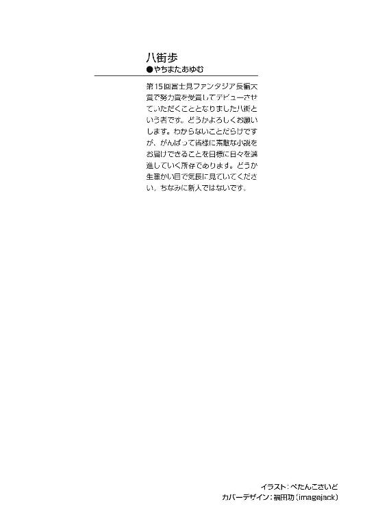
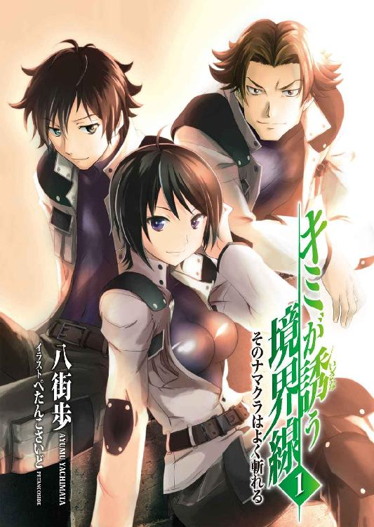
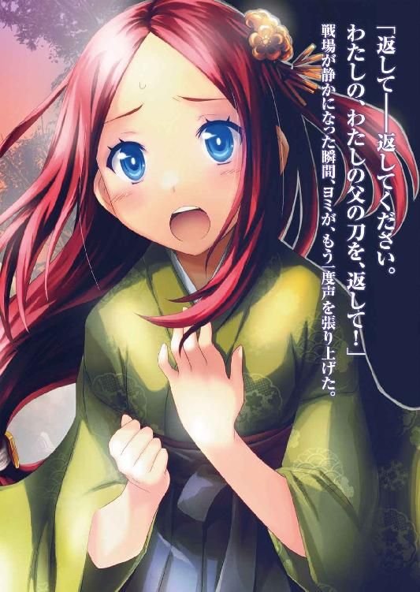
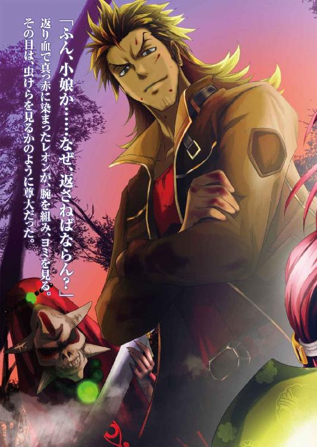
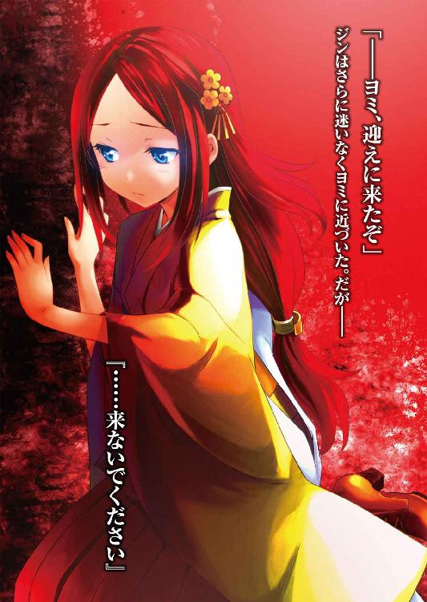

キミが誘う境界線１
そのナマクラはよく斬れる
八街 歩

富士見ファンタジア文庫
本作品の全部または一部を無断で複製、転載、配信、送信したり、ホームページ上に転載することを禁止します。また、本作品の内容を無断で改変、改ざん等を行うことも禁止します。
本作品購入時にご承諾いただいた規約により、有償・無償にかかわらず本作品を第三者に譲渡することはできません。
本作品を示すサムネイルなどのイメージ画像は、再ダウンロード時に予告なく変更される場合があります。
本作品は縦書きでレイアウトされています。
また、ご覧になるリーディングシステムにより、表示の差が認められることがあります。
口絵・本文イラスト ぺたんこさいど
序 章 十五の資格
誰かが告げた。
『お前には、資格がない』
『お前には、我々と戦う資格がない』
『お前には、我々に勝利する資格がない』
『お前には、そもそも我々と出会う資格すらない』
『故に未熟』
別の誰かが言う。
『お前には、夢を見る資格がない』
『お前には、誰かを護る資格がない』
『お前には、誰かを愛する資格がない』
『お前には、生きる資格がない』
『お前には、死ぬ資格がない』
『お前には、名を名乗る資格がない』
『お前には、人間である資格がない』
『お前には、そもそもこの世に存在する資格すらない』
『故に不要』
『故に、お前は、お前の全てを失うことになる』
だから──彼は全てを失った。
第一章 怠惰な剣士
某県南部に存在する天心町。海と山に挟まれた穏やかな気候が特徴であり、特筆すべきものはなにもない田舎町でもある。
そんな田舎町の町外れにある家──小さな家だ。築三十年以上、木造平屋、建坪十二坪のあばら屋である。一言で言うならボロ家ともいうべき家だ。
その家の中──一室に、一人の男がうつぶせに倒れていた。
まだ若い男だ。着古した服装ではあるが、不潔ではない。瘦せているが、引き締まっているとも言える。うつぶせであるために顔立ちははっきり見えないが、かすかに窺える横顔は整っており、まだ若々しかった。二十にはまだ届かないくらいの年だろう。
だが、顔色がすごく悪い。血が通ってないかのように、生気のない様子だった。かろうじて呼吸はしているものの、肌も唇もかさかさに乾燥していて、虫の息だった。
「......ぁ......ぅ......」
うめき声を漏らしたが、もはや口と喉が強ばって、まともな言葉にさえなっていない。おまけに声が小さすぎて、誰の耳にも届かなかった。
「......ぃ......みず......」
だが、かろうじて水という単語を絞り出した──平たく言えば、彼は身動きがとれなくなっていた。久しぶりに体を動かそうとしたら、全然動かない。水道まではって進むことすらも難しい状態だった。意識が朦朧として、脱水症状と熱中症が併発しているようだった。
そんな彼の前に、人影が立っていた──誰だろう？ 彼は思う。この家には自分以外誰もいないはずだが......
それは女性だった──ショートカットにした黒髪、細い眉と切れ長の双眸、まっすぐな鼻梁に、薄い唇。世間的には十二分に美人の範疇に入る顔──見覚えのある顔だった。
「......お出迎えの天使の顔が......アイと同じとは知らなかった......」
「君は、いったいなにを訳のわからないことを言っている？」
女性──アイが、呆れたように眉根を寄せた──気がついてみれば、彼は、そのアイの手で上半身を抱え起こされている状況だった。
「ジン。廊下で寝るとは、随分寝相が悪いな──そうそう、ノックしても返事がなかったから勝手に入らせてもらったぞ」
アイの口調は男らしいものではあったが、凜とした雰囲気のある彼女には、不思議とその口調が似合っていた。
「......体が......うまく動かない......」
「ふん？ 顔色が悪いな──どうせまた怠惰な生活をしていたんだろう。まぁ、最初に見つけたのが私でよかった」
アイはそう呟き、ジンの脇を抱えて、隣の部屋の中へ連れ込んだ──アイは細腕だが、これでなかなか体力があるのである。
アイは自分の荷物から取り出したペットボトルをジンに手渡した。
「飲め──慌てず、ゆっくりとな」
「あぁ......」
ジンは、震える手でペットボトルを口に当て、一気に飲み干そうとして──少し飲んだところでむせてしまった。
「ゲホッゲホッ！」
「慌てるなと言ったろう......自力で飲めないなら、私が口うつしで飲ませてやろうか？」
「......いらん」
冗談とも本気ともつかないアイの言葉に、ジンはつまらなそうに首を振った。
「だったら、落ち着いて飲むのだな」
「............」
ジンも、今度は言われたとおり静かに飲む──美味い、美味すぎる、それが率直なジンの感想だった。
ペットボトルの中身は市販の清涼飲料水だが、水分を欲し続けていた体には最高のご馳走だ。全身に水分が染み渡っていくかのような感覚である。
「まぁ、初期段階のうちに発見できてよかった......が、私は、自宅で脱水症状になりかけている男を初めて見たぞ」
「いやぁ......ここ一週間ほどずっと寝たまま過ごして、たまには起きるかと思ったら全然力が入らなくてな......」
「君はなんだって、そう毎回生命の限界にチャレンジしているのだね？」
「男は常にチャレンジャーなんだ」
「まったく、様子を見に来たのは正解だったようだな」
「いつも悪いな」
「悪いと思うなら少しは真面目に働け。毎回部長に言い訳する私の身にもなってくれ」
「実は悪いとはまったく思っていない、うわべだけ謝っただけだ」
「君のそのバカ正直なところ、嫌いじゃないが、少しは空気を読んでもバチは当たるまい」
ジンは肩をすくめた。アイも、その程度のことでこの男が改心するなどと思っているわけではないので、それ以上口うるさいことは言わなかった。
「それより......」
「あぁぁぁぁぁぁぁぁぁぁぁぁ!!」
叫び声が響き渡った。振り返ると廊下に立ち、こちらを指さす体格のいい男がいた。
「ジ、ジン、貴様、アイさんと二人きりでそんなところでなにをやっている!!」
「......うるさいのが来たなぁ」
ジンは、ため息を吐いた。傍らのアイは、微苦笑を浮かべている。
「貴様、僕がいないスキにアイさんと二人っきりで仲むつまじくなにをやっていた！」
「いや、別になにもしていないが......」
「僕だって最近は二人きりになる機会がないのに、なんで貴様が！」
新たに現れた男はジンに駆け寄ると、その襟首を摑んで起こした。
「貴様なんてうらやましい......じゃない、なんていかがわしい奴だ！」
面倒な奴が来た──ジンは率直にそう思った。
「落ち着けよ、キョウスケ──別に俺は、こんな場所で女といちゃついたりはしない」
ジンを摑む男──キョウスケに、そう説明する。
「さっきだって、アイが俺に口づけを迫ったが、俺はクールにそれを断ったくらいだ」
「なんだとぉぉぉぉぉぉぉぉぉぉぉぉぉ!!」
絶叫したキョウスケが、ジンの肩を前後に激しく揺さぶった。
「貴様、でまかせを口にするなぁっ!! アイさんが貴様如きロクデナシを相手にそんなことをするはずないだろうがぁぁぁぁ!!」
アイは、そんな二人を見て重いため息を吐いた。
「まったく......口移ししてやろうかと言ったのは確かだが......ジンも、キョウスケ相手にそんなことを言わなくてもいいだろうに......」
ジンは、揺さぶられながらも器用にしゃべった。
「おいおい、俺をなんだと思っている？ 確かに俺はロクデナシな男だが、今までウソをついたことがないのが取り柄だ」
「その言葉がウソだろう!! 青汁にハチミツを混ぜるとメロンの味になるっていうのはウソだったし、マグロの赤身を油に漬けたのがトロだっていうのもウソだし、ロミオとジュリエットは出会って三日で死んだっていうのもウソだったじゃないかぁぁぁぁ!!」
「どう考えても騙される方がバカだろう」
「開き直るなっ！」
「......一つ聞きたいのだが」
アイが、騒ぐ二人におずおずと尋ねた。
「ジン、君の体調は、もういいのかね？」
「ん？ あぁ、大丈夫だ」
ジンは答え、キョウスケの拘束を振り払うと、自力で立ち上がって体を動かした。
「水分補給したから、もう大丈夫だ」
「......呆れるほどの回復力だな、あいかわらず」
と、嘆息するアイ。
「キョウスケも、少し落ち着け。私たちがここに来た目的を思い出せ。あまり時間はないのだぞ」
「は、はい、すいません」
アイに言われ、大人しくなるキョウスケ。さて──アイが、切り出した。
「ジン。用件に入ってもいいかね？」
「いや、今は腹が減ってそれどころじゃない」
「......そう言うと思って軽食も用意してある」
「気が利くな」
アイの差し出した包みを遠慮なく受け取るジン──近所のコンビニで買ってきたらしい食料と飲み物が入っていた。今のジンに、最も必要なものだ。
ジンは早速、それをむさぼるようにして食べていく──その食欲を見て、キョウスケが呆れていた。
「貴様、今度は何日食事してないんだ？」
「二週間ちょっとか？」
食べながら、そう答えるジン。二人はさらに呆れた。
「また、ロクでもない生活をしていたな......」
「問題ない。水と塩と砂糖さえあれば一月以上はしのげる」
「その水さえ飲んでないから家の中で倒れていたのではないか？」
「そうなるな」
アイが、はぁ、と重いため息を吐いた。
「まぁいい......とりあえず、先に食べるといい。私の話はその後だ」
「あぁ」
ジンはうなずき、アイの持ってきてくれた食料を胃袋に詰め込む作業に戻った......
アイとキョウスケ──この二人は、ジンの同僚に当たる人物である。
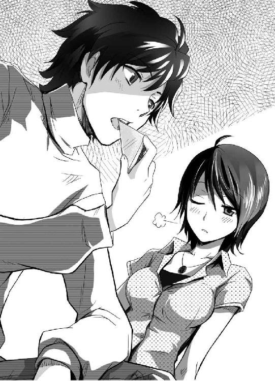
キョウスケ──名を七蓋鏡介という。年齢は十代後半。目つきがやや鋭すぎて一見すると犯罪者のように見えるが、実際は気のいい男である。身長はジンと変わらないが、ガッチリした体格なのでジンよりも大柄に見える。
性格は生真面目で、いい加減なジンを見過ごせずによく突っかかってくる。ジンも反応が面白いからとキョウスケをからかうので、二人はケンカ友達のような仲だった。
アイ──名は紗村亜衣。口調も性格もさっぱりとしていて男らしいが、れっきとした女性である。正確な年齢は不詳だが、ジンたちと同年代だ。だが落ち着いた物腰のせいでやや年かさに見られがちであり、密かに本人はそのことを気にしていた。
顔立ちは美人の範疇にはいるのだが、本人に興味がないのか、浮いた話には縁がない。この三人の中のリーダー格は、間違いなく彼女である。
──ジンが旺盛な食欲を発揮したため、食料はあっというまになくなった──食べるものを食べて、ジンもようやく落ち着いた気分だった。その様子を見て、アイが切り出す。
「ジン、任務だ。近隣にいるチームに召集がかけられた。当然、私たちのチームにもだ」
「任務ねぇ......気が乗らないな」
ジンがそう言うと、キョウスケがダン、と壁を叩いた。
「いい加減にしろよ、ジン。僕らは、セメタリー所属の『葬儀屋』だぞ。命令に逆らうことは赦されていない」
「とは言っても、たいていの任務は俺がいなくても、お前等二人だけで解決できるだろう？ いつも通りやっておいてくれ」
ジン、アイ、キョウスケ──三人で一組のチームを作っている。だが、ジンは任務があっても、滅多に参加することはなく、サボってばかりいる。
これが一般企業ならジンはとっくにクビになっているのだが、彼らが働くセメタリーという組織は、少し特殊な事情があり、ジンのような存在でも簡単にはクビにできないのだ。
「僕だってできればそうしたいさ......『養成所』で史上最悪の成績をたたき出した貴様がいても、足手まといにしかならないからな」
『養成所』──簡単に言うなら、セメタリーで働く者を育てる学校だ。彼ら三人はその頃からのつきあいだが、ジンは当時から、他の二人の足を引っ張っていた。
「落ちこぼれは落ちこぼれなりに気遣って、お前等のジャマをしないように任務をサボってるんだ」
「......だが、さすがにこれ以上はまずいぞ。部長がな、カンカンなんだ」
「リカの奴が？」
アイが、重々しく頷く。
「君はこの前の任務もサボったのがばれて、部長に大目玉を食らっただろう？」
先月──ジンはやはりアイたちに強引に引きずられて支部まで連れて行かれたのである。そのとき、部長にはかなり絞られた。
「あの時は私とキョウスケも一緒に頭を下げて、どうにか始末書を書けば赦してもらえるって話にまとめたのに......君はその始末書すら書かなかったそうじゃないか？」
ジンは悪びれもせずに答えた。
「できれば、始末書を書かなくても赦してもらえる話にまとめて欲しかったな」
「き、貴様......」
キョウスケが赤い顔で歯ぎしりをする。落ち着けとたしなめつつ、アイは眉根を寄せて珍しく困った顔になった。
「部長もさすがにマジギレしていたぞ。さすがの私も今回はなだめられん......本部と掛け合って、君をクビにすると散々わめいていた。あれは本気だな」
「ふん......やっと、辞められるってわけだな」
「貴様、悠長に構えていられると思っているのか！」
キョウスケがちゃぶ台を叩いて立ち上がった。
「貴様みたいなゴクツブシがセメタリーを追い出されたら、確実に餓死するぞ！」
「セメタリーに所属している今でも餓死しかけているけどな」
「それでも貴様が生きていられるのは僕やアイさんがたまに面倒を見に来てるからだろうっ！ 貴様がクビになったら、それもできなくなるんだぞ！」
ハァハァ、真っ赤な顔で、息を荒くするキョウスケ。アイはキョウスケほど興奮はしていないが、諭すようにジンに告げた。
「ともかくだ......このままでは、君は本当にクビになる。そうなってしまっては、さすがに私としても寝覚めが悪い」
「まぁ、俺のことは気にするな。どうにかなるさ」
アイに向かってヒラヒラと手を振るジンだが、アイは首を横に振った。
「あいにくだが──私は座して待つのが苦手な性分でな。こういうときは行動あるのみ――幸い新しい任務が都合よく出たことだ。この任務に君も参加して、そこで活躍して手柄をたてればクビの皮くらいはつなげることができるだろう」
アイが、得意そうに胸を張る。普段はあまり意識しないが、そういう体勢になると女性らしく膨らんだ胸が強調される。キョウスケは少し気恥ずかしそうに視線をそらしたが、ジンはそんなものには目もくれなかった──面倒なことになりそうだ──それが彼の率直な感想だったからだ。
「安心したまえ。私とキョウスケ、我々もできる限り手は貸す。君とて、クビになるよりは現状維持の方がよかろう？」
そう詰め寄られては、ジンとしては言い逃れようがなかった。
「......わかったよ、やればいいんだろう、やれば」
「ほぅ、貴様にしては珍しく素直だな」
「あぁ......なんて、うなずくわけないだろっ！」
叫び、ジンは部屋の窓に飛びつき、外へ転がるように逃げ出した──窓の鍵は最初から開いていた。ジンは基本的に鍵をかけない性格である。
「あ！ に、逃げた！ 逃げ足だけは速いな！」
「まぁ、落ち着け、キョウスケ」
「ですが......」
ジンは外に出ると、さっきまで身動きできなかった人間とは思えない速さで遠ざかっていく──だが、アイが静かに呟いた。
「言っただろう？ 私は座して待つのは苦手でね。すでに手はうってある」
ドサリ──いくらも進まないうちに、ジンが地面の上に倒れた。
「ジンが大人しく言うことを聞く可能性は低かったのでな、飲み物に少々睡眠薬を混ぜておいた」
「......じゅ、準備がいいですね、アイさん」
愛想笑いを浮かべるキョウスケ。アイとキョウスケ、二人も外へ出て、地面に倒れたジンのもとへ駆け寄った。
「さぁ、急がねば間に合わんぞ。キョウスケ。車をここに回せ。このまま現場に直行する」
「わかりました！」
と、キョウスケは車を取りに走っていく──残されたアイは、自分の足下に横たわるジンを、チラリと見つめた。
「騙して悪かったな、ジン──だが、私が君を信じているというのは、ウソではない。君は、こんなところでいつまでも腐っているような男ではなかろうに......君がこのままでは、私はいつまでたっても......」
最後のつぶやきは小さくなってしまい、アイ本人以外には聞き取ることができなかった。
そしてジンが目覚めたとき、彼はまったく見覚えのない山中にいた。周囲にはアイやキョウスケ以外にもセメタリーのメンバーが集結しており、誰もが忙しそうに動き回っていた。
「......まったく、めんどうなことをしやがって」
「観念しろ、ジン。ここまで来た以上、貴様にもキッチリ働いてもらうぞ」
と、ジンの傍らに立つキョウスケが、もう逃げられないぞ、と告げてきた。実際その通りなので、さすがのジンも覚悟を決めた。自分用の自動外装を手に取り、準備を整える。
セメタリー──それがジンたちの所属する組織の名だ。
セメタリーは端的に言えば秘密結社だ。世界中で起こる、決して表向きにできない事件に対処するために結成された超法規的組織である。
この世には、存在してはならない物、あるいは、存在しないことになっている物が無数に存在する。自然界に本来あってはならない存在、超自然的な方法で誕生してしまった存在、存在自体が他の生物にとって害悪にしかならない存在──そういった存在が発見されたとき、セメタリーは速やかに目標の物体を破壊、もしくは回収していく。
ジンたちはそのセメタリーという組織の中の『葬儀屋』という部隊に所属している。『葬儀屋』は実働部隊の一つである。封印指定の下された存在──すなわち、セメタリー上層部が危険だと判断した存在を現地で回収、または破壊するための部隊だ。
言ってしまえば常に最前線で戦う一番危険な部署である。封印指定を受けるものにも様々なものがあるが、時には一国家を滅ぼしかねない危険な存在を封印しなくてはならないこともある。正直命がいくつあっても足りないほどだ、その分給金はいいが。
まとめると、世の常識を守るため、この世に存在してはならない存在を秘密裏に葬り去る、それが『墓場』という組織。そしてその墓場に目標を葬るための部隊が『葬儀屋』というわけである。
ジンは、ゆっくりと周囲の様子をうかがった──どこかの山中であることは間違いない。高い木々が生い茂り、日がすでに傾いているということで、かなり周囲は暗い。
山肌の少し開けた広場に、『葬儀屋』のメンバーが展開して急がしそうに動き回っている。見える範囲に山道や道路らしきものはないので、かなり山奥なのかもしれない......ジンは、自分の情報端末を操作して、閲覧可能な情報に目を走らせてみた。
Ｓ県の山中──場所に関する情報にはそう書かれてあった。そしてこの山は、ジンの家から意外と近い場所だった。車を飛ばせば小一時間の距離だ。こんな近くにこんな怪しい山があったなど、ジンも初めて知った。
すでに周辺の幹線道路は別部隊の手で封鎖され、現場にいる人間は『葬儀屋』の関係者のみとなっているらしい。
「お膳立ては、バッチリというわけか......」
ジンは、呟いてみる──周囲の様子をうかがうと、同僚たちは各々、自分の装備の点検をして、空気はピリピリ張り詰めている。ジンも、さすがにここまできたらサボることはできない。自分の装備の点検をすることにした。
ジンの全身を包むのは、体にピッタリフィットした黒いスーツ。そのスーツの上に、全身の各部急所を守るためのプロテクターがつけられているため、体格が一回りくらい大きくなっていた。さらに頭部には、フルフェイスの厳ついヘルメットもつける──簡単に説明すると、そんな装備だ。
全身を包む現代の甲冑とも言うべき装備は、『葬儀屋』の標準装備。正式名称は全域対応強化機甲自動外装であり、使用者の間では短く自動外装と呼ばれるものだ。
セメタリーの装備は先端技術の固まりである。体を護るプロテクターも、新開発された特殊合金による複合装甲だ。多少の銃弾などものともしない。
例えばヘルメット──こちらもプロテクターと同じ素材であるため、極めて高い耐久力を誇っている。フルフェイス式のヘルメットの内側全面には、有機ＥＬディスプレイが張られ、モニタとなっている。作戦行動中は常に最新情報がこのモニタに表示され、メンバー全員がその情報を共有することができる。
頑強なプロテクターは鈍重そうに見える。実際その重量は百キロ近くあるのだが、装備者の負担は極めて少ない。
自動外装全体は一つの金属フレームによって支えられており、各関節部にある超電導モーターとギアは、人間の体の動きを迅速にトレース、強化してくれる。すなわち、この自動外装を装備すると、生身の人間以上に素早く、より力強く動くことが可能なのである。
当然だが、こんな最新装備は世界のどの軍隊でもまだ採用されていない。セメタリーのみが独占する、まさに世界最高峰の装備なのである。
ジンは、自分の自動外装に問題がないかをチェック、正常に稼働中であると確認して、もう一度周囲を見回した。
この場にいる『葬儀屋』の同僚──ざっと、二、三十人といったところか。この山一つをカバーするには少し物足りないが、秘密組織であるセメタリーが大規模に動くことは難しい。これくらいが妥当なところだろう。
周囲の人間も、ジンと同様、すでに黒い自動外装を装備していた。ヘルメットは外している者もいるが、装備している者も多い。
フルフェイスタイプであるため、ヘルメットをつければ相手の顔がまったく見えなくなる。デザインは全員共通なので、完全装備状態となると個人の識別が難しい──ように見えるが、実際はそんなことはない。
本人もヘルメットをかぶれば、モニタに表示される相手の頭上に、所属部隊と名前の略称が表示されるようになっているのである。そのため味方なら一目で相手を識別できる。
ただし──ジンは、ヘルメットを被っても首をひねった。相手の名前を見ても、さっぱり記憶にない名前ばかりだったからだ──まぁ、別にいいか、とうなずいた。ジンは、もともと細かいことは気にしない性格なのだ。
『おい、ジン。何をウロウロしている？』
耳元で声。キョウスケだ。ヘルメットに内蔵された無線である。ジンは軽く答えた。
『なに、少し状況確認をな』
『普段あまり顔を出さない貴様がうろつくものだから、周りが不審に思っているぞ。もう少しじっとしておけ』
まったく、口うるさい奴だな──内心ジンは毒づくが、キョウスケの言葉にも一理ある。ジンは大人しく、近くに転がっていた石の上に腰掛けた。
モニタ内の時間が、〇に近づいていく──これが〇となれば作戦行動開始だ。流石のジンも、開始時間が目前となって気を引き締めた。一応先ほどアイたちから説明を受けたものの、もう一度今回の作戦内容を確認しておくことにした。
任務の目標は、『禁機指定』レベル三が一体。これを撃破、あるいは回収すれば任務達成となる。
『禁機指定』とは、セメタリーが封印指定を発動し、回収の対象となった存在のことである。レベルは、事前情報から予測される回収の難易度だ。レベル三というのは中堅的な難易度──人員数十名以上を推奨とする封印指定である。
人員は足りているので、このまま順調に行けば問題なく終わらせることができるだろう──ジンは、そう判断した。それに何より、ジンはアイやキョウスケ達と同じチームである。なにかあってもあの二人がいるならなんとかなるだろうとさえ考えていた。
ジンがそんな風に気楽に考えていたその時──
ビービービー
警告音が耳元でけたたましく鳴り響いた。同時に、ジンの視界の中、モニタに『緊急事態発生』の真っ赤な文字が点滅していた。なにごとだ、と、周囲に緊張が走った。
『近隣の『葬儀屋』全隊員に通達。こちらバンパイア・リーダー。緊急事態発生につき、予定を繰り上げ、直ちに作戦を開始する』
と、野太い男の声が響いた。バンパイア・リーダー、それは現場指揮官のことだ。この現場に派遣された『葬儀屋』の部隊は、第四〇四機甲戦団、部隊名『残酷な吸血鬼』であるため、指揮官はバンパイア・リーダーと呼称されている。
指揮官の言葉に、周囲に散開していた『葬儀屋』のメンバーは素早く動き、各々が武器を片手に所定の配置についていく。
『ジン、ぼさっとするな！ 僕たちはこっちだぞ！』
『わかっている』
ジンもキョウスケに叱責されるまま、山の斜面を駆けていく──走りながらも、指揮官の説明に耳を傾けた。
『目標の『禁機指定』は現在、山中をゆっくりとした速度で移動中だ。目標に変化はない』
モニタ内に周辺の地図が表示され、ジンたちの現在位置と、目標の位置が光点で表示された。二つの距離は直線で二キロ足らず。無論、間は道らしい道のない山であるので、直線で進むのは難しい。
『だが、約七分前、国道XX号線を封鎖していた部隊からの連絡が途絶えた。敵勢力による襲撃の可能性が極めて高い、以降、敵勢力との交戦を前提とした作戦に変更する』
最初の目標である『禁機指定』以外にも敵が増えたということだ。ジンは、ヘルメットの中で眉をひそめた。レベル三の『禁機指定』を相手にするギリギリの人数しかいないのに、他の敵を相手にするのは少し厳しいかもしれない。
『敵勢力についてだが、レーダーに反応はなく、別働隊からも異常の報告はなかった。よって、敵勢力は極めて少人数であると予測されるが、油断はできん』
セメタリーの部隊を突破するのは、軍隊でも容易なことではないのだ。相手が並の相手でないことは、誰もが気づいていた。
『敵勢力の詳細に関しては現在全力で解析中だが、待っているわけにもいかん。一部作戦を変更し、『禁機指定』の封印部隊と、敵勢力との交戦部隊、二つに人員をわける──アルファ、ブラボー、チャーリー、デルタチームは予定通り『禁機指定』の封印を優先。残りは敵との交戦に備えろ。敵勢力に関しては、足止めを最優先。その隙に封印部隊は急ぎ、『禁機指定』を処理しろ。処理完了後は交戦部隊と合流、そのまま敵の殲滅にうつれ』
『ブラボー１了解』
と、アイが返事をした。
セメタリーでは三人一組のチームが基本であり、ジンはアイやキョウスケとチームを組んでいる。そして三人のチームは今回、ブラボーチームの呼称を与えられているのである。ブラボーチームのリーダーは、アイだ。
封印部隊は四チームなので、全部で十二名。推奨人数の半分以下の人数で対処するのは困難だが、そのことで不安を口にする者は、ここにはいなかった──推奨人数はあくまで目安。その人数を下回ったとしてもやり方次第で十分対処できるのだ。
『チャンスだな』
と、キョウスケが呟く。
『封印部隊の人数が減ったぞ。手柄を立てるチャンスだ』
『ブラボー２、すでに作戦行動中だ。私語は慎め』
『ブラボー２、了解』
アイに叱責され、キョウスケは口をつぐむ。
作戦行動中は、お互いを名前で呼ばず、番号で呼ぶ。それぞれの呼称は、ブラボー１がリーダーのアイ。ブラボー２がキョウスケ。ブラボー３がジンとなっている。
ジンは唇を舐めつつ、指定されたルートを走っていく。指示通り進めば、彼らはこのまま『禁機指定』とぶつかることになる。
ジンの視界の中、モニタ内の地図では、味方を示すマーカーがそれぞれの方向に散開していくのが確認できた。
すでに日は山の稜線に消え、高い木が生い茂っていることもあり、周囲はかなり暗い。通常なら、足下もロクに見えないほどだ。だが、自動外装には暗視装置が標準装備となっているので視界は問題ない。
さらに視界のモニタには、目標までの最短コースが矢印となって表示されている。なんの目印もない山中であっても、道に迷うことはない。
ジンたちが疾走を続けて十分足らず──
『止まれ！』
アイが、キョウスケとジンを押し止める。
『近くに『禁機指定』がいるぞ。警戒を怠るな』
モニタの地図上では、ジンたちの現在位置と、目標のマーカーがほぼ重なっていた──さすがに若干の誤差があるので目と鼻の先にいるとは限らないものの、近くに『禁機指定』がいるのは確実だ。
ジンは、周囲を見る。味方を示すマーカーは、彼らよりも後方にいた。どうやら、ジンたちが一番乗りとなったようだ。
『......ジン、どうした？ やけに静かだな』
と、キョウスケがジンに声をかける。ジンは、あぁ、と答えた。
『なんでもないさ』
『ジンも、久々の任務で緊張しているのだろう。案ずるな。我々の実力なら、レベル三の『禁機指定』くらい対処できる』
先ほどは私語を注意していたアイだが、今度は饒舌にフォローの言葉を入れてきた──先ほどは周囲に他の味方が多かったために注意したが、今は近くに彼らしかいないため、多少の余裕があるのだ。
ジンは、わかっているさ、と短く頷く──実際、アイとキョウスケの実力は折り紙付きだ。ジンが心配するまでもなく、二人に任せれば何事もなくこの作戦は終了する──
しかし、ジンは妙に落ち着かない気分だった。変な言葉だが、胸騒ぎがする......いったいなんなのだろうか、この内心のざわつく感覚は。
『こちらキョウスケ。三時方向、強い金属反応だ』
キョウスケの言葉に、ジンとアイも動く。少し離れた位置にいたキョウスケに追いつき、キョウスケの示す方向を確認──木々の向こう側で、ゆっくりと動く錆色の物体が見えた。
それは、一言で言うなら四足歩行の獣のようだった。だが、それが現存するあらゆる陸上生物とは一線を画する存在であることは、一目見ただけでも明らかだった。
まず、大きい──体長は、少なく見積もっても十メートルは下らない。日本国内で最大の陸上生物と言えばヒグマだが、大型のヒグマでも体長は三メートルほどである。その巨体は、明らかに常識外れだ。
ギシギシ、ドンッ
しかも、その存在は、どう見ても生物の範疇から外れた存在だった。なぜなら──体が金属でできているからだ。
だが、いわゆるロボットとはまた違う存在だった。簡潔に言うなら──それは、無数の刀だった。数百以上の古びた刀が一塊となり、獣の姿を形成しているのだった。一歩動く度に軋むような音と、重々しい足音が周囲に響きわたる。
これこそが今回の封印指定、レベル三と認められた『禁機指定』である。
四百年以上昔──かつて、この山では戦国時代に大きな合戦があり、多くの人間が死んだとされている。その死者を鎮める神社がこの山にはあったのだが、その神社のご神体であった刀が突如動き出し。目の前の存在になったという──それが、セメタリーから事前に通達された情報である。
古くなった道具には魂が宿るという思想が、この国にはある。いわゆる九十九神と呼ばれるものだ──なぜこんなものが生まれたのか、その根本的な理由は、戦う駒にすぎないジンたちには知らされていない。そして、『葬儀屋』は、そんなことを知る必要はない。
こういった常識外れのバケモノが現れたなら、問答無用で全部倒す──それが『葬儀屋』の仕事であり、それが全てなのだ。
『こちらブラボー１。目標を視認した。これより戦闘にうつる』
『了解した』
アイは武器を片手に走りながら命令した。
『キョウスケは目標の裏に回り込め。ジンは私に続け』
『キョウスケ、了解』
『............』
『ジン、復唱はどうした？』
『あぁ、そっか......ジン了解』
ジンは久しぶりに参加した任務であるため、復唱をすっかり忘れていた。耳元で、ヤレヤレというため息がかすかに聞こえた。
『本当に......頼むぞ、ジン』
『ＯＫだ。全力を尽くす』
ジンたち以外の封印部隊は、現場に急行しつつある。ほどなく合流できるだろう。だが、アイはすでに戦闘準備に入っており、他のメンバーの到着を待たずに交戦する気だ。
このチームの実力ならば十分対処できるという自信、他のチームを出しぬきたいという功名心、今回は確実に手柄をたてておきたいという焦り──様々な感情がアイの内心で渦巻いていたであろうことは、想像に難くない。
ジンもキョウスケも、アイのその行動に疑問は持たない──彼ら三人の間では、これくらいのムチャは、ムチャのうちに入らないのである。
『キョウスケ、配置についた。いつでも大丈夫です』
『了解した。抜刀後、つっこむぞ。手はずはいつも通り。ジンは援護』
『ジン、了解』
『行くぞ』
アイは短く呟き、自動外装の腰に装備されていた刀を抜く──『葬儀屋』では標準装備となっている近接用の装備、参式斬型黒刀である。
刃渡りは九十センチほど。反りの少ない刀身が特徴で、名前の通り刀身は黒い。
大型の日本刀といった感じの外見だが、自動外装に身を包んだ人間が構えると、大きいとは感じない、標準的な大きさに見えてしまう。
自動外装に身を包んだアイとキョウスケが、左右から目標の九十九神に向かってつっこんでいく──速い。自動外装の力で加速し、生身の人間では不可能な高速で、同時に斬りかかっていく。
ギ、ギ、ギ
九十九神はわずかに反応したが、遅かった。その時には二人が九十九神の右前足と左後ろ足を、切断していた。
ギャギャギャギャ
悲鳴のような声を上げて、九十九神の体が傾き、大音声と共に地面に激突する。
アイとキョウスケはすぐその場から離れていく。が、倒れた九十九神はその首を伸ばし、巨大な顎で、逃げるアイを嚙み砕こうとする。その口の中には無数の刀が並んでおり、嚙みつかれれば自動外装があるとはいえ、無傷では済まないだろう。
ガリンッ
と、アイに迫っていた九十九神の頭がのけぞった。ジンの援護射撃が命中したのである。ジンはアサルトライフルを構え、接近戦を繰り広げるアイたちのサポートをしていた。
だが、ジンの射撃は間違いなく顔面に直撃したというのに、相手に傷らしい傷はなかった。九十九神は目とおぼしき部分を光らせ、恫喝するような雄叫びを上げた。
ギギギギギ
軋むような音をこぼしながら、九十九神は残った二本の足で立ち上がった。すると、切断された二本の足が傷口に吸い込まれ、元通りの四つ足が再生されてしまった。
接近したことで、九十九神の体をよく見ることができる。九十九神の体を形成しているのは無数の錆びた刀と甲冑だ。どれもボロボロで、腐食して原形もとどめていないようなものも多い。おそらく、これらは全て、大昔の品だろう。錆びているから脆いはずなのだが、崩れても崩れてもたちまち元通りになってしまう。
攻撃を繰り返すアイも、分が悪いと見たらしい。
『チッ、いったん距離をとれ。来るぞ』
アイの言葉が終わるより早く、九十九神が動いた。ダンッと、大きな音と同時に、その巨体が消える。
ジンの視界の中、真っ赤な上向きの矢印が表示されて警告音が響く。上空か、と見上げる。九十九神は巨体に似合わぬ鋭い動きで跳躍し、彼らの頭上を飛び越えていた。
バンッ
九十九神は空中で近くの樹の幹を蹴った。太く見えた樹が一撃でへし折れ、その反動で九十九神は宙を舞い、一瞬でキョウスケの背後にまわりこんだ。
『キョウスケッ！』
ジンは反射的にライフルの引き金を引いた。乾電池サイズの弾丸がばらまかれ、いくつかは九十九神にも命中したが、ダメージを受けた様子はない。
九十九神の巨大な腕が、キョウスケの体を薙ぐ。装備も含めれば二百キロ近くあるキョウスケの体が、石ころのように吹っ飛ばされた。
『キョウスケェェェェェェェェェ!!』
『......うるさいぞ、ジン。僕なら問題ない』
と、生身なら即死していたであろうキョウスケが、立ち上がる──自動外装の防御力のおかげで助かったようだ。
『ジン、油断するな！ 奴が狙っているぞ！』
と、ジンは背後に、なにか巨大なものが落下する気配を感じた。逃げ遅れた、と感じたときにはもう手遅れだった。それでも転がるように逃げようとしたが、背後から疾風の速さで、九十九神の巨大な腕が伸ばされてくるのがわかった。回避はできない......
と、その時、九十九神の体で爆発が起こった。金属の巨体が倒れるほどの衝撃である。
『ブラボーチーム、先走りすぎだ』
と、声が響く。遅れていた他の封印部隊がようやく合流できたらしい。
『こちらのチームは援護射撃に入る』
『アイ、了解した。ジン。もう一度せめるぞ』
『ジン了解──だけど、斬っても大して効いてないんじゃ、接近戦は危険だろう？』
『わかっている──だが、手がないわけではない。奴の核さえ破壊すれば、あの巨体は維持できまい』
核──それはすなわち、もともとこの山の神社に納められていたという刀だ。確かに、その中心となっている刀さえなんとかすれば、倒せるだろう。
ジンは指示に従ってライフルを撃つ。味方の援護射撃も増えて、九十九神の全身に弾丸が命中。ボロボロと、錆びた金属が崩れる。崩れてもすぐに再生されるものの、目に見えてその動きが鈍ってきていた。
『いいぞ、ワイヤー射出っ！』
周囲の味方が一斉に手を伸ばし、九十九神の体に向かって細長い紐状のものを伸ばした。金属製のワイヤーだ。無数のワイヤーが九十九神にからみつき、その動きを封じる。
『動きが止まったぞ！』
『任せろ、核をいただく！』
叫び、アイが跳躍した。地面に崩れた九十九神の巨体に、上空から飛び乗り、両手で黒刀を、その胴体めがけて突き立てる。
ギギギギギギギギ
苦悶するかのように、九十九神が悲鳴を上げる。行けるぞ──その場にいた誰もが、そう思った。
ギャァァァァァァァァァ
だが、次の瞬間、九十九神は咆哮と共に、力強く立ち上がった。ワイヤーを摑んでいた周囲のメンバーは、あっさりと持ち上げられ、次々と吹っ飛ばされていく。
『なんて馬鹿力だ！』
強引にワイヤーの束縛を振り切った九十九神は、さらに跳躍。常識外の機動力で跳び回り、周囲の葬儀屋たちを鎧袖一触の勢いで弾き飛ばしていった。
『これは......さすがにヤバいだろう？』
『禁機指定』レベル三の実力はやはりとんでもない。さっきまではこちらが有利だったはずなのに、あっというまに形勢が逆転してしまった。
『ジン、ボサッとするな！ アイを援護する！』
と、ジンの耳にキョウスケの叫び声が響く。先ほど九十九神に飛び乗ったアイだが、暴れる九十九神の背中にしがみつき、突き立てた黒刀にさらに力を込めている様子だった。
『アイ、危ないぞ！ 離れろ！』
『これしきのことでっ！』
ジンは牽制でライフルを発射するが、九十九神の動きに翻弄され、ほとんど当たらない。それに、命中させても背中のアイにまで当たる危険性がある。
『アイさんっ、今行きます!!』
『おい、キョウスケ！』
キョウスケが黒刀を片手に無謀に突っ込んでいく──
『この、鉄くずの固まりがッ！ この僕の刀で今こそ......』
ギャァァァァァァァァァァァ
ズガンッ
九十九神の腕が、キョウスケを吹っ飛ばし、キョウスケの体はゴムまりのように木々の奥へと消えていった。
『クソがッ、キョウスケが殺された！』
『......ふ、ふざけるな......僕は死んでない......』
思わず叫んだジンだったが、すぐにキョウスケが返事をしてきた。どうやら、生きてはいるようだ。
そして九十九神は、自分の背中にしがみついているアイの存在も疎ましく思ったようだ。
ギェェェェェェェェェェェェ
九十九神が、跳躍。空中で反転すると、背中を下に、一気に落下してきた。
ズガァァァンッ
地震とも思えるような衝撃が周囲を震わせた。九十九神は背中から地面に激突し、その巨体でアイの体を押しつぶしてしまったのである。
『チッ、手間取りすぎたか』
いや──アイは、無事だ。激突の寸前、その背中から跳躍して逃げていた。
『アイ、キョウスケがやられたぞ。状況は不利だ』
『わかっている......確かに手強い。だが対処が不可能なレベルでもない』
ジンの言葉に、アイは動じることなく答え、手の黒刀を構えなおした。
『奴が暴れまくったお陰で味方が散り散りだ──アイより各員へ。ブラボーチームがもう一度、奴を引きつける。他の者はその間に体勢を立て直せ！ これ以上手間取るわけにはいかん、次で片付けるぞ！』
『アルファ１、了解』
『チャーリー１、了解』
『デルタ、了解』
アイの言葉に、混乱しかかっていた現場が落ち着きを取り戻していく──『葬儀屋』でも随一の実力を誇るアイには、統率力もあるのだ。
そして彼らがもう一度動こうとしたとき──再び、けたたましい警告音が鳴り響いた。
『撤退命令？ バカな！ まだ決着はついていない！』
アイが叫ぶが、通信機からは無情な声が響いた。
『バンパイア・リーダーより全部隊に通達。総員撤収せよ。繰り返す、総員撤収せよ』
『アイよりバンパイア・リーダー。説明を要求する。こちらは、後十分もあれば、封印できるぞ！』
『交戦中の敵勢力の正体が判明した。連中は〈斯界の剣轟〉だ』
〈斯界の剣轟〉──その名に、味方の間で緊張が走った。
『葬儀屋』の人間なら、誰もが知っている。最新装備に身を包む『葬儀屋』は、大国の軍隊とぶつかったとしても、互角以上に戦う実力がある。
そんな『葬儀屋』であってもできれば戦いたくない相手の筆頭──それは間違いなく〈斯界の剣轟〉だ。
『すでに交戦部隊の半数近くが戦闘不能となった。現在の装備と人員では、連中と戦うのは困難であると判断した。それ故の撤退命令だ』
『......アイ了解』
アイが頷く──たとえこのまま『禁機指定』の封印に成功しても、退路が確保できないまま〈斯界の剣轟〉と戦うことになれば、全滅は必至だ。
〈斯界の剣轟〉──それは世界最強の剣客集団と呼ばれている。彼らは世界中のあらゆる場所の戦闘行為に介入してくる集団として、恐れられている存在だった。その構成員は剣轟と呼ばれており、その名の通り刀剣を主な武器として戦う。最新装備で完全武装した『葬儀屋』でも、まともにぶつかれば、勝てるかどうかは難しい。
連中がなぜここにいるのか──その目的は不明だが、すでに交戦して、味方に多くの被害が出ている。客観的に判断しても、ここは撤退すべきだろう。
『総員撤収せよ。封印部隊は交戦部隊の撤収を援護せよ』
『了解』
そんな命令をされても、ジンたちは現在九十九神と交戦中だ。このまま下がれば、後方の〈斯界の剣轟〉と挟み撃ちにされてしまう可能性が高い。普通に退くだけでは、危険だ。
『アルファ、ブラボー、チャーリーの三チームで交戦部隊の援護。デルタは『禁機指定』の足止めをしつつ、後退しろ』
『了解』
そう命令をしたのは、アルファチームのリーダーだ。ジンはその相手の顔も名前も知らなかったが、気にせず了解と頷き、先を急いだ。
しばらく進むと、何人かの味方とすれ違った──撤退する交戦チームだ。
『全員止まれ──アルファ１より各員へ。ここで剣轟の足止めを行う。いいか、極力戦闘は避けろ。足止めさえできればそれでいい』
ジンは指示通り、木陰に隠れつつ武器を構える。
『いいか、剣轟どもを人間と思うな！ 奴らは人間の皮を被ったバケモノだ！ 降伏勧告もいらん！ 発見次第発砲し......ガフッ！』
と、そのアルファ１からの通信が不自然にとぎれた。最後が、くぐもった悲鳴のようにも聞こえるのが不安をかき立てる。
ジンは、アルファ１の様子をうかがう──モニタ内の画像が自動で拡大され、その中で地面に倒れ伏す自動外装の姿が確認できた。胸部のプロテクターが破壊され、上半身を真っ赤な血で汚し、ピクリとも動かない──アルファ１の生命反応消失と、モニタ内で無慈悲な文字が躍る。
「......セメタリーのザコどもめ、まだこんなに残っていたのか」
倒れたリーダーの近くにいるのは、抜き身の日本刀を持った男だった。革製のジャケットに、すり切れたジーンズ、道もない山中ではひどく不自然なカッコウだ。
精悍な顔つきをしているが、まだ若そうだ。おそらくは二十代くらい──金髪を逆立てており、鋭い犬歯が見える野性的な顔立ちは、あたかも獅子のようだった。
その男の全身は返り血で汚れており、手の刀にも血糊がベッタリついている──剣轟である。状況判断だが、間違いないだろう。
『撃てェェェェェ！』
誰が叫んだかはわからないが、その叫び声を合図に、待ちかまえていたメンバーが一斉にライフルを発砲する。問答無用である。
「くだらん......」
だが、剣轟は不快そうに顔を歪めた。ただ、それだけだった。
ガガガガガガガガガガ
甲高い金属音が響く。男の手が、目にもとまらぬ速さで体の周りで動いた──剣轟に向かう弾丸、その全てがあらぬ方向に弾かれ、男にはかすりもしていない。
剣轟に銃器は通じない──そういう噂はあったが、それが紛れもない事実であることを、この場にいる誰もが悟った瞬間であった。
「そしてぬるい攻撃だ......興ざめもいいところだな」
男は、低く呟く。その声には、恫喝の色も交ざっていた。決して大きな声ではないはずなのに、全員の耳にその声ははっきり届いていた。そしてその声に気圧されたか、誰もが銃撃の手を止める──続けても無意味だと、全員が悟っていた。
獅子のごとき雄々しい顔をした剣轟は、歯茎を見せるような嘲笑を浮かべた。
「身の程知らずどもめ──貴様等が俺の相手をするなど、百年早いわ」
「やっと追いついたネ、レオン」
「まだ......こんなにいる......」
と、剣轟の背後から、新たに二人の人影が合流する──状況的に、仲間だろう。
ジンは情報を確認する──モニタ内の敵情報の中に、確認された剣轟は合計三人と表示されてあった。となると、これで全員そろったことになる。
「で、レオン。どうするのネ、こいつらハ？」
と、言ったのは小柄な人物、二人目の人物だ。
かなり背が低く、中学生程度の身長しかない。その体をゆったりした上着で包んでいる。頭にはフードを被り、その顔には鬼のお面をつけていた。明らかに異様な外見だ。そして甲高い声だけでは、この人物が男か女か、判別するのは困難だった。
「......殺していい......のか？」
ボソボソ低い声で喋るのが三人目の人物──体格は、三人の中で一番優れている。身長二メートル以上、筋骨隆々とした巨漢である。その太い腕には、人間の胴体をあっさり両断できそうな、巨大な斧が握られていた。
「これ以上こんなザコどもの相手をしては、俺の刀が泣くわ！」
リーダー格らしい一人目の剣轟──レオンというらしい──が、そう吠える。
ジンには、理解できた──確かにこの三人の剣轟は、誰もが常識外れの力を持ったバケモノだろう。だが、その三人の中で一番強いのは間違いなくレオンという男だ。ただ、その場に立っているだけで周囲に発している重圧感が、圧倒的だ。その存在感のみで、今この場を支配していると言ってもよかった。
そのレオンが、つまらなそうに呟いた。
「俺が手を下すまでもない......刀狩り、お前の力を見せてやれ」
「はいはいネ」
刀狩り──そう呼ばれた鬼面が、両手を広げた。
「キャプチャーッ！」
刀狩りが叫び、その広い袖口がジンたちの方へ向けられた──瞬間、突風が巻き起こる。
『なんだ、これは！』
味方に動揺が走った。突風は、『葬儀屋』のメンバーが手に持つライフルを、奪っていったのだった。
『バカな！』
それだけではない。味方が装備していた武器──腰につけていた銃器はむろん、黒刀やナイフ、手榴弾に至るまで、あらゆる装備が突風に巻き上げられた。
そしてそれらの武器は、鬼面の袖口の中へ全て吸い込まれ、消えてしまった。十人以上の持っていた武器だ。かなりの質量があったはずだというのに、それを吸い込んだ刀狩りの小柄な姿に、変化はなかった。
「フッ......刀狩りの異能は、全ての武器を奪う。武器が無くては、貴様等にできることはあるまい」
レオンが朗々と声を響かせる。
「安心しろ──貴様等ザコの相手はもう飽きた。逃げるものを追ってまで狩りはせん。俺の視界から今すぐ消えるならば、見逃してやろう」
それはあまりに一方的な宣言であった。だが──レオンの実力を見せつけられた後、だめ押しに刀狩りの異能まで見せられて、すでに味方の戦意はかなり下がっていた。レオンの言葉に、『葬儀屋』達はジリジリと、警戒しつつも後退していく。
だが、その様を見たレオンが不快そうな息を漏らす。
「......目障りだと言ったはずだ。逃げるならさっさと消え失せるのだな。いつまでも俺の視界にいると、気が変わって全滅させたくなってしまう」
その声に弾かれるように、『葬儀屋』のメンバーは、全速力で逃げ出していった。
しかし、逃げたのは全員ではない──その場に踏みとどまった例外が、存在した。
「ほぅ......命が惜しくない奴が、三人ばかり残っていたか」
そう剣轟の前から動いていないものは三人──ジンに、アイ、キョウスケだった。
『生憎、見逃すと言われてあっさり逃げるほど安いプライドを、私は持っていない』
アイは、臆することなく答えた。レオンはその言葉に、再び獰猛な笑みを浮かべる。
「その声は女か？ その気概はなかなか評価できる──だが惜しいな。俺を相手にその態度は、寿命を縮めるぞ」
『それはどうかな』
アイが、手の黒刀を構えた──ほぅ、と剣轟が声を漏らす。全ての武器は、先ほど刀狩りによって奪われた──にもかかわらず、アイは黒刀をまだ握っている。
「刀狩り、手を抜いたか？」
「いや......私は確かに、全力でやったネ」
「となると......あの女の『魂』が、お前を上回っているということか？」
「......そうかもしれないネ」
刀狩りは、不服そうに頷く──つまり、アイは刀狩りの異能に抵抗できるだけの実力があったということだ。
『......さて、ジンとキョウスケ。私につきあわずとも、君達は撤退していいのだぞ？』
アイが、三人にだけ聞こえる個人回線で話す。三人だけなので、互いを名前で呼んだ。
『正直、こいつ等と戦うのは、自殺も同然だ』
その言葉に、キョウスケが首を振る。
『水くさいですよ、アイさん。まさか、僕らがここで逃げ出すはずが......』
『よし、俺帰るから、後は任せたぞ』
『待て。今更逃げられるわけないだろう！』
逃げようとしたジンの手を、キョウスケが摑んだ。
『逃げるなら他の連中と一緒に逃げろ！ 今逃げたら、背中から襲われるぞ』
『......いやぁ、なんとなく、二人が逃げなかったから、俺も残っただけだ』
ジンが、ぼやく──まぁ、今更後悔してももう手遅れだ。
『正直──こいつらが僕らを見逃すと言って、それを全面的に信じるのはどう考えても愚かな選択です。味方が撤退する時間を稼ぐ方法があるなら、それを実行すべきです』
キョウスケが答える。模範的な答えに、アイは静かに頷いた。
『そうだな。そしてそれは──この場にいる『葬儀屋』のメンバーでトップの実力を持つ我々の仕事だ』
『......いや、落ちこぼれの俺は関係ないんじゃないか？』
ジンがおずおずと言うと、すかさずキョウスケが嚙みついた。
『今更手遅れだ。逃げ出すタイミングを間違えた自分を呪うんだな』
『キョウスケに呪いあれ！』
『なんで僕を呪うんだ！』
『お前も逃げそびれたんだろ？』
『バ、バカ言え。僕は、残るべきだと思ったから残ったんだ』
『でもお前、武器もないのになにする気だ？』
『............』
そう──アイは確かに、まだ黒刀を持っている。だがキョウスケは手持ちの装備の全てを、刀狩りに奪われていた。
一方の剣轟たちは──ふむ、とレオンが頷いた。
「あの女は、多少骨があると見えるな」
と、手の刀を構え直す。
「いいだろう。ならばその腕前、この俺が試してやる──今度は、失望させてくれるなよ」
「レオン。遊んでいていいのかネ」
「そう言うな、刀狩り──どんなときでも余裕は必要だ。それに、こんな面白そうな獲物を見逃すのは、俺の主義に反する」
「はいはい──あんたがそう言うなら、好きにするがいいさネ」
と、レオンが、静かに動き出した。仲間の剣轟達は、その場に立ったまま動かない。レオンに任せる気のようだ。
『来るぞ......キョウスケは、これを使え』
アイが後ろ手で腰のナイフを抜くと、キョウスケに投げ渡す──刃渡り二十センチはある大型のナイフである。刀身は黒く、黒刀と同じ素材で作られたものだ。
『銃器の効果が薄い以上、接近戦を挑むしかない』
『助かります』
キョウスケは受け取ったナイフを片手で構える──日本刀を持つ剣轟を相手にするにはやや心許ないが、ないよりはマシだ。
『ジン......悪いが、私も黒刀とナイフを確保するだけで精一杯だった。君に渡す武器は、もうない』
『わかってるさ......俺も死ぬ気はない。できるだけのことはする』
ジンは、そう答えた。この状況下で、余裕さえ窺えるほど大胆な態度だった。
「どうした、かかってこないのか？ ならば俺からゆくぞ」
レオンが、三人に向かってゆっくりと、歩を進めてくる。アイもキョウスケも、武器を構えたまま動かない──いや、動けない。下手に動くと、一瞬で間合いを詰められ、斬り捨てられる──レオンは、そういう相手だ。
場の緊張が極限まで高まったその時──異変が起こった。
ギャァァァァァァァァァァ
金属同士がぶつかり合うような甲高い音と共に、上空から巨大な金属塊が落下してきた。のである。
『なっ！』
『九十九神か!?』
突如飛び出してきた九十九神の巨体がジンたちの目の前に落下してきた。
九十九神は大地を震わせながら着地すると、首を持ち上げ、周囲の人間を恫喝するような咆哮をあげた。
『クソ、九十九神の足止めはどうなっているんだ！』
モニタの情報によれば、すでに味方は総崩れとなってジンたち以外は全員逃げ出したらしい──九十九神も、足止めする人間がいなくなって自由になったということか。
動揺するジンたちとは対照的に、レオンは突然現れた九十九神にも、まったく動じた様子を見せなかった。それどころか、ニタリと口元に笑みさえ浮かべている。
「ようやく姿を見せたか、手間取らせおって......金剛！ お前の出番だ！」
「......了解......」
金剛と呼ばれた、巨漢が動いた。金剛は九十九神に接近すると、その手に持つ巨大な斧で傲然と、斬りかかったのだ。
ギャァァァァァァァァァ
たったの一撃で、九十九神のその巨体が吹っ飛ばされた。周囲の木や岩を砕きながら、その巨体が、弾丸のように吹っ飛んでいく──桁外れの怪力である。
だが、レオンは不服そうにこぼす。
「金剛、少しは手加減をしろ。目当ての品に、傷がついたらどうする気だ」
「......すまない......」
『チャンス......かもしれん』
アイが、小さく呟いた。
『剣轟の意識は九十九神に向いている。仕掛けるにしろ、撤退するにしろ、今が最善のチャンスだ』
確かにその通りだ。
『撤退しましょう、アイさん。正直このままでは......』
キョウスケが口ごもるが、その意見にはジンも賛成だった。このまま戦ったところで、自分たちにできることはないように思える。
『そうだな、それが一番いいかもしれん......合図をしたら、ジンとキョウスケは二人で撤退しろ』
『アイさんは？』
『私は最後尾だ......このまま撤退したところで、剣轟が見逃してくれる可能性は低い』
そんな会話をしている間も、目の前の激戦は続いていた。
ギギギギギギ
と、吹っ飛ばされた九十九神は体を軋ませながらも起き上がり、次の瞬間、疾風の如き速さで駆けだし、剣轟に襲いかかった。
周囲の木を、小枝のようにへし折りながら巨体は駆け抜け、巨大な爪のある腕を、金剛めがけて振り下ろす──『葬儀屋』を蹴散らしたその腕を、金剛は正面から受け止めた。
「......む......」
短くうめき、よろめくが、それだけだ。金剛はその場で踏みとどまる。
ギャァァァァァァァァァァ
九十九神は咆哮をあげ、金剛を踏みつぶそうと力を込めるが、金剛はその場から動かない。力が拮抗しているようだった。
「どうした、金剛！ 馬鹿力がお前の取り柄だろう！ まさか力競べで負けるような醜態を俺に晒すわけではあるまいな！」
「......むぅ......」
金剛が、うめく──そんな状況を観察して、アイが言う。
『剣轟は、一人で九十九神の相手をしている。残りの二人はフリーだ。逃げる我々を見逃すほど親切な連中とは、私には思えん』
『でも、それでは、アイさんが......』
『議論する暇はもうない。仕掛けるなら、今だ！ 逃げろ！』
叫び、アイが、駆け出す。不意打ち気味に、レオンへ背中から襲いかかった。
だが、レオンは振り返ることもなく、片手で構えた刀で、アイの黒刀を易々受け止めた。
「......まさか、この程度で俺の不意をついたつもりか、セメタリー？」
『とんでもない......勝負はここからということだよ！』
アイが、動く。レオンの刀を弾き、目にもとまらぬ速さで鋭く斬り込んでいくが、レオンも同じ速さで動き、かわしていく。
『キョウスケ、逃げるぞ』
『バカか、貴様！ アイさんを一人残していく気か！』
『今は逃げるのが俺たちの仕事だ......違うか？』
ジンの言葉に、キョウスケがうめく──目にもとまらぬ速さで斬り結びを展開するアイとレオン、動きが速すぎて、加勢したくても加勢できない状況であった。
それでも納得できていない様子のキョウスケの腕を摑んで、ジンは走り出した。
『早く逃げるぞ......丸腰じゃ、どうしようもない』
今ある武器はナイフのみ──打つ手がないとはこのことだ。
「......レオン、残りが逃げるネ」
だが、一人自由な剣轟──刀狩りが、そう呟く声がジンたちの耳にも聞こえた。
「あいつらは、私の好きにしていいんだネ？」
「......好きにしろ。俺は忙しい」
アイと戦いながら、レオンが答える──アイとレオンの戦いはほぼ互角で、互いに攻めあぐねている状況だった。
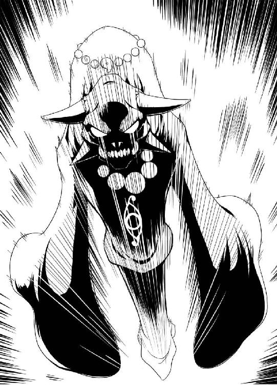
「はいはいネ......じゃぁ、軽く始末するかネ」
刀狩りはそう言うと、ジンたちを追って、地面を疾駆する──速い。距離はそれなりに開いていたはずなのに、十秒足らずの時間でジンたちに追いつけるだろう。刀狩りは、いつのまにか片手に日本刀を構えていた。
『ジン、先に行け！ 僕が食い止める！』
と、キョウスケが後ろを振り返り、叫んだ。
『おいおい、一人でカッコつける気か？』
『いいから逃げろ！ どうせ貴様がいても、足手まといだ！』
キョウスケの言葉は正論だ。だが、ジンは思わず立ち止まった──刀狩りは、すでにキョウスケを自分の間合いに捉えた。たちまちキョウスケに迫り、手の刀で、キョウスケを斬り捨てようとしている。対するキョウスケはナイフを片手に立っているが......正直、キョウスケが勝てる見込みはないだろうな、とジンは冷静に分析した。
キョウスケの腕は認めるが、相手が悪すぎる。今のキョウスケでは、このレベルの剣轟を相手にまともに戦えない。
──しかたないか──
ジンは、内心で素早く計算する。
『キョウスケェェェェェ!!』
『え!?』
逃げると思っていたジンが自分の方に向かってくる──キョウスケは、一瞬混乱した。その一瞬のスキを、刀狩りは見逃さない。
「もらったネ」
刀狩りは瞬き一つする時間でキョウスケの目前につっこみ、その胴体を薙ぐ──自動外装があろうと、一刀両断できる。剣轟には、それだけの実力があった。
だが、刀狩りの攻撃は、宙を薙いだ。一瞬前まであったキョウスケの胴体が、忽然と、刀狩りの目の前から消えたのだった。
「なん......っ！」
消えたのではない、足下にいた──キョウスケは、うつぶせに地面に倒れていた。背後からキョウスケにタックルをしたジンが、強引に地面に押し倒したのである。
『貴様、いきなりなにをする』
『上だ、キョウスケ！』
文句を言う暇すらない。刀狩りはすぐさま刀を持ち替えて、足下に転がる二人めがけて突き刺してくる。
二人は互いの体を蹴り飛ばし、その反動で刀狩りの攻撃を避け、素早く立ち上がった。
『ジンッ！ どういうつもりだ！』
『いや、危ないと思って、とっさに助けてやったんじゃないか』
『バカ言え、貴様の助けなど無くても、僕は......』
『いいから、来るぞ！』
刀狩りは躊躇無く、刀を腰に構えて地面を蹴った。
「チョコマカめんどうだネ......っ！」
そのまま、再度キョウスケを斬り捨てようとした瞬間──横手から巨大な物体が衝突してきた。
ズガァァァァァァァァン
それは錆びた金属塊──九十九神だった。九十九神は、地面を抉るように転がっていく。その進行方向に偶然いた刀狩りも捲き込まれかけたが、とっさに片手でバク転をして、その勢いで、一緒に吹っ飛ばされることだけは防いだ。
「なにするんだネ、金剛！ 私まで捲き込む気かネ！」
「......すまん......」
金剛は、両手を広げた体勢で、荒く息を吐いていた──どうやら、金剛が九十九神を投げ飛ばしたらしい。その方向に、たまたま刀狩りがいたわけだ。
ともあれ、剣轟同士の連携がとれていなかったおかげで、ジンたちは命拾いをした。
ギヤァァァァァァァァァァァァァ
だが、戦いはまだ終わっていない──吹っ飛ばされた九十九神は、周囲に土砂をまき散らしながら再度立ち上がり、咆哮。その巨大な顎の中に、強烈な光が生まれる。
それは闇夜を斬り裂くかのような光だった。青白い、炎のように揺らめく光が、九十九神の口の中からあふれ出てくる。
『......さすがに、やばくないか？』
『だな』
ジンとキョウスケが頷きあう。視界の中、モニタには真っ赤な文字で『高エネルギー反応』『危険』『撤退を勧告』と表示される。
『とにかく逃げよう！』
ジンが、早くも逃げようとする。だが、キョウスケは叫んだ。
『バカを言え、アイさんをどうする気だ！』
アイは、レオンと激戦を繰り広げていた。木々の間を跳び回り、木をなぎ倒し、斬り裂きながら、目で追うのが困難なほどの速さで、剣轟と斬り合っている。
『アイなら自分でなんとかするだろう、命あっての物種だ。早く逃げろ』
『待て、貴様......』
そう話している間にも、九十九神はクビを大きく振り回し、巨大な顎を限界まで広げた。その喉の奥から、眩いばかりの光が、解き放たれる。
ドバァァァァァァァァァァァ!!
山全体が震えた。比喩ではなく、地震のように、大地が激しく震動する。眩い光の奔流が闇を斬り裂き、山そのものを砕きながら駆け抜けていく。
「ぬ、これは」
『チィッ！』
斬りあっていたアイとレオンも、直撃は受けなかったが、その余波だけで木の葉のように飛ばされていく。
それはジンとて例外ではない──自動外装のオートバランサーのお陰で転倒せずに走っていたのも最初だけ。すぐに巻き起こった衝撃波がジンの体を持ち上げ、周囲にある木も岩も地面も、なにもかもを捲き込みながら吹っ飛ばしていく......
何度も地面に叩きつけられ、何度もなにかに激突し──どっちが上か下かもわからなくなるほど転がって、ジンの勢いはなんとか止まった。
体の上に載った土や岩を押しのけ、なんとか自力で立ち上がる。
『まったく、カンベンしてくれ......』
自動外装のお陰で大けがはない。せいぜい打ち身程度で済んだようだ。
周囲を見渡す──地面に、まるで干上がった川の跡のような凹みができている。それが、先ほどの九十九神の攻撃によるものであるのは一目瞭然だった。凹みはどこまでもまっすぐ伸びていて、終わりがかすんで見えないほどだった。
いや......ジンの、視界がかすむ。妙だな、と思った時、モニタにノイズが走った。
『ゲ......マジかよ』
思わずうめき、首に手を当て、頭部を護るヘルメットを外してみる──一見するとなにかの怪物のようにも見える大型ヘルメット。その一部が砕け、そこから見える回路から火花が飛び散っていた。今の衝撃で、壊れたらしい。
「やばいな、これ......」
言うまでもないことだが、自動外装は恐ろしく高価なシステムだ。以前一回、適当に使っていたら壊れたことがあったが──部長に思いっきり怒られた。
悩んでもしかたない、と半分諦め、ヘルメットを被り直す──幸い、モニタに多少ノイズが走るが、まだ使えることは使える。とりあえずの視界は確保できた。
『えぇっと......アイ、キョウスケ、聞こえるか？』
通信機ごしに呼びかけるが、雑音しか聞こえない──どうも、通信機能は壊れているようだ。これはすこしキツイな、とジンはぼやいた。他にも使えない機能が多そうだ。
と──ダンッ
背後で、何かが動く気配がした。
『誰だ？』
振り返ると、そこには、九十九神の錆びた巨体がそびえ立っていた。
『キョウスケ、そっちはどうだ!?』
『ダメです、アイさん』
──アイとキョウスケ、二人は互いに声を掛け合いながら、地形が変わってしまった山中を走っていた。九十九神の攻撃で吹き飛ばされたのは二人も同じだが、こちらは比較的簡単に合流できていた。
『クッ......ジン、応答しろ、ジン！』
広域に電波を飛ばしているのだが、答えはない。アイはヘルメットの中で歯がみした。
自分は少し焦りすぎていたのかもしれない──アイは、少し反省していた。危険な状況にもかかわらず、剣轟の足止めを引き受けたのはアイの意志だ。その判断が、間違っていたとは思わない。味方の撤退を確実にするためにも、誰かがやるべきだった。
しかし、それにキョウスケとジンを捲き込んだのは、間違いだったのかもしれない。
アイは、キョウスケには聞こえないよう、ホゥ、とヘルメットの中で短く息を漏らした。顔の汗をぬぐいたいが、自動外装をつけている今は不可能だ。
ジンもキョウスケも、アイにとってはかけがえのない仲間だ──少なくとも、アイはそう思っている。
だが──思い出す。今朝のことだ。上司の部長に呼び出された。何事かと思って行ってみれば、顔を真っ赤にした部長が、今度こそジンをクビにすると叫んでいた。
ジンがいったいなにをしたというのですか、とかばったのだが、なにもしないのが問題なんだ、と言われた。流石のアイにも反論のしようがなかった。
ジンには実力がある、とアイは思っていた。今はくすぶっているものの、いつか大きな事を成し遂げてくれる気がする──誰も信じてはくれないが、少なくともアイは、『養成所』時代からジンのことをそう評価していた。
しかし──今回はどうしようもない。アイでもかばいきれなかった。
せめてジンがマジメに働いて、それでなにか大きな手柄を立てれば帳消しできるのに――そう考えたアイの行動は速かった。ちょうど、非常召集がかけられる封印指定が発動されたのも、好都合だった。
今回ばかりはジンの首に縄をつけてでも現場に連れて行くと決意し、事実強硬手段でここへ連れてきた。
後は、アイの腕次第だ。ジンやキョウスケとはいつも通りチームをくめたので、アイが努力すれば、チーム全体の功績となる。報告書を多少脚色してジンが活躍したように見せかければ、クビにされることはないだろう──アイは、そう考えていた。
だから──アイには、なんとしてもここでなにか手柄を立てておく必要があった。
しかし、そのせいで余分な犠牲が出てしまったのかもしれない。当のジン本人がまきこまれて消えてしまったのでは......
『アイさん、どうしたんですか？』
キョウスケの声に、意識が現実に引き戻された。アイは、頭を振る。
『......なんでもない。それで？』
『ジンの生命反応がありません。まさかとは思いますが、最悪の事態の可能性も......』
キョウスケが、悲痛な声を漏らす。アイは知っていた。キョウスケは普段ジンに突っかかってはいるものの、それはジンを嫌ってのことではない。本気でジンを嫌っているなら、とっくの昔にこのチームは解散しているだろう。
『根拠もなく悲観するのは感心しないな、キョウスケ』
アイは、努めて冷静な声で答えた。キョウスケに内心を悟られないよう、意識して声に感情を込めないようにする。
『確かに生命反応はないが、自動外装の反応もない。これは、さきほどの攻撃で、自動外装が破損して反応が消えたと考えた方がいいだろう』
『ですが、自動外装が破損するほどの衝撃なら、着用者が無事で済むとは......』
『キョウスケ。ジンは、この程度で死ぬ男ではない』
アイは、呟く。
『無論、君もだ──私の目の黒いうちは、私のチームから死者は絶対にださん』
『アイさん......すいません、僕としたことが、少し弱気になっていたようです』
キョウスケの声に、力が宿る。なんとか、気を持ち直したようだ。
二人は、山の中を再度走り出す......近くにジンがいるのは間違いない、なんとしてでも合流しなくては......
『......アイさん、作戦本部から撤退命令が何度も来ています』
『気になるなら、君は下がれ。私にはやるべきことがある』
『......いえ、ここで僕だけ下がれません。はやく、あのバカを捜しましょう』
『そうだな』
アイも頷く──剣轟の姿は見えない。まさかあの程度のことで死ぬような連中ではないはずだが、現在どこにいるかはアイでもわからない。今は出会わないことを祈るだけだ。
しかし......たかがレベル三の『禁機指定』一体に、剣轟三人──強敵といえば強敵だが、この程度の事態で部隊が半壊するとは『葬儀屋』も不甲斐ないな、と思ってしまう。
無論、その不甲斐ないセメタリーに所属している、自分自身が何よりも不甲斐ない──アイは仲間の姿を求めながら、内心苦々しく思っていた。
ギギギギギ
金属が軋むような音が、ジンの耳に聞こえる。視界を埋め尽くすほどの九十九神の巨体が、ジンの目の前にあった。
少し遅れて、『接近警報』とモニタに表示──遅い、ジンは毒づいた。もっと早く言え。今更逃げられるか、やっぱりこれ壊れたのか──そんなことを考える自分は意外と余裕が残っているようだ、と分析するジン。
ジンは、咄嗟に腰に手を伸ばす──腰の後ろに装備されたナイフを握った。このナイフは、刀狩りの能力からかばい、隠していたものだ──ナイフ一本程度ではできることなどないので先ほどは使わなかったが、いざというとき手に武器があるのと無いのとでは違う。
だが──目の前の九十九神は、首を曲げ、まっすぐジンを見下ろすだけだった。ジンは首をかしげ、ゆっくりと、構えを解く......錆びた金属が集まってできた、獣のような顔。大きな口の中には刀がキバのように生え、目に当たる部分には仄かな炎が揺れている。
その炎が、ジッと、ジンを値踏みするかのように眺めているようだった。
『......貴様カ......』
声が、響く。機械がしゃべっているかのような、無機質な合成音であった。
『......貴様ガ、ソウナノカ......』
『お前......しゃべれたのか？』
声の主は、九十九神らしかった。九十九神はジンを見下ろしたまま、静かに声を漏らす。
『気ニ入ランガ......ヤムヲエン......』
九十九神の巨大な顎が開き、その巨大な口が、ゆっくりと、ジンに近づいてくる。
ドサリ──九十九神の、喉の奥から、何かが転がり出てきた。ジンは、反射的に両手でそれを、受け止めた。
『......コノ子ヲ、護レ......』
『え？』
ジンが受け止めたもの──それは人間だ。年端もいかない少女が身じろぎもせず、ジンの腕の中にぐったりと横たわっていた。
小柄で細身の少女、年は十五歳前後。多く見積もっても二十は超えないだろう。
長いまつげの揺れるまぶたは今は閉じられているが、顔の造形はかなり整っている。まっすぐな鼻梁に、薄い花びらのような唇。長い髪は、精緻な髪留めでまとめられている。着ている服装は、古めかしい和装。小袖に袴を着けていた。両手で長い棒状の物を抱きしめたまま身動きしないが、呼吸はしているので死んでいるわけではないようだった。
ジンは、端的に言えば混乱した。この状況で混乱するなという方がムリだ。
が──ジンの混乱に答えるべき相手である九十九神は、無機質に告げた。
『約束ヲ......果タセ......』
『おい！』
ジンが叫ぶが、九十九神はそれ以上しゃべることなく、首を持ち上げ、体を曲げると大きく跳躍──足音を響かせながら、山の奥へとあっという間に消えていった。
『あぁ、クソ......どうすりゃぁいいんだよ！』
ジンは思わず頭を抱えたくなったが、両手で少女を支えているのでそれすらもできない。
とにかく──ジンにできること、それは、一刻も早くアイやキョウスケと合流することだ。あの二人が、まさかこの程度のことで死んだとは微塵も考えていない。
さて......ジンは悩む。この女の子を、どうするべきか。
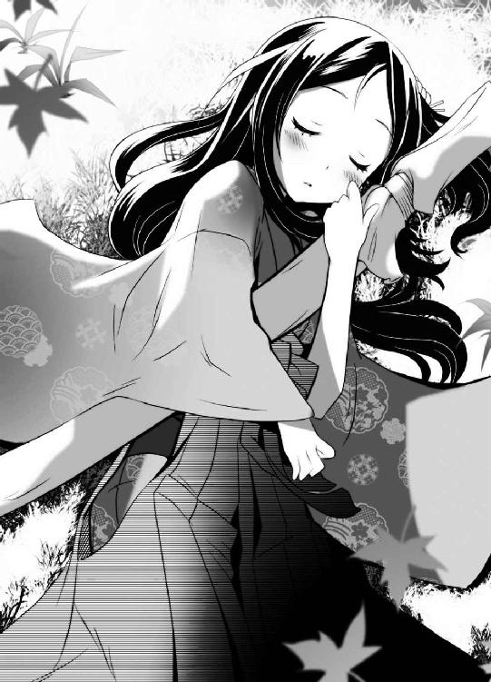
見捨てるという選択肢は、最初に却下した──たしかにジンはモノグサでロクデナシだと自分でも自覚しているが、だからといって女の子を見捨てるほど鬼畜外道ではない。
だが──今は、状況が状況だ。この山の中には、九十九神や剣轟がいる。この先、その戦いにジンが捲き込まれない可能性は、低い。ジンと一緒にいたら、かえって危険かもしれない。
ジンは、決心した......下手に連れ回すより、ここに置いていった方が安全だ、たぶん。
木と岩に挟まれた陰のところに、そっと少女の体を横たえる──目は閉じられたままで、起きる気配はない。それが逆に幸いだった。
周囲の風景をしっかり記憶──味方と合流した後は、ここへ戻ってくる腹づもりだった。
見捨てるわけではない。少女を連れて行けない理由はもう一つあった──セメタリーの行動は全て極秘裏に行われなければならない。今回のような『禁機指定』の封印中に無関係な民間人が紛れ込んだ場合──セメタリーは、口封じを躊躇わない。
だから、ジンが少女を抱えて味方と合流するのは、逆に少女にとって危険なのだ。
ジンはその後、脇目もふらずに駆けだした──幸い、自動外装の身体サポート機能は問題ない。山の中を、風のような速さで走っていく。
だが──いくらも走らないうちに、ジンは足を止めた。
ズガァァァァン
なにか、重い物が激突するような轟音と、震動が周囲に響き渡ったためだ。
『......無視して進むってわけには、いかないよなぁ......』
音の感じからして、かなり近い。無視して進んでも、相手に気づかれる可能性が高い。背後を襲われるくらいなら、こっちから近づくべきか......
ジンは用心しつつ、音のした方向へと進んでいった──幸いそちらの方向には木が多く、身を隠しながら進むのには最適だった。
近づくにつれ、現場の様子がはっきり見えた。無数の木を捲き込んで地面に倒れているのは、九十九神だった。近づくにつれ、その九十九神の異変が、はっきり見えるようになっていく。
まず、前足が一本無い──今までは、足を切り落とそうがすぐに再生していたのに、いつまでたっても再生しなかった。
それどころか、錆びた金属でできた体が、崩れていた。少し動くだけで、体から金属がこぼれ落ちる。目の輝きも弱々しく、動きも緩慢で、明らかに弱っていた。
「手間を取らせおって」
と、九十九神を傲然と見下ろしながら吐き捨てるのは、レオンだ。レオンの傍らには金剛と刀狩り、二人の剣轟も並んでいた。三人の剣轟はまったくの無傷である。
「大人しく俺に従えば、大切に使ってやったというのに──貴様は、人を見る目がなかったようだな」
ギギギギギ
剣轟達から、数十メートルほど離れた位置で、ジンは物陰から様子をうかがう──これ以上近づいたら、おそらく気づかれる。これがギリギリの距離だ。
「しかし、あまりにも弱すぎる。歯ごたえがなさすぎるというのも、いたく興ざめだな」
つまらなそうに、レオンが呟いた。
「先ほどはもう少し手応えがあったと思ったのだが......気のせいだったか？」
「さてネ。別にこいつが弱いならそれでいいネ。手間が省けるだけのことだネ」
「刀狩り、無粋な奴だ」
「無粋で結構だネ。正直言って、私にはあんたの、敵は強ければ強いほどいい、なんて考えは理解できんネ。敵は弱い方がいいに決まっているヨ」
「ふんっ、つまらん奴め」
ギギギ
体を軋ませながら、九十九神は首を持ち上げた。もはや動くだけでもやっとの、緩慢な仕草だった──先ほど『葬儀屋』をはねのけた敏捷性は、もはや残っていない。
そんな九十九神を眺め、レオンは、フンッ、と鼻を鳴らした。
「もう充分だろう──刀狩り。お前の出番だ」
「はいはいネ。あまり錆びた武器は食べたくないけどネ......キャプチャーッ！」
刀狩りが叫び、袖口を広げながら九十九神へ向けた。途端、刀狩りを中心に突風が巻き起こり、九十九神の体が一気に崩れていく。
ギャァァァァァァァァァ
断末魔のような悲鳴とともに、九十九神は完全に崩れ去り、無数の錆びた鉄くずの山となった。
そしてその錆びた武器、甲冑などは、全て刀狩りの袖の中へと吸い込まれていき──数秒ほどで、九十九神の姿は完全に消えた。
そして、刀狩りの手には、一振りの刀が握られていた。それだけは袖口に吸い込まれることはなく、夜闇のなかで白刃を煌めかせながら、そこに存在していた。
「こいつが、今の奴の核だネ」
刀狩りは呟きながら、その刀を振り回す。
「たぶん、この地の怨念を吸収した妖刀の一種だネ」
「見せてみろ」
レオンに言われて、刀狩りは大人しくその刀を手渡した。
レオンはその刀を片手に持ち、角度を変えながら、その全体をなめ回すように眺めていき──やがて、つまらなそうに息を漏らした。
「......期待はずれだな。この程度の刀では、俺の力に耐えきれん」
「なかなかの業物だと思うけどネ。妖刀としては、それなりの力を秘めているネ」
「ならお前にくれてやろうか？」
「いや──私もいらんネ」
「ふんっ」
レオンが、怒りをかみ殺すように声を漏らした。
「間違いなく、この近くに鉄舟の遺作があるはずだ──俺の本能が、そう告げている」
「てっきり今のバケモノが呑み込んだんだとばかり思ったんだけどネ」
「チッ。手がかりの小娘を見失ったのは手痛いな......」
鉄舟の遺作？ ジンは首をひねった。それが、連中の狙いなのか？
その瞬間、ジンはわずかに気がゆるんだ。ジンの足下で、木の枝の折れるかすかな音が響いた。それは小さな音だったが──カンの鋭い剣轟に気取られるには十分すぎた。
「......どうやら、ザコが隠れているようだな」
ジンのいる木陰を睨み、レオンが呟く。
「セメタリーの犬め。こそこそと目障りだな」
刀を構えるレオン。ジンは、とっさにごまかそうとした。
『ワンワンワン』
犬の鳴きマネで、なんとかやりすごそうとする──自分でも、ムリがあるかなと少しだけ思った。
だが、それを聞いた剣轟の反応は意外なものだった。
刀狩りと金剛は、呆れたようにその場で固まっている。だがレオンは、肩を震わせて笑い声を漏らしたのだった。
「ふ......ははははははは。ただの犬かと思えば、多少は道化の才能を持っていると見える」
レオンが放っていた炎のような殺気が、弱まるのをジンは感じた。
「よかろう......手がかりを追ってきたが全ては徒労となり、俺も疲れた。貴様如き道化一匹斬ったところで、無聊の慰みにもならん。見逃してやろう」
と、レオンが手を振り、ジンに背を向けた。刀狩りと金剛も、無言のままレオンに続く──どうやら、助かったようだ、とジンは安堵した。
しかし──数歩歩いたところで、レオンが振り返った。
「道化。貴様名を何という？」
道化、というのがジンのことを指しているのだと気づくのに、少し時間がかかった。
『............』
「道化。俺の質問を無視するとは、なかなかの度胸だ」
『ん？ あぁ、俺のことか......あいにくだが、俺は見ての通りの道化者でね。道化者は人様に胸を張って名乗れるほど立派な名前を持っていないんだ』
軽い調子でそう答える──実際、その通りだ。ジンには、誇るべき自分の名前が、ない。ジンという名も、本名ではない。
そんなジンの返答を聞いたレオンは、目を細めた。
「俺を前にそれだけふざけた態度をとれるとは、なかなか大した道化だな」
『別にふざけちゃいない──ふざけているのはあんたらの態度だろう？ 初対面の人間捕まえて道化呼ばわりは、ちょっとばかり礼儀知らずだろう』
物怖じせずジンが言い放つと──剣轟達から、たちまち殺気が巻き起こった。
「こいつ、生意気だネ」
ジャキン
刀狩りの袖口から、一本の刀が飛び出した。その刀を軽々と振り回し、構える刀狩り。
「レオン。殺していいよネ？」
「......好きにしろ」
レオンの許可を聞くやいなや、刀狩りは地を蹴り、目にもとまらぬ速さでジンとの間合いを詰めてきた。速い。瞬き一回している間に、刀狩りはジンの鼻先にまで迫っていた。
ブンッ
上半身をのけぞらせ、一撃目をかわせたのは、自分でも奇跡に近いとジンは思った。
「チッ」
舌打ちしながらも、刀狩りはすぐさま体勢を整え、追撃してくる──かわしきれない。そう判断したジンは、咄嗟に腰に手を伸ばし、今まで隠し持っていたナイフを、抜いた。
ガギン
間一髪、刀狩りの攻撃を、ジンはナイフで受け止めた──受け止めただけで、手に痺れるような衝撃が伝わってきた。小柄なのに、とんでもなく強烈な打ちこみだったのだ。
「なんっ！」
だが、刀を受け止められた刀狩りは、驚いたような声を漏らした。鬼面の奥に見える目が、動揺したように揺れる。
チャンス、とばかり、ジンは腕に力を込め、小柄な刀狩りを弾き飛ばした。
刀狩りは弾かれながらもすぐに体勢を整え直し、ジンを睨んだ。
「お前......何者だネ!?」
『言っただろう？ 名乗るほどの名前なんてない』
「ふざけるんじゃないネ！」
刀狩りが怒鳴り、刀を振りかぶった。
「お前なんて、お前なんて、私が本気を出せば......」
「止めろ、刀狩り！」
と、レオンが一喝した。
「お前の負けだ、刀狩り──刀を収めろ」
「どうしてだネ、レオン！ こいつを殺していいと言ったのはあんただネ！」
「......理由など、俺が言わずとも、貴様自身が知っているはずだ」
「グッ」
言葉に詰まる刀狩り──レオンが、静かに語る。
「刀狩り──貴様は、異能でセメタリーどもの武器を全て奪ったはずだ」
「............」
「貴様の異能は、相手のあらゆる武器を簒奪する──だが、そこにいる道化は、未だに武器を隠し持っていた。これは、どういうことだ？」
ジンが隠し持っていたナイフを、レオンは指さし、不敵に笑った。
「その道化は、どうやら貴様の異能に抵抗するだけの『魂』を持っているらしいぞ。そして、それを俺にも悟られずにこれまで武器を隠し持っていた──さっきの女もなかなかの腕だったが、俺はお前の腕の方に興味が湧いてきた」
レオンが、ジンをまっすぐ見つめる。その目には、獲物を前に舌なめずりをする獣のような、残忍な輝きが宿っていた。
「まったくもって、なかなか興味深い」
「......こんなザコ、私がすぐ倒してやるネ！」
刀狩りが、刀を振り上げた──が。
「刀狩り、俺が止めろと言ったのだ──逆らうか？」
瞬間、猛烈なレオンの殺気が、刀狩りに向けられた。刀狩りが、反射的に身を強ばらせ、動きを止める。
「わ、わかってるネ......あんたと戦う気はないネ」
「さて......道化。このまま貴様と一戦交えるのも面白いが──ジャマが入りそうだ」
レオンが、肩をすくめる。ジャマ？ なんのことだ、とジンは首をひねった。
「だが、楽しみはとっておいたほうが感動も際だつというものだ──貴様とは、そう遠くないうちに出会えるだろう」
会いたくないな、と内心思ったジンは、つい軽口を叩いてしまった。
『なんだ、俺に再会したいのか？ あいにくだが、俺の再指名料は高いぞ』
レオンが、さらに含み笑いを漏らした。
「ククク......面白い奴だ。いいだろう。その再指名料とやらを、先払いしてやろう」
ビュッ──レオンが、片手に持っていた刀を、目にもとまらぬ速さで投げた。弾丸のような速さでジンに迫る刀を、ジンは、咄嗟に両手で受け止めた。
パシッ──ギリギリで、ジンはその刀を受け止めることができた。あとコンマ数秒反応が遅れていれば、ジンの頭は弾けていただろう。
「そんなナマクラ、俺にとってはガラクタだが、貴様等は欲しいのだろう？ 遠慮せずに受け取れ。それが貴様の、再指名料代わりだ！」
レオンはそう言って、笑った。
「道化、俺は貴様が気に入った。俺を相手にそこまで大口を叩ける奴は久々だ。次に会ったとき、貴様は俺の剣で斬ってやろう。その時を楽しみにしておけ」
レオンは笑いながら立ち去っていく。金剛も無言のままそれに従い、刀狩りは忌々しそうにジンを睨んだ後、やはり大人しくレオンの跡を追っていった。
「......覚えているがいいネ」
刀狩りの忌々しそうな捨て台詞だけが最後に聞こえた──助かったか、とジンは息を漏らした。
『......ジン......どこだ......聞こえ......のか』
と、雑音交じりにジンを呼ぶ声が、通信機から聞こえてきた。もしかして、レオンの言っていたジャマとは、これのことだろうか？ ジンは、すぐに応答した。
『こちらジン。無事だ』
『やっと見つけたぞ──そこを動くなよ、すぐに合流する』
どうやらアイたちはジンの居場所を摑んだらしい、通信機の声も、次第にはっきり聞こえるようになってきた。
『それで、状況はどうなった？ 剣轟どもは？』
『あぁ......連中は撤退した』
ジンは、チラリと、足下に転がる妖刀を見た......この刀が今回の目標、レベル三『禁機指定』の核になっていた刀のはずだ。ジンは、一応報告しておくことにした。
『それと、『禁機指定』、その目標を確保した。すでに回収済みだ』
『なんだと？ 貴様が回収したのか!?』
キョウスケの驚いたような声が響く──別にジンがなにかをしたわけではないが、それを説明するのは面倒だな、と思って、ジンは適当に返事をした。
『あぁ、まぁ、そんな感じだ──俺の力をもってすれば、たやすいことだな』
『ふむ......真偽はどうあれ、お手柄のようだな、ジン』
と、アイが嬉しそうな声を漏らす。
『君はいつかやってくれる男だと、私は信じていたよ』
『買いかぶりだよ、アイ』
『謙遜せずともいい──よし、打ち上げは私がおごろう』
『おごってくれるなら、なんでもいいや』
『厚かましいな、貴様はあいかわらず！』
キョウスケが文句を言うが、いつものことなのでジンにとっては馬の耳に念仏だ。
だがジンは──なにか、大切なことを忘れているような、そんな想いにとらわれた。
そしてアイやキョウスケと合流した後──ジンはようやく、九十九神の体内から現れた謎の少女の存在を思い出したのであった。
第二章 黄泉
『ふん、おめおめとよくあたしの前に顔を出せたものだな、このゴクツブシが！』
帰投したジンを出迎えたのは、この罵声であった。だが、このように言われるであろうことは、ジンも半ば予想できていたので特に動揺はしなかった。
剣轟達が撤退した後、ジンはアイたちと合流、そのまま三人で作戦本部へと帰投した。
本部とは言っても、山間の空き地にテントを張っただけの場所である。一応ここから、最前線の各部隊へ指示を飛ばしていたのである。
テントの中には様々な精密機械が所狭しと並べられ、周囲には、強引に山の中に入ってきた装甲車が、ものものしく周囲を警戒している。
一番大型のテントの一角、大型モニタの前に、ジンとアイ、キョウスケの三人が整列していた。先ほどからジンに罵声を浴びせる張本人は、そのモニタの中に映し出されていた。
『あたしは未だかつて、貴様のように無能で、グズで、救いようのないゴクツブシを見たことがない！ その貴様がなんでそこにいる！ なんで死ななかったんだ？ それとも今から死ぬのか？ なぁ、答えてみろよ、なにか喋ったらどうだ！』
「なにか」
よせばいいのに、軽口で返事をするジン──当然だが、その返答は相手の怒りに油を注いだだけだった。
『そうか、死にたいんだな、貴様死にたいんだな！ 貴様このままですむと......』
「部長、落ち着いてください」
と、モニタの中の人物をなだめるアイ。モニタの中、真っ赤な顔をした相手は、荒く息を吐いていた。
『......まったく、お前達がこのゴクツブシをかばう理由があたしにはわからんぞ』
投げやりに言うモニタの中の人物。それは意外な人物だった。
女性である──アイと同様、男らしい口調ではあるが、れっきとした女性だ。だが、その姿を見た者は、誰もが違和感を覚えるだろう。
少女であった──より正確に言うなら、モニタの中にいる女性は、少女にしか見えない外見だった。
小柄で童顔。ソファに偉そうにふんぞり返っているが、小柄なせいでソファに埋もれているようにしか見えない。中学生か、人によっては小学生にしか見えないだろう。輝くような銀髪に、雪のような白皙。外見的には美少女と呼ばれて然るべき、整ったものであったが、すさまじく高圧的な態度と口調が、全てを台無しにしていた。
『いいか、ゴクツブシ？ よく聞け。セメタリーは慈善団体じゃないんだ。わかるか？ お前のようなゴクツブシを飼うヒマはない、つまり、貴様は存在自体がジャマなんだ！ わかるか、このゴクツブシ！』
「キョウスケ。部長が怒ってるぞ。素直に謝っておけ」
『貴様のことを言っているんだ、ゴクツブシ！ 貴様自覚がないのか！』
白い頰を真っ赤に染め、モニタに顔面が張り付くくらいに接近して叫ぶ少女。少女の美貌も今は怒りで醜く歪み、台無しである。
この偉そうな少女──と呼べば本人は怒るが──女性は、セメタリーの日本支部長である。ジンたち三人の上司であり、セメタリー日本支部の、最高責任者という立場にあった。
外見はどう見ても少女であるが──信じられないことに、彼女は三十路を越えている。
セメタリー日本支部長、名は鞠小路凜々華。名前が長いので、彼女をフルネームで呼ぶ人間はいない。日本支部で彼女を呼ぶ場合、単に部長といえば通じる。あるいは、本人非公認の呼び方も存在する。
「まぁ、そう怒るなよ、リカちゃん」
『リカちゃん呼ぶなぁぁぁぁぁぁぁぁぁぁぁぁぁぁぁぁ！！！』
モニタの中で、リリカの顔が激しく振動する──おそらく、カメラを両手で摑んで激しく揺さぶっているせいだ。
そう──呼ばれたら本人は怒るが、その子供っぽい外見と相まって、彼女を知る人間の大半が、心の中では彼女のことをリカちゃんと呼んでいた。
ジンは怒鳴られてもまったく気にすることなく、マイペースに続けた。
「ほらほらリカちゃん。あんま顔をアップにすると、小ジワまでくっきりモニタに映るぞ」
『貴様みたいなゴクツブシがいるからシワと白髪が増えるんだぁぁぁぁぁぁぁぁぁ!! そうだ、なにもかも貴様が悪い！ あたしの背が伸びないのも！ それで毎日牛乳飲んでるのにすぐお腹壊しちゃうのも！ しかも背は伸びないのに体重だけは増えるのも！ 全部全部貴様が悪いぃぃぃぃ!!』
モニタの中で地団駄を踏みながら叫ぶリリカ──白髪が増える？ ジンたちは、モニタの中のリリカの、銀髪に視線を向けた──あれって白髪だったのか？
そもそも三十路を越えた人間の身長が伸びる可能性は限りなく低いだろう......ジンは心の中で、諦めろよ、と突っ込んだ。
さすがに叫びすぎたのか、リリカはカメラの前でゼーゼー息を吐き出した。
『と、とにかくだ......ゼェ、ゼェ、貴様を......ゼェ......今度こそ......罷免して......』
「部長。喋るのは落ち着いてからでいいですよ」
『そ、そうだな、しばし待て』
と、リリカは傍らの机の上に置いてあったグラスを手に取った。グラスには牛乳がなみなみと入っていた。リリカは腰に手を当て、ゴクゴクと音を立てて牛乳を飲む──その姿は、完全にお子様だった。
『ぷは～！ これだなっ！』
口元についた白い液体を袖でぬぐう──少しオヤジ臭い。
『それで......えっと、ん？ あたしはどこまで話したっけ？』
覚えてないのか──三人は、生暖かい目でリリカを見つめていた。彼女はこういう人物である。態度が大きくて偉ぶっているが、かなりおっちょこちょいな面も多々あるのだ。
ジンはヤレヤレ、と肩をすくめ、親切に教えてあげることにした。
「リカ......俺の給料が今度上がるってところからだ」
『そうだったな。やいゴクツブシ！ 見ていろよ、今度こそ本部に掛け合って貴様の給料を絶対上げてやるからな！ 覚悟しておけ！』
「............」
『......ん？ なにかおかしくないか？......そうだ！ なんであたしがゴクツブシの給料を上げてやらなきゃいけないんだ！』
と、気づいて慌てふためくリリカを、三人はやはり生暖かい目で見つめていた。この反応が面白いからこそ、ジンもついついからかってしまうのである。
「......部長。そろそろ本題に入ってもよろしいですか？」
アイが、無表情に切り出した。このままだといつまでたっても話が進まないと判断したのである。リリカもこのままではマズイと思ったのか、慌てて重々しく頷いた。
『あ、あぁ、そうだったな......報告しろ』
「今回の『禁機指定』第二六四号、レベル三の件ですが、途中〈斯界の剣轟〉というイレギュラーの妨害もありましたが、最終的には我々ブラボーチームが目標の回収に成功しました。詳細は、資料にまとめてすでにお送りしたと思います」
リリカが、紙の束を持ち上げる。アイがまとめた報告書だ。
『あぁ、目は通した......剣轟が三人、しかも全員『禁機指定』レベル三以上の連中だ。あの装備と人員でよく対処できたと誉めてやる』
「当然のことをしたまでです」
静かに、アイが報告する。それとは対照的に、リリカの顔が苦々しく歪んでいった。
『だがなぁ......なんだって、目標を回収したのがそのゴクツブシ一匹なんだ？ そのゴクツブシがそんなファインプレーをするはずないだろう！』
「ですが事実です。今回の目標回収で最大の功績をあげたのは彼です」
アイが、ジンを指さす。ジンは、特に反応せず無言のまま立っていた。そしてその態度が、リリカには気に入らなかったようだ。
『それが納得できないんだよ、あたしは!!』
声を張り上げ、机の上に報告書を投げ捨ててリリカは頭を抱えた。
『剣轟三人の猛攻撃を全て受け流して、目標に接近、回収に成功して、そのまま剣轟の追撃を振り切って帰投だと！ そんな人間離れした動き、『墓守』の連中でも難しいぞ！』
『墓守』──それはセメタリーの実働部隊の一つであり、選りすぐりの精鋭によって構成されたエリート部隊、セメタリー最強部隊とよばれる存在だ。
ジンは、チラリと、アイの顔を見た。モニタの中で騒ぐリリカを前に、アイは涼しい表情のまま、顔色一つ変えてない──アイの報告書は、ジンがずいぶん活躍したように誇張されているらしい。
『なんだってそのゴクツブシが、こんな大活躍をしたなんて報告をするんだ？』
「それが事実ですから......なぁ、キョウスケ？」
淡々と答えるアイにうながされ、キョウスケも、静かに頷いた。
「......この男が僕らの助力なしに一人で目標を回収してきたのは事実です」
ジンは意外に思った──キョウスケなら、てっきりここでなにか一騒ぎすると思ったのに、なぜか今回は素直に頷いている。
二人の様子を見て、リリカはますます苦々しげに頭を抱えた。
『グググ......おい、ゴクツブシッ！』
ジンは、振り返った。
「おい、ゴクツブシってやつが呼ばれているぞ！ つれてこい」
『貴様だよ、貴様！ 貴様を呼んでいるんだ、ゴクツブシッ！』
ゼェゼェ、またも息を荒くするリリカ。
『いいか、ゴクツブシ。あたしは、貴様のことが大嫌いだ』
でも──リリカは、少しだけ、声の調子を和らげた。
『だが......貴様の、あたしにたいして媚びへつらわないその態度だけは、まぁ悪くはない。少なくとも、阿諛追従しか能のない有象無象どもよりは、マシだ』
「そいつはどうも」
『とにかくだ......あたしは貴様のことが嫌いだが──あたしは、個人的な好悪を仕事の評価に持ち込む人間ではない。たとえ貴様のようなゴクツブシであろうと、手柄を立てたなら正当に評価する──気に食わんがな』
リリカは鼻を鳴らした。アイが、では、とつぶやく。
「部長。彼の功績を、認めてくださるのですね？」
その言葉に、リリカは苦虫を嚙みつぶしたような顔で頷いた。
『『禁機指定』封印成功、その功績報酬をくれてやる......それと、本部に貴様を解雇するように要請したが、ついさっき、本部からその必要はないと返答があった』
「どうやら、俺のクビが繫がったってことでいいのかな？」
『皮一枚でな』
吐き捨てるように、リリカが言う。
「............」
アイが、無言のまま、軽くジンの肩を叩いた。キョウスケも、傍らでヤレヤレと肩をすくめている。
『......だが、貴様がこれまでさんざん任務をさぼってきたことを赦したわけじゃないからな！ その分の反省文と始末書は絶対書けよ！』
「任せておけ、忘れない限り必ず書く」
──三歩歩いたら忘れるけどな──心の中で舌を出すジン。
ジンの調子のいい返事を聞いたリリカは、疑わしそうな眼差しで、アイを見た。
『紗村。貴様が責任を持って、そのゴクツブシに必ず始末書を書かせろ』
「了解です」
頷くアイ──生真面目なアイは、命令を忠実に実行する。適当にごまかせばいいだろう、と考えていたジンだが、さすがにアイの監視つきとなると、今回ばかりは逃げるのは難しいかもしれない──一気に気が重くなった。
『ゴクツブシ......最後にこれだけは言っておく』
「なんだ？」
『あたしはなぜ貴様が嫌いなのか、その理由を、貴様は考えたことがあるか？』
「さぁて、俺は超能力者じゃないし、リカちゃんの心の中までは読めないな」
『リカちゃん呼ぶなぁぁぁぁぁ!!』
リリカが、顔を赤くして叫ぶのを見て、ジンは肩をすくめた。
「まぁ、俺はごらんの通り、能なしの役立たずだ。嫌われて当然さ」
『違うぞ、ゴクツブシ。それはまったく違う』
リリカが、少し表情を引き締めて答える。
『確かに貴様はゴクツブシだ。そして私は、無能な者が嫌いだ──だが、それは私が貴様を嫌う理由とはまったく別の話だ』
リリカは、モニタの中からジンを見つめた。
『あたしはな、無能者が嫌いだ。力はないのに、他人に媚びへつらう寄生虫みたいな連中が、なにより嫌いだ──が、それよりもっと嫌いな人種がいる。貴様のような人種だ！』
まっすぐ、リリカはジンを指さした。
『あたしがなんで貴様を嫌うのか──その理由は、言わずともわかるな？』
「......俺には、あんたがなにを考えてるのかさっぱりだよ」
『貴様も、自分でわかっているはずだ──まぁいい。ゴクツブシなんかを相手に説教したって時間のムダだな。お前ら、もう下がっていいぞ』
シッシと、犬か猫を追い払うように手を振るリリカ。アイとキョウスケは敬礼をして、ジンは適当に手をあげて、モニタの前から離れた。それと入れ替わるように、近くにいた男がリリカの前に出て、なにごとか報告を始めた。
とくになにかを言われたわけではないが、テントの中には、用が済んだらとっとと出て行け、という空気が充満していたので、三人は大人しくテントから退散していった。
「今回の件は、上々の首尾だな」
と、アイは先ほどから終始嬉しそうな様子である。
「ジンが予想以上に活躍してくれたお陰で、私も報告書が書きやすかったよ」
「アイ、どんな書き方をしたんだ？ 報告書にウソはマズイだろ？」
「ウソなものか。私は事実しか書いていない──そして、君が功績をたてたというのは、紛れもない事実だ」
そうなるのかなぁ、とジンは頷いた。キョウスケも横で頷いている。
「まぁ、運良く首の皮一枚繫がったみたいだな......貴様など本来はどうでもいいが、僕と貴様は『養成所』時代からの腐れ縁だ。貴様がクビになったら、同じチームを組んでいる僕の評価まで下がる。あまり不真面目な態度で部長を怒らせるんじゃないぞ」
「キョウスケも、ジンがクビにならなくて嬉しいと言えばいいではないか」
「な!? 誤解です、アイさん。僕は、喜んでなどいません！」
キョウスケが騒ぐのもいつものことである。
部長への報告も終わり、ようやく一段落──周囲を見ると、セメタリーの関係者があわただしく機材などを搬送し、撤収の準備をしていた。セメタリーが秘密組織である以上、用が済めば、すぐさま立ち去らなければならない。
三人は、今まで装備したままだった自動外装を外す──見た目こそ現代の甲冑とも言うべき装備であるが、着脱は意外と簡単である。
首もとにあるボタンを操作することで、自動外装は勝手に体から外れていく。さらに外れた外装はひとまとまりに固まり、外見上、大型のトランクに変形するのである。着るときも、同様にワンタッチで装着できる。
自動外装は、そのまま整備班に渡せばいい。自分の装備に何か問題があれば、そのときに告げることになっている。
「はい、確かに預かりました」
「右腕の動力系が、少し反応が遅れている気がするぞ」
係の人間に返すとき、アイがそんなことを言いだした。
「そうですか......簡易チェックでは異常はなさそうですね」
「違和感を覚えた程度だから、微妙な差かもしれん」
「わかりました。戦闘データを解析して、反応速度を最適化しておきます」
「頼むぞ」
ジンも、同様に整備班にトランクを手渡した。
「......じゃぁ、返したぞ」
「待ってください」
ジンは、そのまま立ち去ろうとしたが整備員に呼び止められた。
「これ......頭部が明らかに破損しているようですけど？」
チッ、ジンは舌打ちした。黙って帰ろうと思ったが、さすがにばれたか。
「......なぁに、ちょっと転んで頭ぶつけたら壊れただけだ。今度から俺のはもっと頑丈なやつにしておけ」
「アンチマテリアルライフルの直撃も防げる装甲を、どう転んだら壊せるんですか？」
「壊れたものはしかたない。修理しておいてくれ」
「まったく......壊れたものはしかたないですから、ちゃんと申告してください。壊れたまま次回出撃することになっても知りませんよ」
とりあえず自動外装は返却した。外装を外すと、下につけているアンダースーツ姿となる。特殊素材でできたスーツは、首から下の全身を包んでいる。かなり薄い素材なので、体のラインがはっきり出る。アイの場合、胸や腰回りの女性らしいラインも丸見えだが、本人は人目にさらされることを特に気にした様子もない。
キョウスケなんかは顔を赤くして露骨に視線を外しているので、意識しているのがバレバレだった。ジンは、普段通りの態度で、特に気にしてない。
「さて......着替えた後、いつものように打ち上げに行くか」
アイが、杯を傾ける仕草を見せた。ジェスチャーがオヤジ臭い。
「今日はジンもがんばってくれたようだから、私がおごろう」
「いいですねぇ、アイさん。おつきあいしましょう──ですが、おごりというのはいただけません。いつもアイさんにはお世話になっていますし、僕が払いましょう」
「そう遠慮するな。私も今日は気分がいいからな」
上機嫌にアイが言う──が、ジンは、おずおずと告げた。
「いや......今日は悪いけど、打ち上げには行けないかもしれない」
「「え!?」」
アイとキョウスケ、二人の顔が驚愕で歪んだ。
「どうしたのだ？ 君がそんなことを言うとは、なにか病気かね？」
「ありえないな。タダメシだと聞けば地獄の果てからでもやってくる貴様が、誘いを断るなんてありえない！」
「俺をなんだと思ってるんだ......」
思わずぼやくジンだが、オゴリだと遠慮しないタイプであることは否定できなかった。
「いや......実は......少し用があるというか」
歯切れ悪く、言葉を選びながら言うジンに、キョウスケが鼻を鳴らした。
「用？ バカな。一年の大半を引きこもっている超絶無精者の貴様が、私用でアイさんの誘いを断るなんてありえない！ 貴様、なにを企んでいるんだ！」
「いや、まぁ用っていうか、実は問題が起きたというか......」
「問題とは聞き捨てならんな」
アイが、腕を組んで告げる。
「なにがあったかは知らんが、チームメンバーの問題なら見過ごすことはできんな。どんな問題なのか、話してみろ。助力は惜しまんぞ」
「いや......」
ジンは、短く息を漏らす──どっちみち、今の自分では対処しきれないと感じていたところだ。大人しく、この二人に相談した方がいいかもしれない──ジンは、そう判断した。
「実は、さっきの『禁機指定』を封印している時に、問題が発生したんだ」
「どんな問題だ？ 報告はしたのか？」
キョウスケの詰問に、ジンは首を振った。
「いや......まだしていない」
「なぜだ！」
「そういきり立つな、キョウスケ」
アイがたしなめる。
「ジンにも事情があったんだろう......まずは話を聞こうじゃないか」
アイは、なんでも話せ、と鷹揚に頷いて見せた。それを見て、ジンも覚悟を決めた。
「その......実は、任務中に落としものを拾ったんだ」
「落としもの？」
「その落としものをなんとか処理しないといけない」
「任務中に取得したものは報告義務があるのだがな」
「実は、報告すべきかどうか迷ってるんだ」
「......で、その落としものとはなんだ？」
「近くに持ってきた」
ジンは、二人を手招きする。二人は黙ってジンに従った。
周囲では職員があわただしく動き回って混雑しており、特に見とがめられることなくテントから離れることに成功した──真っ暗な夜の闇に紛れ、三人は進む。
「......どこまで進む気だ？」
「ここだ」
歩くこと数十秒、ジンは、茂みの中に隠してあったトランクを引っ張り出した。
「......そのトランクが落としもの？」
「いや。トランクは、備品を失敬してきた。この中に落としものを詰めて、ここまで持ってきたんだ」
「随分大型のトランクだな」
アイが、何気なく呟く。
「人間一人入っていてもおかしくない大きさだな」
アイのカンは鋭すぎる──ジンは、なにげなく核心を突くアイの言葉に驚いた。
「なんだ、ジン。変な顔をして」
「あぁ......いや、なんでもない」
「ふむ、まぁいい、開けるぞ」
アイが、ジンのトランクを受け取り、地面に横たえて、留め金を外した。ジンは、無言のまま立ちつくす。
「結構重いな......ん？ これは......」
ふたを開け、中を見たアイは絶句して──バタン、とふたを閉じた。
「アイさん、中身はなんだったんですか？」
「......自分で確認するといい」
キョウスケも、トランクに手を伸ばした。キョウスケは勢いよくふたを開け放つ──月光に照らされ、トランクの中身がさらされた。
少女である──手足を折り曲げた一人の少女が、トランクの中に詰め込まれていた。
「......ジン......貴様......やってしまったな？」
キョウスケが、青ざめた顔で呟く。
「いや、俺は別に......」
「ふざけるな！ 貴様どこからこんな少女を誘拐してきた！ 民間人か！」
キョウスケがジンの襟首を摑んだ。
「僕はな、ジン。貴様のことが嫌いだし、貴様がロクでもない人間なのは知っていた──けどな、人を外れた鬼畜外道なことだけはしない奴だと、これでも信じていたんだぞ」
「あぁ、そうかよ」
「なのに、貴様、よりによってこんな年端もいかない少女を毒牙にかけるとは！」
「いや、毒牙とか関係ないからな......話を聞けよ」
「キョウスケ、落ち着け──ジンの話を聞いてみようではないか」
ジンは、改めて事情を説明した──といっても、あの九十九神の体内からこの少女が出てきたことを説明しただけで、少女の正体に関してはジンもなにも知らなかったが。
「......なるほど。にわかには信じられんが──封印指定を追っていると、不可解な出来事はつきものだ。今回の件も、特異ではあるが、そういう事態の一つだろう」
アイは頷いた。
「......しかし、どうします？」
キョウスケも、事情を聞いたら大人しくなった。
「一応、部長あたりに報告するほうが、僕は無難だとは思いますが」
「確かにそうだが──あまり実りある結果にはなるまい」
渋面で、アイが首を振った。
「封印指定の現場に民間人が紛れた場合──その対処法は知っているな？」
秘密組織であるセメタリーの活動現場を目撃した民間人は処分される──秘密裏に、その命が奪われることもあるということは、三人ともよく知っていた。
「さすがにこんな少女の未来を摘み取るのは、私のなけなしの良心が痛む」
皮肉っぽく、アイが肩をすくめて見せた。その点に関しては、ジンも同意見だ。
「ですね、僕もそう思います、部長に報告するなんてナンセンスですね」
「......キョウスケ。さっきと言ってることが逆だぞ？」
「なにを言うんだ。僕はいつだってアイさんの意見に賛成だぞ」
手の平を返すキョウスケ──いつものことだ、とジンはそれ以上突っ込まなかった。
「......だが、このまま隠していたとしても、部長に知られるのは時間の問題だ」
ジンたちが装備する自動外装は、使用中常に戦闘データを記録している。任務中の行動なら、ジンが少女を発見した経緯も記録されているはずだ──が。
「いや、たぶん、なんとかなる」
「なぜ言い切れる？」
「俺のメモリはクラッシュしてるからだ」
ジンは、飄々と答えた。
「さっきの戦いで、俺の自動外装が壊れたのは知ってるだろ？ それでうまい具合に、記録媒体のメモリがぶっ壊れた。たぶん確認はできないだろう」
「悪運の強い奴だな」
キョウスケが呆れたように呟く。だが、アイはジッと、ジンを見つめていた。
「なんだ、アイ？」
「......いや、確かにな、偶然メモリが壊れたなら、これはとてつもない幸運だと思ったのさ──本当に、偶然ならな」
言外に含みを持たせて、アイが言う。ジンは肩をすくめた。
「おいおい、偶然に決まっている。それともまさか、俺が自分でわざと壊したとでも言うのか？」
「普通はムリだ......普通ならな」
アイは、肩をすくめた。
「まぁいい......それで、この少女をどうするかだが......私たちの手でここから連れ出すしかあるまい」
「ですよねぇ」
少女を口封じする──一番単純で乱暴な手段を使わないならば、そうするしかない。
「彼女が『禁機指定』となんらかの関係があるのは確実だろうし、それがなにかわかるまでは手元に置いておきたいからな」
つぶやき、アイは、トランクの中の少女の様子を調べた。
「......脈はある。外傷はないが、意識もない......とりあえず運び出したいが、途中で動かれても困る。キョウスケ、医療班から麻酔薬を持ってこい。理由は適当に説明しておけ」
「わかりました」
キョウスケが素早く駆けだしていった。
「こんな子供に、麻酔なんか使うのか？」
「安心しろ。私には麻酔科医の知識がある」
「......あれって、専門の資格がいるんだろ？」
「だから、知識があると言っているだろう」
大丈夫か、とジンは少し不安になった。
「問題はない。君をここへ連れてきたときも、特に後遺症は残っていなかっただろう？」
「確かに」
ジンは眠らされて連れてこられたが、意識が戻ったら問題なく動けた──アイの知識は、本物のようだ。
そして、三人は少女を連れ出すことにはなんとか成功した。
空気穴をあけた大型トランクを運ぶジンの姿がかなり目立ったが、アイやキョウスケのフォローもあって、他のメンバーの目をごまかすことができた。
三人はそのままジンの家に直行して、少女を家の中に運び入れた──ジンの家が選ばれた理由は、一番近かったためだ。
ジンがいつも使うセンベイ布団をしき、その上にトランクの中から少女を出して寝かせてやって、ジンは、ふぅと息をついた──さて、どうしよう。
少女は薬のせいか、まだ目を覚まさない。二人きりで狭い部屋にいるのは、なんとも息が詰まる思いだ。
そう、今はアイもキョウスケもここにはいない──ここまでキョウスケの運転する車で帰ってきたのだが、二人はジンを下ろすと、必要な物の買い出しに行くと言って、どこかへいった──厄介ごとを押しつけられたような気しかしない。
さて──明るい室内に来て、ジンはようやく少女の全身をはっきりと見ることができた。
小柄で細身の少女で、明るいところで見てもやはり美しい顔立ちをしていた。見ていると、保護欲をかき立てられるような、か弱い印象を受ける顔である。
そして彼女は両手で後生大事に、袋に入った棒状の物を抱えていた──長さは、一メートル以上。結構な長さがあって、重い。意識のない少女だが、これだけは絶対に放そうとしなかったので、トランクに苦労して一緒に詰め込んだ。
しかし......この少女を、このまま放っておいていいものだろうか？ ジンは考える。外傷はないようだとアイが言っていたが、アイも外灯のない屋外でざっと見ただけだ。もしかしたらどこかケガをしているかもしれない。
とはいえ、さすがに寝ている少女の服をはぎ取るほどジンも無神経ではない。
どうするかと思い悩んでいたその時。
「......ん......」
少女がかすかなうめき声を漏らした。
アイによれば、薬はごく少量しかつかってないので直に気づくらしい。そろそろ目覚めるのだろうか？
見ると、目は閉じたままだが、少女の顔が微妙に苦しそうに歪んでいた。息苦しいのだろうか──息苦しいのなら、服をゆるめてやればいいのかな？ ジンはそう考えた。
横たわる少女に近づく──和服の構造はよく知らないが、袴を縛っている紐をゆるめれば、少しは呼吸も楽になるだろうと判断した。
ジンは眠る少女に覆い被さるような体勢で、袴の紐に両手を伸ばした──瞬間。
「......んっ」
パッチリ少女の目が開き、少女に馬乗りになりかかったジンと視線が交差した。
「............」
「............」
「............」
「............」
......お互い無言だった。少女の内心はともかく、ジンは結構焦っていた。だが、必死に自分を落ち着ける──そうだ、ここで変に取り乱したら、ジンは間違いなく変質者である。このボロ家は壁が薄いので、大声を出されるとイロイロ困るのだ。
「......ぁ」
少女がなにかしゃべろうとした。悲鳴を上げるかとビクビクしていたジンは、反射的に片手を少女の口に押しあて、声を塞いだ。
「静かにしろ......声を出すな」
少女はその言葉に驚いたように目を瞬いた──言ってから、ジンは後悔していた。どう考えても、今のセリフは悪党のものだ。墓穴を掘ったとしか思えない。
「............」
しかし、もっと暴れるかと思えた少女は、大人しかった。少女は口を塞がれたまま、首をゆっくり左右に動かした──騒ぐつもりはない、そう告げているようだ。ジンは、思わず、少女の口を押さえていた手を離していた。
「......ありがとうございます。あなたが助けてくれたのですね？」
静かに、礼を口にする少女。ジンは、とりあえず少女の上から退く──さすがに上にのったままの体勢は、気まずい。
「ま、まぁな──そんなところだ」
「どうやら、お世話になったようですね。あなたに心より感謝いたします」
と、上半身を起こし、頭を深く下げる少女。礼儀正しい態度に、ジンは面食らった。
「いや、礼なんていらない──って、いいのか？」
「なにが、でしょうか？」
「つまりだ......俺は眠っているお前の上にのっていたんだぞ。俺は、ひょっとしたらお前を誘拐して変なことをしようとした変質者かも知れない」
「変なこととは......具体的にどんなことですか？」
真顔で聞き返された......さすがにバカ正直にその質問に答えるのは無神経である。
「ぶっちゃけ俺がお前の寝込みを襲おうとしていた──のかもしれない」
そしてジンは、セメタリー内でも無神経さには定評のある男だった。
だが少女は、長いまつげを伏せ、静かに首を横に振った。
「あなたは、そんなことをするような人ではないでしょう？」
「さぁて、世の中善人ぶった悪人なんて星の数ほどいる。俺だって、善人というよりはむしろ悪人の類だ」
「......わたしと視線があったとき、あなたの目に、悪意はカケラもなかったと思います。ですから、わたしはあなたのことを信頼しようと思います」
面と向かって、そんなことを言う少女──こいつは、よほどのバカか、よほどの大物だな、とジンは思った。
「まぁいい......一応ケガはないか確認していたところなんだが、痛いところはないか？」
「はい、ご心配には及びません。特にケガはないようです」
なら、とりあえずは一安心というところか。
少女は、片手に握っていた棒状の物を確認すると、ホッとした表情になった。どうやら、よほど大切なものらしい──そして、その正体に関してはジンはすでに知っていた。その外見、重さ──間違いなく、袋の中身は日本刀である。
「......少し、質問してもいいか？」
「はい、どうぞ」
ジンは気になっていたことを聞いてみることにした。
「俺はお前を、山の中で見つけたわけだが──あんなところで何をしていたんだ？」
とりあえず、探りを入れてみた。が、この質問に少女は、あからさまに困った表情で口ごもった。
「あの、それは......」
最後は小声になって言葉になっていない──どうやら、説明しにくい事情があるようだ。ジンは、手を振った。
「あぁ......まぁ、答えにくいならムリして話す必要はない。誰だって言いたくないことはある」
「申し訳ありません──ただ、わたしは、怪しいものではありません。少々、危険な人物に追われていたもので、それで一時的にあの山に逃げ込んだのです」
追われていた──となると、剣轟だろうか。剣轟も、そんなことを言っていた気がする。
まぁいい、とジンは思いなおす。根掘り葉掘り聞くのは性に合わないので、アイあたりに任せることにした──が、最後に一つだけ聞いておくことがある。
「えっと、それで......お前さん、名前なんだっけ？」
「これは失礼。名乗り遅れました」
少女は正座をして丁寧に頭を下げながら名乗った。
「わたし、名は鍛冶山黄泉と申します。ヨミとお呼びください」
「ヨミ？」
それはまた......変わった名前だな、とジンは思った。
「それで、あなたのお名前を伺ってもよろしいですか？」
ヨミの、当然の質問に、ジンは肩をすくめた。
「あぁ、俺は......人様に名乗るほど立派な名前を持ち合わせてないんだ」
「はぁ......では、どうお呼びすればいいのでしょう？」
「好きに呼んでくれ」
ジンにとって、自分の名前などどうでもいいものなのだ。
「わたしもお聞きしたいことがあるのですが、よろしいですか？」
「なんだ？」
「もしかして、あなたはセメタリー、という組織の関係者ですか？」
ジンは、片眉を上げた──セメタリーは秘密組織である。民間人なら、セメタリーの存在どころか、その名前すら知らないだろう──つまり、名前を知っている段階で、このヨミという少女が民間人ではないということになる。
「どうなのですか？」
ヨミが、尋ねてくる──ごまかすこともできたが、ジンは考えた末に答えた。
「いや、俺は違う......ただ、俺の同僚が、お前の言う組織に所属していたような、そんな気がする」
「......あなたの同僚が所属しているなら、あなた自身も関係者なのではないですか？」
至極当然の疑問に、ジンは頷いた。
「関係がないこともないな」
「そうですか......ようやく見つけました。ずっと探していたのですが、なかなか見つからなくて......ここまでくるのに苦労しました」
ヨミは、セメタリーを探していたらしい──少し、雲行きが怪しくなってきた。セメタリーの正体を知っている者なら、わざわざ好き好んでそれを探したりはしないはずだ。いったい、ヨミという少女の目的はなんなのだろうか。
「いったい、お前の目的は何なんだ？」
「セメタリーで、一番強い剣士の方と会わせてください──それが、わたしの父の遺言なのです」
予想外の言葉に、ジンは押し黙った──そんなジンの前に、ヨミは傍らの、刀が入っているらしき棒状の袋を差し出した。
「父は、その人のためにこの刀を作ったのです。わたしは、父の遺言に従い、その人にこの刀を渡しに来たのです」
事情はともかく、ヨミの目的ははっきりしたようだ。
「ふむ......お前の父親は、刀を作る人間だったのか？」
「はい、刀鍛冶でした」
「で、お前の父親は、セメタリーで一番強い剣士のためにその刀を作ったから、お前はそれを渡しに来た──そういうことだな？」
「はい、そうです」
ジンは、頰をなでた──なんというか、あまりに突拍子もない話だ。
「いきなり一番強い剣士と言われてもな......せめて名前を言え」
「......父は、名前を教えてくれませんでした。ただ、一番強い人とだけ......」
「それだけじゃ、探しようがないな」
「そうですか......」
肩を落とすヨミ──別にジンが悪いわけではないが、そういう仕草を見せられると、罪悪感がこみ上げてきた。
しかたない、ジンは、一肌脱ぐことにした。
「そうだな......実は、セメタリー最強の男に心当たりがある」
「本当ですか!?」
目をキラキラさせてジンを見るヨミ──ジンは、もったいぶりながら頷いた。
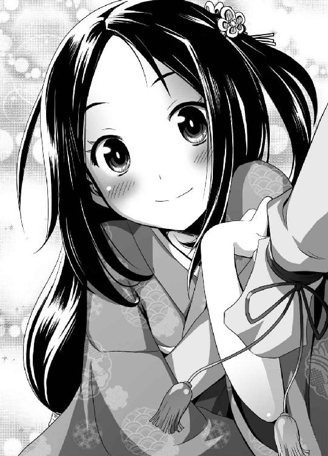
「うむ......実は俺こそが、セメタリー最強と呼ばれる男なのだ！」
「え？」
首をかしげるヨミ──それどころか、微妙に疑わしそうな視線をジンに向けている。
「おいおい、なんだ、その顔は。俺の言葉が信じられないとでも？」
ヨミは、慌てて首を振った。
「いえ、そういうわけでは......少し、イメージと違ったもので」
「失敬な奴だな。しかし、俺こそがセメタリー最強の男だ！」
堂々と断言する──実際、完全なウソというわけでもない。なにしろリリカに、お前はセメタリー史上最強最悪のゴクツブシだ、と呼ばれたことがあるのである。
「そうですか......では、この刀を、抜いていただけませんか？」
ヨミが、片手に持った刀をジンに差しだしてくる。
「どういうことだ？」
「父は、この刀を抜くことができるのは、この刀の主にふさわしい人物だけだと言っていました。実際、わたしでは鞘から刀を抜くことができません」
ジンはよくわからないまま、言われるままに刀を受け取り、袋から取り出す──鞘に収められた、一振りの刀、打ち刀と呼ばれる品である。鞘と柄と鍔は、どれも特別豪華ではないものの、丁寧に作られたものだった。
「どうぞ」
と、ヨミが懐から一枚の紙を取り出し、差し出してくる。懐紙だ──今時こんなものを持ち歩く人間がいることに、ジンは驚いた。懐紙を口にくわえてから刀を抜くのはマナーである......口に紙をくわえることで、刀身にツバが飛び散らないようにするためだ。
ジンは懐紙をくわえたのち、刀を両手で摑み、ゆっくりと左右に力を込め......刀は、鞘に接着されているかのように、ピクリとも動かなかった。
「......思ったより固いな......」
ジンは顔を赤くして力を込めてみるが、刀はビクともしなかった。
やがて──諦めたジンは無言のまま刀を袋に戻し、ヨミに返した。
「............」
ジッと、無言でヨミがジンを見つめている。その視線はジンを非難しているようにも見えた──実際そのとおりである。ジンは、肩をすくめてみせた。
「どうやら、この刀に気に入られなかったようだ」
「そのようですね......困りました」
つぶやき、息を吐くヨミ。
「ようやくセメタリーの方と出会えたのに......」
......暗に、ジンを責めているようだ。ジンとしても、大口を叩いたのにカッコわるい結果となってしまったので、居心地が悪い。
ジンは、ごまかすように咳払いをした。
「まぁ、なんだ......実は、俺の同僚にすごく強い奴がいるんだ！ ひょっとしたらあいつ等ならこの刀を抜けるかもしれないぞ！」
「本当ですか？」
無論、ジンの心当たりはアイとキョウスケの二人だ。
「セメタリーには『養成所』っていう、まぁ訓練学校みたいなところがあるんだ。そこを首席と次席で卒業した奴が俺の同僚でな。そいつらならいけるはずだ」
「なるほど......ちなみに、あなたはその『養成所』の成績はいかがだったのですか？」
痛いところを突かれて、ジンは言葉に詰まった。が、なんとかごまかすことにする。
「残念だが......『養成所』ごときでは俺という人間の器を計ることができなかったんだ」
「はぁ......」
「あまりにテストが簡単すぎてな、馬鹿馬鹿しくなってさぼったのさ」
これもウソではない──面倒でサボったのは本当だ。
「つまり、テストで〇点だったと？」
ヨミの冷静なツッコミ。ジンは、動揺しないようにしながら答えた。
「いや、違う......ただ、俺という人間をテスト如きが束縛することはできない──俺はその事実を証明しただけだ」
「一般的に、試験をボイコットすれば点数は〇点になると思うのですが、違うのですか？」
「......ま、まぁ、そうだな。事務処理における書類上、そのように処理がなされたという話を聞かなくもない」
「......あなたの成績は、その『養成所』で何番目だったのですか？」
「うむ......五十位前後だったかな」
「その『養成所』には全部で何人いたのですか？」
「俺の代の卒業生は全部で五十一人だ」
「............」
ヨミの目が、どんどん細められていく。さすがのジンも気まずさを肌にヒシヒシと感じていた。
「ウソをつきましたね」
淡々と、ヨミが言う。ヨミは不気味なほど無表情で、声色に感情らしい感情がこもっていない──故にいっそう迫力があった。
「いやいや、ウソなんて人聞きの悪い......俺は事実しか言っていないぞ。ただ、多少誤解を招きやすい言い方だったかもしれないが......」
「ウソをつきましたね」
「......いや、その......」
「ウソをつきましたね」
「ごめんなさい」
ジンは自分で非を認めて頭を下げた──キョウスケやリリカが相手ならいくらでも飄々としていられるが、ヨミのように淡々と責められるのはジンも苦手だった。
「まったく......」
ヨミがなにかを言いかけたその時──
ドンドン、ガラ
「おい、ジン。戻ったぞ！」
玄関を叩き、開く音。ドカドカ勝手に中に入る音、キョウスケの声が聞こえてきた。
ようやく戻ったか、とジンは安堵する。正直、ヨミと二人きりは息が詰まる。
「お客様ですか？」
ヨミが怪訝な顔になった。ジンは、そんなたいしたものじゃないと答える。
「さっき言った、俺の同僚だ──お前を助けるのを手伝ってくれた連中でもある」
「なるほど。でしたら、是非お会いしてお礼を言わねばなりませんね」
律儀にそんなことを言うヨミ。まぁ、好きにしな、と答え、ジンは立ち上がった。
「遅いぞ」
「深夜だからな、開いている店が遠かったんだ」
と、玄関先に立つアイが答えた。アイもキョウスケも、両手に袋を抱えていた。
「なにを買ってきたんだ？」
「食料と医薬品をいろいろな──で、あの少女はどうなった？」
「あぁ、さっき意識が戻った」
ジンが振り返ると、ヨミが部屋から出てきてアイ達に頭を下げた。
「気がついたか。お嬢さん、体の調子はどうかな？」
「はい、問題はありません。危ないところを助けていただき、ありがとうございます」
丁寧に頭を下げるヨミ。アイは鷹揚に手を振った。
「なに、気にするな。たいしたことはしていない」
「いいえ、いくら感謝してもしきれないほどです。できればなにかお礼を......」
「いらんいらん。本当に気にしないでいい」
と、アイが手を振る。それでも、と続けるヨミ──そんな様子を見て、キョウスケがジンの脇腹を突いた。
「おい、ジン。あの子、ずいぶん礼儀正しいじゃないか」
「みたいだな」
「まったく、あの子の一割でもお前に礼儀があればな──あの子の爪の垢を煎じてお前に飲ませたいくらいだ」
「そうか」
ジンはうなずき、ヨミに近づくと、無造作にその腕を摑んだ。
「え？」
いきなりのことなので、ヨミはきょとんとジンを見上げた。
チュパッ
そのまま自然な動きで、ヨミの細くて白い指を、口に含んだ。
「え、え、え、え、え!?」
いきなり指に吸い付かれて、当惑するヨミ。ジンは、ヨミの指を舐めた後、口を離して、キョウスケを見た。
「爪の垢を飲んでみたが──これでいいのか？」
「な、き、貴様、いったい......」
キョウスケが困惑で顔を真っ赤にしている。次の瞬間──ドガンッ。
ジンは脳天に落雷のような衝撃を受け、そのまま床に叩きつけられた。
「......なにか、言いたいことはあるか？」
殴ったのは、アイだった。アイは無表情にジンを見下ろしていた。
ジンは殴られた頭をおさえつつ、言い訳を口にした。
「いや、違う、違うんだ、アイ」
「なにが、違うというのだ？」
「そのだな......キョウスケが俺にやれって言ったんだぁぁぁぁぁぁぁぁ!!」
「僕を捲き込むなぁぁぁぁぁぁぁ」
キョウスケは絶叫したが、アイは冷たい眼差しでキョウスケを見た。
「......君も共犯か？」
「いや、その、誤解で......あぁ」
──二人仲良くアイにボコボコにされた。
数分後、アイにボコボコにされた男二人は、ヨミの前で土下座して謝っていた。
「ごめんなさい」
「悪かったな」
謝られたヨミは、少し困ったように言った。
「いえ、その......指を舐められたことは確かに驚きましたが、そんなに謝っていただかなくてもけっこうです。もう落ち着きましたから」
「すまんな、うちの男連中が」
アイも、ヨミに頭を下げた。
「この二人は、たまに悪ふざけすることがあってな、私も頭を痛めているところだ」
「そのようですね、わかります」
なぜかヨミが深く同意している。
「なにはともあれ──君も空腹ではないか？ 食事を用意した。一緒に食べないかね？」
「はい、お気遣いありがとうございます」
アイのすすめで、とりあえず食事をすることになった、が。
「君達二人はそこで正座をして反省していろ」
「そんな、アイさん！ なんで僕まで！」
キョウスケとジンは廊下で正座させられたままだった──それを取りなしてくれたのは、ヨミである。
「あの、わたしは、本当に気にしていませんので、どうかお二人を許してあげてください」
「そうかね......まぁ、よかろう。二人とも、優しいお嬢さんに感謝しろよ」
「おぉ、お嬢さん、ありがとう！」
「あんたの指は美味かったよ、ありがとう」
ジンだけはもう一回アイに殴られた。
「だから、そういうセクハラをするなと言っているんだ、まったく......」
「......口より先に手が出るその性格を、直した方がいいと思うぞ」
「生憎、悪ガキの面倒を見るには、口より手の方が便利なんだ」
なにはともあれ、食事である──メインは、アイたちが買ってきてくれた持ち帰りの寿司であった。
とりあえず、部屋の隅に立てかけてあるちゃぶ台を用意して、食料や飲み物を並べる――キョウスケに準備を全部任せたら、アイに睨まれたので、ジンも渋々手伝うことにした。
と、そんなジンに、ヨミが何気なく近づいてきた。
「あの......」
「どうした？」
「いえ......さっきのこと、いきなりで驚きました。私は気にしてませんけど......他の人にしたらダメですよ！」
さっきのこと──指を舐めたことか。ジンは肩をすくめた。
「あれは、あそこのむっつりスケベに言われてやったことだ」
キョウスケを指さすジン。
「まさかお前、俺が誰彼構わず出合い頭に女の指に吸い付くのが趣味な男だとでも思っているんじゃあるまいな？」
「はい」
「............」
「......い、言っておきますけど、わたしだってあんなことされたのは、初めてなんです......父にだってされたことないのに......」
娘の指をしゃぶる父親は色んな意味でマズイだろう。
「......せ、責任取ってくださいよ！」
「待て、お前は俺になにを期待している？」
「知りません」
プイッと、一方的に言いたいことを言ってヨミは離れていった──なんなのだ？
「......仲が良さそうだな、二人とも」
アイが、呆れたような、つまらなそうな、そんな顔でジンを見ていた──狭いボロ家である。小声で話していても会話は筒抜けだ。
ジンはもう一度、大げさに肩をすくめて見せるだけにとどめた。
──食事の用意ができて、互いの自己紹介を軽くした後、食べ始める。
「......しかし、こんな夜によく寿司屋が開いていたな？」
「大通りによく行く店があるだろう」
アイが、缶ビール片手に説明をする。
「顔見知りだからな、閉店直前に押しかけて、残ったネタ全部持ち帰りにしろって言ったら割引までしてくれたぞ」
「そいつは運がよかったな」
おかげでジンも好物の寿司にありつける──ジンは遠慮無く食べることにした。
「あ、ジン。貴様いきなりトロを取るなんてマナー違反だぞ！」
「早い者勝ちだろう？」
ジンは基本的に遠慮をしない性格である。こういうときは高いネタから取っていく。
「貴様は、寿司のマナーを知らないのか？ 寿司は味の薄いものから食べていくんだ。最初はイカとか白身を食べて、トロなんていうのは最後の方だ！」
「なるほどなるほど......なら最初はイカにするか」
とジンは頷いた。キョウスケは偉そうに首を振る。
「貴様にしては殊勝な心がけじゃないか。普段からそういう態度なら、僕だってうるさいことは言わないんだぞ」
「そうだな......ほら、キョウスケ。お前も食うんだろ？ 取ってやるよ」
「おぉ、気が利くな。貴様にしては上出来だ」
「ほら、最初はイカと白身だな」
ジンはキョウスケの皿にイカとタコと白身の寿司をのせてやった。そして自分の皿にはマグロ、トロ、ウニ、イクラ、アワビを手早くとっていく。
「ほらキョウスケ。お前の分だ」
「ありがとう......って、ごまかされるか！ 貴様、僕の話をまったく理解してないな！」
「なんのことだ？ お前が最初は白身がいいとか言うから、わざわざ取ってやったのに」
「貴様の皿は何だ！ 値段の高いのばかり取って、貴様は遠慮という言葉を知らんのか！」
「遠慮なら知ってるさ。キョウスケが高いネタを全部俺に譲ることを遠慮と呼ぶんだ」
「ふざけるな！」
キョウスケがジンにつかみかかる。ジンは素早く逃げながら、皿に取った寿司を片っ端から口に放り込んでいく──とても美味しかった。
「どうだ、あの二人、仲がいいとは思わないかね？」
「そのようですね」
と、ジンたちが騒ぐ様子を面白そうに眺めるアイ。彼女はなぜかヨミの隣に座り込んで、しきりに話しかけている。
「まぁ、ケガもないようでよかった。疲れただろう。遠慮せずに食べたまえ」
「こんなにご馳走になって、申し訳ないです」
「気にするな。好きなだけ食べるといい」
と、アイはアグラをかいたまま豪快に笑った。下手な男より男らしい仕草である。
一方のヨミは、小さく正座したまま静かに食べていた。ちなみにヨミが食べているのは、エビと、卵と、カッパ巻きだった。
「どうした？ もっと食べるといい。ゆっくりしていると、あっちの男二人に全部食べられてしまうぞ」
「いいえ、お気遣いなく。わたしはこれで充分です。元々小食でして......」
「そうかね？ では、君も一杯どうだ？」
と、アイが買ってきた缶ビールを一本ヨミに差し出した。ヨミは、最初からお茶を飲んでいる。勧められたビールを、ヨミはやんわり断った。
「いえ、お酒は苦手で......みなさんお若いようですけど、お酒飲んでもいいのですか？」
「気にするな」
「はぁ......」
「それよりもだ、私はもう少し君のことが知りたいな」
食事が一段落した頃合いを見て、アイが言う。
「君は......名は、ヨミでいいのかな？」
「はい、鍛冶山黄泉と申します」
最初に軽く名前だけは教えあったのだが、改めて名乗るヨミ。
「私たちは、偶然君を山の中で発見して、保護をした。幸いケガはなさそうなのはいいが......君はこの後、どうするのかね？」
「その......」
「行くあてがあるなら、そこまで私たちが送っていこう。遠慮はいらない」
アイが言うが、ヨミは、少し困ったように周囲を見回す。ジンやキョウスケも、ヨミを注視していた。
「......そうですね......」
お茶を少し飲み、ヨミが頷く。
「その前にお聞きしたいのですが......こちらにいる皆さん、セメタリーの関係者でよろしいのでしょうか？」
「そんなことまで知っているのか......」
アイが、ジンを見つめる。当然だが、セメタリーのことを話したのはジンだ。
「貴様、なにを考えている！」
キョウスケが、ジンに詰め寄った。
「守秘義務を忘れたか！ こんな子供にセメタリーのことを話したのか！」
いきりたつキョウスケに説明してくれたのは、ヨミだった。
「問題ありません。セメタリーのことでしたら、わたしは以前から知っていました」
「ほぅ？ どういうことだね？」
「わたしの父が、セメタリーの関係者だったのです......わたしも父の手伝いをしていたので、名前だけは昔から知っていたのです」
「ほぅ......そう言えば、君の名前、鍛冶山......どこかで聞き覚えがあるな」
「そうですか。一応、父は関係者の間では有名だった、と聞いています」
「ふむ......覚えはあるが、ちょっと、すぐには思い出せんな」
と、アイは首を振った。
「まぁ、そのうち思い出すかもしれん......で、私たちがセメタリーだが、それがどうかしたかな？」
ヨミは、セメタリーで最強の剣士を探している。先ほどジンに話したことである。てっきり同じことを言うとジンは思ったのだが、なぜかその予想は外れた。
「いえ......少し気になったので確認しただけです」
「そうかね」
ヨミは露骨に話題をそらそうとしている。アイもその違和感には気づいていたが、あえて指摘はしなかった。
「まぁ、君にも色々な事情があるだろうし、私たちも根掘り葉掘り聞く気はない......だが、これだけは信じて欲しい。こう見えても、私たちは君の手助けをしてやりたいんだ。もし君がなにか困っているのであれば、私たちもできるだけの努力はする」
アイが、そう告げる。ヨミは恐縮したように頭を下げた。
「お心遣い、ありがとうございます。でも......」
「まぁ、返答は急がなくてもいい」
アイは、ヨミの言葉を遮った。そして、ヨミの傍らに目を向ける。ヨミが自分の傍らに置いている刀──イヤでも目についていたそこに、アイは視線を向けていた。
「それはそうと、君が持っているそれは、刀かね？」
ヨミは、頷きながら傍らの刀を持ち上げた。
「はい、父の形見です」
「なるほど──私はこれまで数多の刀剣を見てきた。その私から見ても、その刀はなかなかの名刀に見える」
一目見ただけで、そんなことを言うアイ。ヨミは満更でもなさそうな様子だった。
「はい。この刀には、父の魂が宿っている──少なくとも、わたしはそう考えています」
「ぶしつけかもしれないが、少し見せてもらえないかね？」
自然な仕草で、手を伸ばすアイ。
「私とて剣士の端くれ。名刀にはいささか興味がある」
だが──ヨミは、意外なことに、アイの申し出を断った。
「申し訳ありません──父の遺言で、この刀を人目にさらすことはできないのです。ご容赦下さい」
「そうかね、それは残念だ」
とても、残念そうに首を振るアイ。
「だが、そういう事情ならば無理強いはできんな、無茶を言って悪かった」
「いえ、こちらこそ、申し訳ありません」
頭を下げるヨミを見て──ジンには、訳がわからなかった。先ほど、あの刀を、抜いて見せろとジンにはあっさり貸してくれたはずだ。なのに、今、なぜアイには触らせようともしないのだろうか？
だが、そのことを今この場で言って騒ぐこともない、とジンは考えた。事情を探るにしても、今はそのタイミングではない。
「さぁて......すっかり長居してしまったな。そろそろお暇するか」
と、アイが急に立ち上がった。すでに時刻は深夜である。ヨミは先ほどからあくびをかみ殺すような仕草を見せていた。
「ですね、僕らはお暇しますか」
と、キョウスケが散らかったゴミなどをまとめながら言う。こういうときの片付けは、だいたいキョウスケが率先してやってくれる。ジンに任せたら絶対に掃除などしないので、ここで片付けておかないと次回来たときが大変なのである。
「さて......君の寝床を用意せねばなるまいな」
アイが、ヨミに告げる。ヨミは、首をかしげた。
「はぁ......どういうことでしょう？」
「なに。ここはジンの家だが、とりあえず一番近かったから君をここに運んだにすぎん。見ての通り、この家は快適な寝床とは言えない」
悪かったな、と口の中で呟くジン──まぁ、ボロ家なのは自他共に認めるところだが。
「そうだな──少し距離はあるが、私の部屋に来るかね？ 少なくともここよりは快適だ」
アイの申し出に、だがヨミは首を振った。
「いいえ、お気遣い無く。さすがにこれ以上お世話になるわけにはいきません」
「ここまで助けて、外へ放り出すわけにもいかん。遠慮するな」
「実は──かなり疲れていますので、あまり移動したくないのです。もしご迷惑でないのでしたら、この家で休ませていただけませんか？」
「フム......しかしなぁ......」
アイがさらになにか言おうとしたところに、まぁまぁとキョウスケが間に入ってきた。
「いいのではないですか、アイさん？ 本人がいいと言っているのですし......それにジンは、確かにロクデナシですが、こんな少女に手を出すほどの鬼畜外道ではないでしょう」
珍しくフォローしてくるキョウスケ。
「ウム......まぁ、そういうことならば、いいか」
キョウスケにも言われ、アイも頷いた。が、少し不満がありそうな顔だった。
「では、我々は帰らせてもらうとしよう......が、ジンは、少しつきあってくれ」
「ん？」
アイが、ジンを呼ぶ。
「長くはとらせん。少しつきあえ」
有無を言わさない口調である。そう言われては、ジンも断ることはできなかった。
「すまないな、少しだけ一人にさせるが、この男はすぐに戻らせる」
「お気遣い無く」
ヨミは正座をして丁寧に頭を下げ、外へ行く三人を見送ってくれた──すでに深夜。外は真っ暗である。繁華街も近くにはないため、周辺に人気は皆無だった。
「......ここなら、いいか」
と、ジンの家から少し離れた場所でアイは立ち止まった。
「で、なんの話だ？」
ジンが先を促す──なにか話が、それもヨミには聞かれたくない話があるから、わざわざジンを呼んだのだろう。それくらいのことはジンでもわかった。
「さて......言うまでもないことだが、あのヨミという少女は、なにか隠し事をしている」
「ですね」
キョウスケも頷いた。まぁ、確かに、さっきの態度は誰が見てもそう見えるだろう。
「とは言え、初対面で今以上に深く聞いたところで警戒されるだけだ──そういう意味では、第一段階は成功したものと考えてもいいだろう」
アイが、ジンを見る。
「どうやら君は彼女に気に入られているようだな」
「そうか？」
「少なくとも私よりははるかにな」
シニカルにアイは肩をすくめた。
「私は彼女に警戒されてしまったようだ──が、少なくともジンには心を開いている。そうでなくては、年も近い男の家に泊めてくれなどとは言うまい」
「ですね」
キョウスケも頷いている──ジンも、普通ならそう考えるが、ヨミのあの性格を考えると、あまり深く考えずに泊めてくれと言った気がしないでもない。
「ともかく、状況は不透明だ......が、彼女が、あの『禁機指定』、九十九神と完全に無関係であるとは考えにくい。彼女は、確実になんらかの秘密を抱えている」
夜闇の中で、一瞬アイの目が怪しく輝いた。
「......彼女の名には確かに聞き覚えがある。データベースかどこかで見たな」
セメタリーは、世界のあらゆる最新情報を収集し、データベースにまとめている。
「なるほど。で、この後どうする？ リカに報告するのか？」
ジンとしては、あまり面倒なことになるようなら、さっさとリリカ辺りに知らせた方がいい気もしてきた。だが、アイは首を振った。
「いや......まだだ。もう少し情報を引き出してから、少なくとも、彼女の正体をもう少し調べてから報告しても、手遅れではあるまい」
「確かに、今部長に報告しても、僕らの手柄は少ないでしょうね」
キョウスケもアイに同意した──しかたない、とジンも頷く。この二人がそう言うなら、ジンとしてもそれにつきあうしかない。
「ジン。とにかく君は彼女から目を離すな。常に一緒に行動しろ──君だけは唯一、彼女から警戒されていない。その立場を生かして、できるだけ情報を引き出せ」
「了解」
適当に手を挙げて、ジンは返事をした。あまりやりたくはないが、ここでグダグダ言っても始まらない。首を突っ込んだ以上は、最後までつきあわなくてはならない。
「ジン。くれぐれも、君はあの子を逃すなよ。なんとしてでも足止めして引き留めろ。その間に、私たちで情報収集をする」
アイとキョウスケとはそこで別れることになった。
「僕は車を取ってきます」
キョウスケが言った──少し離れた駐車場に車が止めてある。運転があるので、キョウスケだけは酒を呑んでいない。
キョウスケは、歩きながらアイに語りかけた。
「アイさん。今夜はもう遅い。部屋まで僕が送りますよ......」
「キョウスケ、面白い冗談だな──今夜はこのまま支部に直行するぞ。今回の件、急いだ方が良さそうだからな、今から至急資料を洗い直す」
「......ですよねぇ」
キョウスケが、なぜか泣きそうな顔で頷いた。
ともかく、ジンは二人とそこで別れて家に戻る。
そのまま部屋に入って──少し驚いた。中は、すでに片付けられていたからだ。
ゴミはキョウスケがまとめて持っていってくれたものの、部屋の中はまだ多少汚れていたはずである。それがキレイに掃除されてあった。ちゃぶ台はキレイにふかれて片付けられ、汚れた食器類も、全部洗われてあった。
「何だ......片付けてくれていたのか」
「はい。お世話になるのですから、当然のことです」
ヨミはすまし顔で、部屋の中で正座してジンを待ってくれていた。キョウスケ以上に生真面目な性格らしいな、とジンは呆れた。
「疲れてるんだろう？ 俺なんか気にせず、先に休んでてよかったんだぞ」
「そういうわけにはいきません」
頑固にヨミは首を振る──そこで、ヨミはふと呟いた。
「それはそうと......ジン様、でいいのですか？」
「ん？」
「あなたの、お名前です」
そういうことか、とジンは頷いた。
「いや、違う」
あっさり否定した。だが、ヨミは不思議そうに首をひねった。
「ですが、先ほどのお二人はあなたをそう呼んでいたと思います」
「そうだな......まぁ、ジン、ってのはあだ名みたいなもんだ。本名じゃない」
「では、本名はなんと仰るのですか？」
「さぁて......俺に名前なんてないな。俺の名は、奴らに奪われたからな」
「え？」
ヨミが面食らった様子だったので、ジンはすぐに微苦笑を浮かべてごまかした。
「なぁに、あんまり長いこと名乗ったことがなくてな、うっかり自分でも忘れたんだ」
ジンは肩をすくめた。
「別にジンでも何でもいい。俺のことは好きに呼んでくれ」
「そうですか......あまり納得はできませんが、ジン様と呼ばせていただきます」
「様はやめてくれ。そんな呼ばれ方をされるほど俺は偉くない──呼び捨てでいい」
「......では、ジンさんで」
まぁ、その辺りでいいか、とジンは頷いた。
「それはそうと、ヨミ......なんで、その刀、アイ達には見せなかったんだ？」
「......あの二人が、ジンさんの言う、セメタリーで一番強い人なんですか？」
「まぁ、そうだな」
「そうですか......正直に言いますと、わたしにはそうは思えません。少なくともあのレベルの人より強い人をわたしは何人か知っています」
「そいつは、手厳しいな」
アイもキョウスケもヨミの眼鏡にはかなわなかったらしい。
「でも、さっきは俺に刀を触らせてくれたじゃないか？ なんで俺だけ？」
「......それは、あなたの力だけがどうしてもわからなかったからです」
ヨミが、少し憮然とした様子で呟いた。
「先ほどのお二人は、身のこなしや気配で、それなりの強さの方だとはすぐわかりました。昔──父を訪ねて多くの剣士のかたが訪れましたので、わたしも見ただけである程度相手の力量がわかるのです」
なかなかの眼力をヨミは持っているようである。
「ですがあなたは──ジンさんだけは、よくわからなかったのです」
と、ヨミが告白する。
「正直言って、あなたには強さがカケラも感じられません。ズブの素人と言ってもいいくらいです」
「なかなか鋭いじゃないか」
実際、ジンは自他共に認める落ちこぼれのゴクツブシだ。
「ですが、たまにあなたの気配が妙に鋭くなるような気がします──こんな感覚は初めてで、あなたの実力がわからなかったのです。ですから、試させていただきました」
もっとも、試した結果はダメでしたが、と最後に付け加えるヨミ。
「そいつは期待に添えなくて済まなかったね」
「えぇ、まったくです」
......ジンになれてきたのか、ヨミの言葉にだんだん遠慮が無くなってきた気がする。
ジンは、ちらりとこの家唯一の時計を見た。時間も時間である。ヨミも眠そうだし、今夜はこれくらいで休んだ方がいいだろう。
「まぁ、細かい話は明日だ。今夜はもう寝るとしよう。眠いだろう？」
「そうですね......お手数をおかけします」
ジンの家（借家）はボロ家ではあるが、一応和室が二部屋ある。和室といえば聞こえはいいが、要は畳が敷いてあるだけの普通の部屋だ。
そのうちの一部屋を普段ジンは使用して、もう一つは使っていない──掃除が面倒なので、極力使わないようにしているのだ。
この部屋にヨミを寝かせて、自分は奥の部屋に行くか──ジンは、そう判断した。奥の部屋は掃除をまったくしていないので、ヨミを行かせるわけにはいくまい。
「お前はこの部屋で寝ろ。俺は奥の部屋にいる」
と言って、とりあえず布団を用意してやることにした。普段ジンが使っているセンベイ布団だ。自慢ではないが、この家に布団は一組しかない。布団はヨミに貸して、ジンは寝袋でも使うつもりだ。
「ありがとうございま......す？」
礼を言って頭を下げたヨミだったが、布団を見て思わず口ごもった。ペタペタに潰れて変色した布団は、正直清潔には見えなかったからだ。
「......おたずねしますが、この布団、いつ干しましたか？」
「そうだな......この部屋は日当たりが悪くて、なかなか日に当てられないんだよな......」
「つまり、一度も干したことがない？」
「............」
ジンが視線をそらすと、ヨミは、はぁ、とため息を吐いた。
「......布団は結構です。わたしはタタミの上で寝ます」
「いや、でもそれだと、疲れがとれないだろ？」
「この布団で寝たらかえって疲れる気がします」
頑なに布団を拒むヨミ──ムリもないことである。
なにかないかと押し入れを漁ってみると、以前キョウスケが持ち込んだとおぼしき座布団と毛布が出てきた。とりあえずヨミはそれを寝具にすることになった──冬ではないし、カゼは引かないだろう。
ジンはお休み、と部屋を出ようとして──ふと、最後にもう一つだけ尋ねた。
「なんで、アイの部屋に行かなかった？」
「......疲れていましたので、移動したくなかったのです」
先ほどと同じ答えを言うヨミ。だが──ジンの見立てでは、今の答えはヨミの本心ではない。なにか、ジンたちに言っていない、別の事情がある──そんな気がした。
「それに、先ほどのあの方は......」
「ん？」
「いえ......すいません。ジンさんに言うことではありませんでした。おやすみなさい」
会話はそこまでだった。それ以上ヨミはしゃべろうとしなかったため、ジンは無言で肩をすくめて奥の部屋へ向かった──これから先どうなるのか、と一抹の不安を覚えながら。
セメタリー日本支部──世界を暗躍する秘密組織の支部は、意外にもこぢんまりとした外観のビルにあった。とある地方都市の片隅にあるそのビルが、密かに日本国内のあらゆる機関に根を回す秘密結社であるという事実を知るのはごく一部の人間だけだ。
日本支部の地下にある資料室。そこにキョウスケはいた。資料室とは、その名の通り、セメタリーの収集した膨大な情報が集められた場所である。その情報量こそ膨大ではあるが、大半の情報は電子化されているため、部屋の中には情報閲覧用の小型端末が並んでいるだけである。
キョウスケはヨミという少女の情報を調べていた。アイは少し心当たりがあるといって、別方面から情報収集に向かったため、この作業はキョウスケ一人でやっている。深夜であるせいか、資料室にはキョウスケ以外の人間がいない。
「クッ......ダメだ。全データベース該当項目がない......」
端末を操作しながらキョウスケは頭を抱えた──少女の名乗ったカジヤマ・ヨミという名前。まずはそこを足がかりに調べようとしたのだが、まったく見つからないのだ。
「参ったな......名前がわかればすぐわかるとおもってアイさんに大見得切ったのに......」
日本政府の戸籍データも見たが、ヨミの名前はなかった。
「まさか偽名？......でも、アイさんはあの子の名前に聞き覚えがあると言っていたし」
つぶやきながらも、キョウスケは手を動かして情報を検索していく。
「......あの子の父親が、セメタリーの職員だった、とか言っていたな」
そちらから調べてみるか、と思い直すキョウスケ──セメタリーの構成員の情報を呼び出して、絞り込み検索をかけてみる。
「名前はカジヤマ......ＫＡＪＩＹＡＭＡで検索、っと」
端末がすぐさま検索を開始──数秒後、『該当項目〇件』と無情な文字が表示された。
「ダメだなぁ......」
頭を抱えて、背もたれに体を投げ出すキョウスケ──正直、さすがに今日は疲れた。朝から働きづめでロクに休んでいない。さすがに集中力が切れてきた。
「しかたないな、少し休憩......」
「なんだ、誰かと思えば七蓋、お前か」
背後から声──キョウスケはすぐさま立ち上がり、直立不動の体勢になった。
「部長！」
そう──資料室にパンプスの音を響かせながら入ってきたのは誰であろう──セメタリー日本支部長、鞠小路凜々華であった。
「あぁ、そうかしこまるな。あたしも一応勤務時間は終わってるからな」
長い銀髪をかき上げ、鷹揚に手を振るリリカ。キョウスケは、休めの体勢になった──なんでここに部長が？ と内心疑問が浮かぶ。
「なんだ、あたしがここにいるのが不思議か？」
どうやら表情に出ていたらしい。リリカは、苦笑を浮かべた。
「お前等『葬儀屋』は、現場で『禁機指定』を相手に一暴れして、封印すればそれで仕事は終わりだろうさ。だけどな、実際はその後の処理の方が忙しいんだぞ？ 特に今回は派手に暴れてくれたから、日本政府の連中はうるさいし、行方をくらませた剣轟どもも警戒しなきゃいけないしで、あたしは今まで部屋から一歩も出られなかったんだぞ」
「はぁ、すいません......」
「いや......お前に言ってもしかたないことだったな。忘れろ」
億劫そうに首を振るリリカ。どうも、さきほど通信で会話したときよりもだいぶ疲れている様子だ。近くで見ると、化粧が浮いていた。
「......で、なんでお前がこんな時間にここにいるんだ？ 『葬儀屋』連中は、現地で解散の指示を出したはずだが？」
「はい、そうです。ただ、僕は少し気になることがあって、調べ物に戻ったんです」
「生真面目な男だな」
珍しいものを見るような顔で、リリカが呟いた。まぁいい、と言って、リリカは、資料室の壁際に設置された自販機に向かっていった。
「......お前、なにが飲みたい？」
「いえ、そんな、けっこうです」
「あたしが飲みたいだけだ。お前もつきあえ」
リリカが、両手にカップを持って戻ってきた。ブラックのコーヒーを、キョウスケの机に置き、自分は牛乳とおぼしき白い液体に口をつける。
ありがとうございます、と礼を言って、キョウスケはコーヒーをもらうことにした──味は、まぁ自販機のものなので、それなりだった。
「......それで、なにを調べているんだ？」
「いえ、ヤボ用で、たいしたことではないのですが......」
「たいしたことでもないのに、こんな時間にわざわざ支部に来て調べているのか？」
呆れたような表情を浮かべるリリカ──アイに口止めされているのでごまかしたかったのだが、変に言い訳すると逆に怪しまれそうだった。
「それで、いったいなにを調べているんだ？」
「いえ、その......」
口ごもるキョウスケを無視して、リリカは端末のモニタをのぞき込んだ──しまったな、キョウスケは後悔した。検索履歴がバッチリ残っているので、キョウスケがなにを調べていたかリリカに丸わかりだ。アイには秘密裏にやれと言われていたのに......
「ん？ ＫＡＪＩＹＡＭＡだと？」
怪訝な顔で、リリカがキョウスケを見た。
「なんだってお前、こんな奴のことを調べているんだ？」
「いえ、ちょっと小耳に挟んだんですが、気になったもので......」
適当な返事をするキョウスケ。幸いなことに、リリカはそうか、と頷いただけで、深く追及はしてこなかった。
こうなったら、毒をくらわば皿までである。リリカに直接聞いてみよう。
「部長は知りませんか？ 昔、セメタリーに所属していた男らしいんですが......」
「あぁ......まぁな、知っている」
妙に歯切れ悪く、リリカは頷いた。
「お前等の世代じゃ知らないだろうけどな──あたしより上の世代じゃ、かなりの有名人だよ。Dr.T.Kはな」
「Dr.T.K？」
「Dr.T.K。ＴＥＳＳＨＵ・ＫＡＪＩＹＡＭＡ。本名、鍛冶山鉄舟だ」
どうやら、リリカはその人物のことを知っているようだ。
「どれ、貸してみろ」
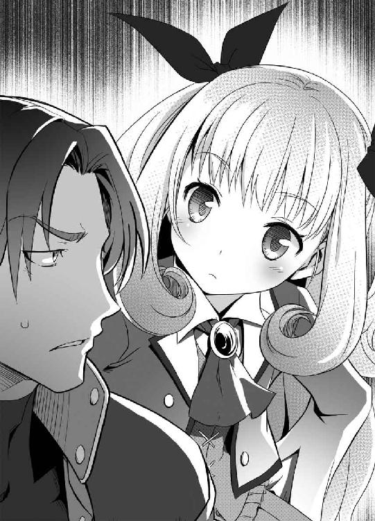
リリカが、キョウスケの使っていた端末を操作していく──が、すぐに首をひねった。
「ん？ 該当項目０だと？ なんだ、検閲がかかってるのか」
リリカはカラになったカップを口でくわえ、両手でキーボードを叩き始めた。
「ん～......あぁ、そうか。『禁機指定』関連が多すぎて、情報規制が入ったのか──七蓋、お前の権限じゃ、この先の情報は見れんぞ」
「そうなんですか？」
セメタリーのデータベースは職員なら誰もが利用できるが、閲覧可能なデータは地位によって制限されているのだ。
「だが......あぁ、まぁ、お前ならいいか。これくらいならな」
リリカはスーツからパスケースを取り出し、中に入っていたカードを端末にかざした。その途端『管理者権限：コード三〇三、ランクＳまでの情報を開示』とモニタに表示される。
「ほら、これで見れるぞ」
ん、と端末を顎でしゃくるリリカ──どうやら、支部長権限で情報の閲覧許可を出してくれたらしい。ありがたいことである。
「まぁ、Ｓランク情報は見られるとマズイ情報もいくつかあるからな」
リリカは顔はキョウスケに向けながらも、手だけはキーボードの上で高速で動かしていた。
「お前を信用しないわけじゃないが、このページ以外へのアクセスは制限しておくから、見ようとしてもムダだぞ」
「わかっていますよ、ありがとうございます、部長」
かしこまって敬礼するキョウスケ。リリカは、立ち上がってふぅと肩をすくめた。
「なんでこんなものを調べてるかは知らんが、さっさと休めよ。明日も早いだろう」
「はい、これを調べたら帰りますので」
「ご苦労さん、あたしは先に帰るから──これ捨てといてくれ」
と、カラになった紙のカップをキョウスケに投げ渡し、リリカは部屋から出て行った。
キョウスケは早速、リリカが許可を出してくれた情報に目を走らせる。
『鍛冶山 鉄舟（かじやま てっしゅう）：日本生まれの日本人。刀工として名を馳せる』
刀工──すなわち刀鍛冶。刀剣を作る者のことである。
『材料工学、機械工学などの分野における権威。武器としての刀作りを突き詰め、現代科学の先端技術を取り込み、まったく新しい武器体系を生み出した人物』
「ふむ......なるほど、自動外装の黒刀シリーズもこの男が作ったのか......」
キョウスケはさらに先の情報を見ようと、モニタをスクロールさせた。
「ん？ なんだ、この一覧は？」
『鍛冶山鉄舟は優れた刀工だったが、刀の性能を追求しすぎるあまりに個人で扱うには危険すぎる刀を多数生み出す。そのため鉄舟の作品の多くは『禁機指定』となっている』
モニタ一杯に、封印指定のリストが表示されていた。
「すごい数だな、これは......」
封印指定は、あまりにも危険な兵器や技術に対しても出されることがあるのである。どうも鍛冶山鉄舟という人物は、セメタリーから危険視されていたようだ。情報に閲覧規制がかかっているのもそのためだろう。
キョウスケは、時間も忘れてさらに情報を読み解いていき──最後の方に、気になる項目を見つけた。
『鍛冶山鉄舟の遺作について』
──これは、ヨミの持っていた刀ではないだろうか？ 先を読み進める。
『近年鉄舟の死亡が確認される。鉄舟は死の直前、己のもつ全ての知識と技術を注ぎ込み、あらゆる武器を超えた窮極の刀を生み出したと言われている』
窮極の刀──少し、きな臭い気がした。
『この情報はウワサの域をでないものの、仮にこの刀が実在するとなれば、かなり危険度の高い封印指定を受けることが予想される』
──鍛冶山鉄舟の遺作：『禁機指定』レベル？？？──と書かれてあった。実在するかどうかがわかっていないため、レベルもはっきり認定されていないということらしい。
キョウスケは、モニタに顔を近づけた──最後に不明瞭な一枚の写真が添付されていたのだ。出所不明の謎の写真でひどくピンぼけしているが、それは鞘に収まった刀を写していた──そして、ぼやけてはいるものの、それはヨミの刀と似ていた。
「ビンゴ、だな」
キョウスケは立ち上がった──セメタリーも未だ確証をつかめていない未発見の『禁機指定』。どうやら、自分たちはとんでもないものをみつけてしまったらしい。
閲覧規制がかかっていたため、データのコピーはできない。キョウスケは全部を暗記して、手早く帰り支度をした。
「早く、アイさんと合流しよう」
この情報を早く伝えたい──遺作以外にも、一つ気になる情報があった。それについても早く相談したかった。
そのままキョウスケは小走りで資料室から飛び出した──が、キョウスケは、興奮のあまり見落としていた。自分を陰からうかがう存在がいたことを。
『......目標が資料室を退出しました』
「よし、そのまま監視を続けろ。絶対に気取られるなよ」
『ラジャー』
ふぅ──通信を切って、リリカは自室で息を吐いた。キョウスケには帰ると言いながらも、リリカはまだ残っていた。それどころか、支部長室から部下に指示を飛ばしていた。
「資料室の、閲覧記録をこっちに回せ。今さっきまで使っていた端末──たしか、十三番のだ。検索履歴も、全部あたしのとこに持ってこい」
内線で、関係部署に次々と指示を飛ばしていく。
「情報部。腕利きを何人か集めろ。職員の身辺調査だ。あぁ、対象は、七蓋鏡介。こいつは引き続きな。それと──紗村亜衣に、れいのゴクツブシ、この二人にも人員を手配しろ──いや、なにかコソコソ嗅ぎ回っているみたいだから、先手を打っておきたいだけだ」
「あぁ、紗村亜衣──こいつは要注意だ。生半可な尾行は五秒で気づかれるぞ。野生動物を相手にしていると思え。異様に警戒心とカンの鋭い女だ。絶対に気取られるなよ」
「あと、調査依頼だ──カジヤマ・ヨミ──この名前の人間を、大至急調べろ」
両手に別の受話器を抱え、関係各所に矢継ぎ早に指示を出していく──一通り指示を出し終え、受話器を置いて、ふぅ、ともう一度息を吐くリリカ。
彼女が座るソファは大きすぎて、小柄な彼女が埋まってしまいそうにも見える。だが、全身を包まれるような感覚が、彼女は気に入っていた。
お気に入りのソファに座ったまま、床に届かない足をブラブラゆらす──仕草は、子供らしかった。外見も、子供らしかった。
「まったく......あのゴクツブシは、どこまであたしの手を焼かせるんだ......」
だが、その目は──薄暗い室内で、爛々と輝くその目だけは──外見不相応に、どこまでも怜悧で、冷徹で、凍てつくような光が宿っていた。
「......どうにも、メンドウなことになりそうだな」
翌朝──ジンは、なにかが動き回る気配で目を覚ました。寝袋からはい出て体を伸ばし、時間を確認する──部屋に時計はないが、窓の外の明るさや体内時計で判断した限り──時刻は、午前十時くらいのようだ。ジンも疲れていたせいか、少し寝過ぎたようである。
ジンは、首を動かした──どこからともなく、味噌汁の匂いがした。
部屋から出てきたジンに、声がかけられた。
「ジンさん、おはようございます」
台所ではヨミが味噌汁を作っていた。おはよう、とオウム返しに返事をするジン。
「食事ができたら起こそうかと思ったのですが、起こしてしまったようですね」
「......食事？」
「はい、すぐできます。顔を洗ってきてください」
ヨミは、どこに持っていたのか、小袖を襷がけにして、前掛け姿。頭には三角巾を巻いて、動きやすいカッコウをしていた──似合っている、ジンは場違いな感想を抱いた。
「......顔を洗ってきてください。洗わないとご飯はあげませんよ」
「あぁ、わかった......」
ヨミに言われてすごすご顔を洗いにいくジン──少し情けなかった。
大人しく顔を洗って戻ると、ちゃぶ台の上にはすでに食事の用意が整えられていた。
「では食べましょう。たいしたものは用意できませんでしたが、どうぞ」
並べられているのは味噌汁と、炊きたてのご飯、それに卵焼きというメニューである。
「うちには、食べ物は何もなかったはずだがな......」
自慢ではないが、伊達に引きこもっていたわけではない。買い出しには行っていないので、この家に食料の買い置きは皆無だったはずだ。
「はい。正直驚きました。勝手に台所を見させてもらいましたが、米一粒、味噌一匙もなかったのですから......普段、何を食べているんですか？」
「なにも......自炊なんてほとんどしないからな」
ヨミは──なにやら、珍妙な動物を見たような眼差しになった。
「よく、今まで生きてこられましたね」
「自分でも驚いているよ」
軽口を叩きながら、ジンは一口味噌汁をすする──普通に美味しかった。
「美味いじゃないか、なかなかのものだ」
「そうですか？ わたしとしてはあまり満足のできるできではないのですが......」
「いや、十分だ。美味い」
台所を見てみると、コンロには土鍋が置かれてあった──ジンの家に電気釜などという便利なものはない。なので、どうやらヨミはご飯を土鍋で炊いたらしい。炊きたてのご飯はふっくらと炊けていて、とても美味しかった。
食事を続けながら──ジンは気づいた。部屋の中が、妙にこざっぱりしているのだ。
「もしかして、掃除もしてくれたのか？」
「はい......ジンさんは、もう少しマメに掃除をするべきだと思います。朝六時から掃除していたのですが、全部を掃除するのに三時間はかかりました」
家具が極端に少ない部屋は一見するとキレイだが、普段掃除をしないため隅の方にはホコリがたまっていた。それが全部掃除されていた。窓ガラスもピカピカで、窓枠になにもはまっていないように見える。庭の物干しには、しっかりジンのセンベイ布団が干してあった──ヨミは、どうやら張り切って掃除してくれたようだ。
「気にしないでください。父が生きていた頃も、家事はわたしがやっていましたから得意なのです──さすがにこの家を掃除するのは骨でしたが」
「掃除なんてしたことないからな」
「してください」
またも、非難するような目でにらまれるジン。ジンは視線をそらし、ご飯を食べてごまかした......ヨミは、ヤレヤレ、といった様子で息を吐き、ジンに片手を差し出した。
「おかわり、つぎましょうか？」
「あぁ」
結局──メニューは普通だったが、まともな朝食が久しぶりな上にすごく美味しく感じたため、ジンは三杯もおかわりした。
「あぁ、美味かった」
「食べ終わったらごちそうさまです」
「............」
「食べ終わったらごちそうさまです」
「......ごちそうさま」
無表情に淡々と繰り返すヨミは、妙に迫力がある。ジンも反論できないまま手を合わせてしまった。
「さて......どうするかな？」
なにも言わなくても、食器はヨミが片付け、洗ってくれている──楽でいいや、と気楽に考えるジンだが、女子供にばかり働かせてまったく働かない自分はかなりのダメ人間だな、という事実に気づいてしまった。
──なし崩し的にヨミとの共同生活が始まってしまったわけだが、いつまでもこのままでいるわけにはいかない。だが問題は──ヨミにとって、どうしてやるのが、一番いいのかということだ。
「......ジンさん。お仕事には出かけないでいいのですか？」
と、ヨミが尋ねてきた。
「ジンさんも、お仕事をしているのですよね？」
「俺はセメタリーの『葬儀屋』だからな。この近辺でなにか封印指定の物が見つかったら、それを封印しに行くのが仕事だ──つまり裏を返すと、封印指定がない間は体力を温存して待機するのが仕事だ」
「そうなのですか」
もちろんウソである──封印するのが主な仕事ではあるが、封印指定がないときにも仕事は他に山ほどある。もっとも、普段のジンは支部に顔を出す気すらないが。
「ヨミこそ、これからどうする気だ？」
「わたしですか？」
あっという間に朝食の片付けを終えたヨミが、手をふきながらジンへ近づいてきた。
「そうですね......昨日言ったように、父の遺言を果たすのがわたしの目的なのですが......」
「遺言って、結局どんな内容だっけ？」
そう聞くと、ヨミは少しだけ口ごもった後、話し始めた。
「わたしの父が刀鍛冶だとは言ったと思います」
「え？ そうだっけ？」
「......言ったはずです」
「そうだったかな？」
ジンは基本的にどうでもいい話は覚えない主義なのである。ヨミは重いため息をついた。
「......刀鍛冶だったのです。父は本物の刀鍛冶──実用刀を作る刀鍛冶でした」
実用刀──実用的な刀、すなわち。
「つまり、実戦で使える刀か」
「はい。父は生涯に多くの刀を生み出しました──その晩年に、父は夢を抱いたのです。自分が今まで培ってきた技術、その全てを注いだ最高傑作を生み出したいという夢を」
「つまり、その刀か？」
ヨミが後生大事に持っている刀。それがその刀だというのは、ジンにもすぐわかった。
「結論を先に言うならば、そういうことです。そして父が目指したのは実用刀──実際に使ってくれる人間に渡してほしいと、父はわたしにこの刀を託したのです」
「で、それがどうしてセメタリーに繫がるんだ？」
「父は、この刀はあらゆる武器を超えた最高の刀だと言っていました。最高の刀は、最高の剣士に使ってほしいと願いました。そして、父の知る限り最高の剣士というのは、セメタリーという組織にいる人らしいのです」
「......その剣士の名前かなにか、特徴はないのか？」
「残念ですが......刀というのは、一振り作るだけでもかなり体力を使います。父は、己の残る寿命を削って、この刀を生み出したのです──これを作り終えたとき、父の体力は限界でした。ですから、わたしが詳しく話を聞く前に、父は亡くなったのです」
思っていたよりも重い話である。無神経なジンも、さすがに一瞬口ごもってしまった。
「......父の遺言を果たすため、わたしは最高の剣士を探さねばなりません」
「最高の剣士って、そんなのどうやってみつけるんだ？」
「少なくとも、わたしの眼鏡にかなうだけの実力を持った人を探します」
ヨミのその決心は固そうだ......ジンは、頭をかきながら尋ねた。
「で、探すのはいいけど、あてはあるのか？」
「............」
ないらしい。ヨミが口ごもってしまった。
「まぁ、なんだ？ そんなに慌てることもないだろ？ 一応俺もセメタリー内じゃぁそこそこ顔がきくから、それとなく聞いてやるよ」
「なにからなにまですいません」
素直に頭を下げられると、少し良心が痛んだ──なにしろ、ジンの言葉は口先だけだ。怠惰なジンは、知り合いに聞いたってどうせそんな剣士は見つからないと決めつけていた。
「あてがないなら、しばらくこの家にいな。汚い家だが、そのぶん遠慮はしないでいいぞ」
「はい、しばらくご厄介になります」
ペコリ、丁寧に頭を下げるヨミ──もう一度だけ、ジンの胸がチクリとした。
「それでは、わたしは掃除の続きをさせていただきます」
と、立ち上がるヨミ。部屋の隅にあったホウキやチリトリを手に取る──言うまでもないことだが、この家に掃除機なんて便利な品は存在しない。
「まだ掃除するのか？」
「ジンさんが寝ていた部屋だけは掃除できなかったので、これからやります」
「悪いな」
ジンはそう言って、畳の上に座り込んだ。
「なら頼んだ。俺は昼寝でもしておくから」
「食べた後すぐ寝ると牛になります」
「............」
「食べた後すぐ寝ると牛になります」
「............」
「食べた後すぐ寝ると......」
「わかったよ、起きてればいいんだろ？」
昼寝は諦めた......が、起きていてもジンにやることはない。自慢ではないが、ジンは無趣味だ。普段はひたすら寝るか、ボーッとして一日を過ごしているほどだ。
ピピピピピ
と、ボーッとしていたら聞き慣れない電子音が響いた。
「なんなんだ、まったく......」
部屋の中を探してみると、通信機が鳴っていた──一見すると携帯電話だが、セメタリーの支給品で、電話よりはるかに高性能な品である。
連絡が面倒なジンは普段通信機の電源を落としているのだが......どうやら昨日のうちにキョウスケかアイが勝手に電源を入れていったようだ。
余計なことを、とぼやきながらジンは通信機に出た。
「俺だ」
『ジン、僕だ』
「ボクさん？ そんな知り合いはいないな」
『ふざけるな、ジン！ 僕だ、キョウスケだ!!』
「冗談なんだから聞き流せよ」
『貴様の冗談はたちが悪いんだ......まぁいい、少々面倒なことになりそうだぞ』
どうやら、キョウスケがなにか情報を摑んだらしい。
「オーケーだ。少し待てよ」
ジンは立ち上がった。
「ヨミ、少し外に行く。すぐ戻るからな」
「わかりました」
ヨミに万が一聞かれると面倒なので、外に出ることにした──ボロ家なので、壁が薄いから話し声は家中に響いてしまうのだ。
ジンは家から少し離れ、のばしたイヤホンを耳に入れて小声で会話をした。
「いいぞ......それで、どうなった？」
『あの子の父親だけどな──おそらくは、鍛冶山鉄舟だ』
キョウスケが、セメタリーのデータベースで摑んだ情報をかいつまんで説明した。
『......と、いうわけだ』
「............」
『......おい、ジン！ 貴様聞いているのか！』
「......あぁ、聞いてるさ」
ジンは頭をかいた──想像以上に厄介なことになりそうだ──それが率直な感想だ。
「......つまり、セメタリーの他の連中に知られたら、ヨミはとっつかまるってことだな？」
『十中八九間違いないな』
ヨミには、それだけの価値があるということだ。
『そしてもう一つ──気になる情報があった』
「なんだ？」
『鍛冶山鉄舟だけどな──この男に子供はいない』
「............」
『セメタリーの資料では、鉄舟は天涯孤独、親類縁者が一人もいなかったらしい。晩年は人気のない山奥に隠棲していて、鉄舟の命日はセメタリーも特定できてないほどだ』
鉄舟に子供はいない──ならば、鉄舟の子を名乗る、ヨミの正体は？
『あのヨミという子がウソをついていた......なんて考えたくはないけど、セメタリーの資料にあやふやなことが書いてあるとも思えないんだ』
「あぁ......それで、この件、アイはなんて言ってるんだ？」
『あぁ、そうだった......貴様、アイさんの居場所を知らないか？』
キョウスケが、声を少しトーンダウンさせた。
『早く連絡を取りたいんだけど、どういうわけか見つからないんだ』
「妙だな......アイに限ってそんなこと......ん？」
ジンは、視線だけを動かして周囲を見た......誰かの視線を感じたのだ。
『どうした、ジン？』
「......おい、キョウスケ。お前、本部で資料調べているとき、誰かと会ったか？」
『あぁ、部長に......実は、部長にこの情報を教えてもらったんだ』
キョウスケが、その顚末を語る──その内容を聞いて、ジンは頭を抱えたくなった。
「......お前らしくない失態だな、キョウスケ」
『どういうことだ？』
「こいつは俺にだってわかるくらいヤバイミスだぞ......リカの奴に感づかれた」
『え!?』
「お前、リカがそんな親切なタマだと思ってるのか？ あいつ、俺たちがなにか隠し事をしているって......いや、ヨミの存在まで、リカはもう気づいている可能性が高いぞ」
『そんな......』
「アイに連絡が取れないのもそのせいだ。あいつはカンが鋭いから先に動いたな......俺の方にも、誰か監視に来ている」
『ジ、ジン......ぼ、僕はどうしたらいい？』
珍しく、キョウスケが動揺していた──というか、キョウスケは案外、こういう事態に動揺しやすい性格である。
「俺はいったんヨミを連れて逃げる──お前は、アイと合流しろ。こっちも逃げ切れたらまた連絡する──が、この通信機はもう使うなよ」
セメタリー製の通信機だ。この会話もリリカに筒抜けの可能性がある。
『わかった、僕もすぐに動く』
「あぁ」
最後は短く返事をして、通信を切った──すぐさま、ジンは家へ戻る。
「おかえりなさい」
と、ホウキ片手に掃除をしていたヨミに、ジンは言った。
「荷物をまとめろ。すぐにこの家を出るぞ」
「え？ どういうこと......」
「厄介な連中にかぎつけられたから逃げるんだ、急げ」
ヨミは──ジンの言葉の意味をすぐに理解したらしく、押し黙ってこくりと頷き、慌てて自分の荷物をとりに行った。
第三章 裏切り
幸い、ヨミの手荷物は少なかった。形見の刀と小さな包み、それだけだ。
そしてジンに至っては、ほとんど手ぶら、着の身着のままで十分である。
「とにかく、逃げるぞ」
ジンが言うと、ヨミは黙って頷いて、大人しくついてきた。
玄関からは出ないで、窓から外に飛び出す──そのまま裏の塀を跳び越えて隣家の庭に侵入。ヨミにはジンが手を貸して、塀の上にもちあげてやった。
「ど、どこへ行くんですか？」
「表から逃げたってすぐ見つかる──安心しろ、地元住民しか知らない裏路地が、この辺りにはわんさかあるんだ」
ヨミの手を引っ張って、塀をクリア。そのまま生け垣を突っ切って、また別の家の庭に侵入──ほとんど道を通らないまま、ジンたちはズンズン突き進んでいった。
──数十分後、二人は街を脱出し、幹線道路の脇を歩いていた。
「......なんとか、まいたか？」
「よくあんな道、知っていましたね」
ヨミは、驚嘆とも、呆れともつかない顔をしていた。実際ジンが通った道は、ほとんどけもの道としか呼びようのないものだった。
「まぁな。いざというとき逃げる道は確保しておかないとな」
「......初めてジンさんが、セメタリーの人間らしいと思えました」
ジンは、肩をすくめて見せた。
「もう少し進むぞ──さすがに電車とか交通機関は押さえられているだろうし、歩くしかないけどな」
「はい、ご迷惑をおかけします」
「乗りかかった舟だ──最後までつきあってやるよ」
二人はそのまま歩き、幹線道路から離れ、支線へと入っていった。
進む度に交通量は減り、同時に民家の数も減っていく......山間部へと続く道である。とりあえず、人気のない方向へとジンは進んでいた。
状況が状況である。あまりゆっくりとするわけにもいかないので、ジンは、かなり早足で進んでいた──にもかかわらず、ヨミは不平もこぼさず、ジンについてきていた。ヨミの顔を見る限り、早足で歩くのも辛くはなさそうだ。
「健脚じゃないか」
「父が生きていた頃、山奥に親子二人で暮らしていました──近くに道路すらない山奥です。体力がないと、やっていけません」
どうやら、ヨミはその外見に似合わず、過酷な環境で生きてきたらしい。
──さすがに無言のまま黙々と歩き続けるのは気が引けたのか、歩きながらヨミが話しかけてきた。
「捲き込んでしまって、申し訳ありません」
「謝るな」
素っ気なく、ジンは答える。
「俺が好きでやっているだけだ......お前が、気にすることはない」
「どうして、助けてくれるのですか？」
「......お前は、朝飯を作ってくれたし、掃除もしてくれた」
ジンは、肩をすくめた。
「自慢じゃないが、俺はこれでも義理堅くてね。受けた恩は返すようにしている」
「はぁ......」
話しながらも、二人の足はゆるまない。黙々と、山道をさらに突き進んでいく。
「どこへ向かっているんですか？」
「......一応、俺の同僚たちと合流したいと考えている」
キョウスケとアイ──二人がうまく逃げられたのかはわからないが、できれば合流したい──裏を返すと、二人と合流できなかったら、この先逃げ続けるのは少し辛い。
「この先に少しアテがあるからな、もう少し歩いてもらうぞ」
「はい、わかりました」
疑うことなく、ヨミはジンについてきた。
「......お前、そんなにホイホイ俺についてきていいのか？」
と、思わずジンは尋ねた。
「ひょっとしたら俺が口から出任せを言って、お前を人気のないところへ連れていこうとしているだけかもしれないぞ」
「昨日も言いましたが......わたしはジンさんを信用していますから」
会って一日もたっていない相手を信用するのは、よほどの大物か、よほどのバカくらいだろう。ジンは呆れてしまった。
「言っておくけど、俺は善人じゃない。どっちかというと悪人の部類だ」
「いいえ。わたしはそうは思いません」
ヨミが、はっきりと言う。
「確かにジンさんは少し怠け者のように思えますが、悪人だとは、わたしには思えません」
「なぜだ？」
「ジンさんの目に、曇りがないからです」
恥ずかしげもなく、ヨミが言う。
「これでもわたし、人を見る目はあるつもりです」
「あぁ、そうか......」
それ以上なにかを言うと、ジンの方が恥ずかしくなってきそうだったので会話はそこまでにしておいた。なんだかんだで、話しているうちに目的地も見えてきた。
「そこだ」
ジンが指さす先──山間の土地に、木造の小さな小屋があった。
「山小屋、ですか？」
「あぁ」
古くなった扉には、南京錠がつけられてあった。
「鍵がかかっているようですよ？」
「それは飾りだ」
ジンが扉を押すと、普通に開いた──鍵のついた留め金は、扉に固定されていないのだ。
「なんの小屋なのですか？」
「知らん。なにかの物置か、休憩小屋なのかは知らないけど、誰も使っていないから、いざというときの隠れ場所にしているんだ」
木造の小屋は年季が入っており、かなり古い。壁には隙間があるし、当然だが電気も水道もない。内部は、切った丸太がイス代わりに置かれているだけのシンプルな構造である。
「まぁ、座れ。休憩だ。ここで、なんとか今後のことを考えよう」
「はい」
ヨミは、言われるままに丸太に腰掛ける──なんだかんだで、何時間も歩き続けたわけだ。表情に出ていなくても、疲れているだろう。
「ここでなんとか、キョウスケたちに連絡がつけばいいんだけどな......」
「ジンさん、どうぞ」
と、ヨミは自分が持ってきた包みの中身をジンに差し出した──小屋の中が薄暗いせいで、それがオニギリだと気づくのに時間がかかった。
「朝食の残りで作りました──急いでいたのでこんなものしか用意できませんでしたが」
出かける直前に何かしていたが、こんなものを用意していたのか──ジンは首を振った。
「俺はいらん。お前が食え」
「でも......」
「いいから食っておけ──体力勝負になるかもしれないぞ」
「......なら、いいです」
ヨミが、不服そうに言う。
「ジンさんが食べないなら、わたしも食べません」
「なんでそうなる？」
「食べません」
「............」
「食べません」
「......わかったよ、一個くれ」
「どうぞ」
なぜか、ヨミは少しだけ嬉しそうに、オニギリを差し出してきた。憮然として、ジンはオニギリを食べる──白米に塩を振っただけのものだが、疲れたときに食べるとなによりも美味しく感じられた。
ヨミの方も、自分の分を口にしている──オニギリは二個だけだった。
小振りなサイズだったので、ジンはあっという間に食べ終わってしまった。
「あ、ジンさん......」
「なんだ？」
「いえ......」
ヨミが、ジンに近づき、顔に手を伸ばしてきた。
「......ご飯粒が、ついていました」
ヨミはそのまま、自然な仕草で指で取ったご飯粒を口にした。
「あぁ......」
「どうかしましたか？」
ヨミが、あまりに平然としているので、ジンは指摘するのもバカバカしくなった。
「いや、なんでもない」
「そうですか......ところで、水を飲みませんか？」
ヨミが、やはり包みの中から水筒を取りだした。確かに、喉も渇いていたところだ。
「あぁ、もらおうか......」
「どうぞ」
だが、ヨミが渡してくれたのは竹製の水筒だった──竹の節に穴をあけて、中に水が入れられるようになっているのである。こんなもの、どこに隠し持っていたのか......疑問に思いつつも、ジンは水をもらった......竹の香りがする水は、清々しいのど越しだった。冷たくはないのに、ひどく美味しく感じる。
「ありがとう」
「いえいえ」
水筒を返すと、ヨミは、残った水をクイと自分で飲んだ。
「......あ」
ヨミが、何かに気づいたように口元を押さえた。どうした、とジンが見ると、ヨミは少しだけ頰を染めていた。
「これって間接......いえ、なんでもありません」
──米粒を食べるのは平気で、なんで同じ水筒を使うと恥ずかしがるんだ──ジンには、ヨミの感覚がよくわからなかった。
「まぁいい......落ち着いたところで、少し話そうか」
「なにをです？」
「まさか、ここでこのまま死ぬまでコソコソ隠れているわけにはいかないだろ」
と、ジンは肩をすくめて見せた。
「確認したいのは──お前の目的は、その刀を、最強の剣士に渡す──そういうことでいいんだな？」
「はい」
迷いなく頷くヨミ。
「で、渡したらどうするんだ？」
「え？」
「だから、渡した後、お前はそれからどうするつもりなんだ？」
ヨミは、わずかに眉を寄せた。
「そうですね......できるならば、この刀の行く末を見守りたいと思います」
刀を持ち上げて、答えるヨミ。
「最強の剣士の手で、この刀がどうなるのか──それを見守ることこそ、わたしの使命だと、思います」
「使命、ねぇ......」
ジンは、はぁ、と息を吐く──どうも、あまり納得できなかった。
「お前は、それでいいのか？」
「え？」
「お前は、父親の遺言を果たして、その後も刀についていって──そんな人生を送ることになんの疑問も持たないのかって聞いてるんだ」
「意味が......よくわかりません」
話の通じないヨミに、ジンはだんだん腹が立ってきた。そのため、声が少し大きくなる。
「自分の娘に勝手な遺言押しつけてくたばったクソオヤジの言うことをホイホイ聞いて、それでお前は満足なのかって聞いてる......」
「父上のことを悪く言わないでください！」
ヨミが、声を張り上げた──初めてヨミが感情的な態度となり、ジンは少しだけ驚いた。
「父上は......父上はわたしにとって、何より大切な人だったんです。わたしのために、わたしのために......」
感情的になりすぎたのか、ヨミがそこで口ごもってしまう。
「落ち着け、水でも飲め」
ジンは、ヨミの持っていた水筒を差し出した。ヨミは、一口だけ水を飲む。
「......すいません、少しだけ取り乱してしまいました」
咳払いをして、落ち着きを取り戻したらしいヨミが呟いた。
「でも父の願いなんです──父は、自分の寿命さえも削ってこの刀を作ったのです。父は、できるならばこの刀の行く末を、自分で見たかったと思います──娘のわたしがその遺志を継がねば、死んだ父があまりに無念だとは思いませんか？」
確かに、その通りだ。ヨミの父、鉄舟の視点では、ヨミは孝行娘だろう。ヨミも、自分でそう納得できているというなら、ジンがとやかく言うことではない。
でも、なんとなく気にくわない──ジンはそう思った。理屈ではなく、感情的なものだろう。基本他人に対して冷淡なジンが、ヨミに関してはここまで深く関わってしまったのも、成り行きというより、黙って見ていられなかったからなのだ。
「ヨミ......お前は、最強の剣士に刀を渡すために旅しているんだな？」
「はい」
「でもな......セメタリーには、最強の剣士はいない」
「どういうことですか？」
「確かにセメタリーはデカい組織だし、強い奴は何人もいる──が、剣士に限っていうなら、セメタリーは最強じゃない」
ジンたち、裏社会に関わる人間には有名な話だ。
「この業界に詳しい奴に、最強の剣士は誰かって聞けば、百人中百人は同じ答えを言うだろう──〈七剣八刀〉、通称七剣八刀だってな」
「............」
「俺たちセメタリーと仲の悪い組織に、〈斯界の剣轟〉ってのがいる。七剣八刀は、その〈斯界の剣轟〉の親玉なんだ」
先日、ジンたち『葬儀屋』は、たった三人の剣豪を相手に惨敗した──〈斯界の剣轟〉には、あのレベルの剣士がゴロゴロしているのだ。
七剣八刀は、〈斯界の剣轟〉でトップの実力を持つ十五人にたいする通称である。その強さは、もはや常識外のレベルだと言われている。
「まぁ、そういうわけだ。もしお前が本気で最強の剣士を探しているなら、セメタリーに来るのはお門違い......」
「違います」
キッパリと、予想外に強く、ヨミが否定した。
「わたしも、七剣八刀の名は聞いたことがあります──その、ずば抜けた実力も含めて」
ヨミが、淡々と説明する。
「ですが、父は、七剣八刀にこの刀を渡すつもりはありませんでした」
「なぜだ？」
「父が目指したのは、最強の刀を自らの手で生み出すことだったからです」
ヨミが、静かに答える。
「ですから、父は生み出したのです──世界最強である七剣八刀すらも倒すことのできる力を持った刀を」
「............」
思いがけないヨミのセリフに、ジンは絶句した──それほど、ジンにとっては衝撃的な言葉だったからだ。
「......無茶だ」
それが、ジンの感想である。
「あのバケモノどもを倒す刀なんて、そんなの無茶だ」
「無茶ではありません。この刀には、それだけの力があるのです」
力強く断言するヨミ。その目に、迷いはない。心の底から、そう信じている目である。
ジンは、さらになにか言いつのろうとしたが──ハッと何かに気づき、立ち上がった。
「......ヨミ、おしゃべりはここまでだ」
「どうしたんですか？」
「誰か、きた」
「え？」
ヨミは、不思議そうに首をかしげた。
「気配を感じる」
「なにも感じませんが......」
「かすかな気配だ。うまく隠れてはいるが......間違いなく誰かがいる」
ジンは、押し殺した声で断言する──いつになく真剣なジンの表情に、ヨミも緊張した。
「......多くても二、三人ってところだな。強行突破で逃げるから、ついてこい」
ヨミは、硬い表情で頷いた。
「行くぞ」
扉を開け放ち、身を低くしたままジンは飛び出した──視界の中に、人影はない。チャンス、とばかり、ジンはそのまま勢いよく駆け出す......
ブワァンッ
耳障りな、機械音が聞こえた。ヤバイ、と思った瞬間、ジンの体が吹っ飛ばされた。
「グッ」
何かに殴り飛ばされた──内臓の芯まで響くようなダメージが、体内を駆けめぐっている。その鈍痛に耐え、地面に手をついて、起き上がるジン。
『動くな』
ジャギッ
すぐそばで、聞き慣れた金属音──ライフルを構える音が聞こえた。
ブワァンッ
何もないと思っていた空間に、人間が現れた──自動外装で全身を包む長身の男だ。顔もヘルメットで覆われているため、誰かはわからない。声で男だとわかるくらいだ。
『大人しくしろ』
と、ヨミの傍らにも同様、もう一人の自動外装が現れて、逃げようとしたヨミの腕を、強引に摑んだ。
近くに誰もいないと思って油断した──ジンは歯がみしていた。
最新型の自動外装には、自らを透明化させるステルス偽装──正式名称、全波長域電磁波無効化偽装──が搭載されているのである。その存在を、完全に失念していた。
「は、放してください！」
『暴れるな、手荒なまねはしたくない』
ヨミが暴れているが、自動外装を装備した男の手から逃れられるはずがない。
『大人しく、その刀を渡せ』
「ダ、ダメです！ これだけは渡せません！」
ヨミは、手の中の刀を必至にかばう。男は、ヨミから強引に奪おうとするが、それこそヨミは死にものぐるいで抵抗していた。
「クッ......」
『動くなと言った』
チャキ
ジンの後頭部にライフルの銃口を押しつけた男が、淡々と言う。
『発砲許可は出ている。ジャマをするなら、容赦しないぞ』
「............」
ジンは、息を吐いた──地面の上にしゃがみ込んだ姿勢で、背後からライフルを突きつけられた状況。相手は自動外装装備──状況は最悪だ──が、さすがにこの状況、ヨミを見捨てるわけにはいくまい。
ジンも覚悟を決めた──その時。
「ジン、行くぞっ！」
聞き覚えのある声──反射的にジンは、顔を伏せ、目を閉じた。瞬間──
なにかの爆発音と、強烈な閃光が、周囲を包み込んだ。
『ヌッ』
『グアッ』
自動外装の男が、うめく。
「こっちだ！」
ジンの手を摑み、誘導してくる。その声──アイのものだった。
「目、目が......」
アイが使用したのは閃光弾──強烈な光で周囲の人間の視界を奪うものだ。たとえ目をつぶっても、まぶたを貫通するほどの強烈な光で、しばらくは視界が戻らない。
「君も急げ」
アイが、そのヨミの手を摑んで、誘導する──自動外装の二人は、目がつぶされたか、アイの姿を捉えきれない。
「......俺は、大丈夫だ、アイ」
アイの声が聞こえた瞬間、ジンはなんとか目と耳をかばうことに成功した──おかげで、今も視界は確保できている。アイに、誘導されなくても自力で動けた。
「それはよかった。話は後だ、逃げるぞ」
「あぁ」
ヨミはまともに前が見えないようなので、ジンが両手でその体を抱え上げた。
「え？ え？ え？」
戸惑ったような声を漏らすヨミに、ジンが語りかける。
「こっちの方が早い──しっかり摑まっていろ、走るぞ」
「は、はい」
素直に、ジンにしがみついてくるヨミ──意外と軽いものだな、と思いつつ、ジンはアイと共に、その場から逃げ出した。
「合流が遅れてしまったが、ギリギリで間に合ったようだな」
と、少し落ち着いてから、アイが口を開いた。
三人が逃げ込んだのは、山奥の、木の陰にあった目立たない洞窟だ。中は真っ暗で、奥もどこまで続いているかわからないほど深い。
三人は、入り口から十メートルほどの場所に、腰を下ろしていた。
「......で、アイ、さっきのはどういうことだ？」
「お察しの通りだ」
アイは肩をすくめて答える。
「そこの、ヨミという少女と、刀の存在が上の連中にばれた──いち早く動いた実働部隊が、君達を確保に動いたのだ。私ももうちょっとで拘束されるところだったが、間一髪ここまで逃げてきた」
「なるほど」
ジンは頷いた。アイが、口早に続ける。
「さて......早速で悪いが、今後の方針を決めなくてはならん。あまりゆっくりしていられる時間はないぞ」
アイが、鋭い眼差しでジンとヨミを見る──ヨミは、未だ目をこすっているが、徐々に視界を取り戻してはいるようである。
「セメタリーに感づかれた以上、もうごまかせない──連中は、必ずヨミを──正確には、彼女の持つその刀を奪おうと動くだろう」
ジンも頷く──それは、確実なことだ。
「そしてセメタリーを相手に、逃げ続けるのは非現実的な考えだ」
その通りである──セメタリーは日本はもとより、世界中のあらゆる場所にその根を伸ばしている。その情報網を常にくぐり抜けて逃げ続けるなど、不可能だ。
「ヨミ......いいかね？」
「はい」
硬い表情で、ヨミは頷いた。
「もう、これ以上逃げるのは難しい──私とジンがどんなに努力をしても、セメタリー全組織を敵に回してはどうしようもない」
「......はい」
「セメタリーの狙いは、鍛冶山鉄舟の遺作であるその刀だ──逆を言えば、その刀さえ手に入れば、連中は大人しくなる。君自身は、封印指定を受けているわけではないからな。その刀を手放せば、君一人くらいは逃げられる。それは、私が保障しよう」
「............」
ヨミは、黙ってアイの話を聞いていた。
「ヨミ......申し訳ないが、その刀を我々に渡してはくれないだろうか？」
アイが、告げる。
「その刀、決して悪いようにはしない。セメタリーの連中を大人しくさせるには、その刀の現物が必要なんだ。君の身の安全は保障しよう。だから、我々を信じてくれないか？」
「............」
ヨミは無言のまま、両手で刀を抱えている──迷っているのだろう。当然だ。ヨミが、その父親の形見をどれだけ大切にしているかは、ジンもよく知っている。
だから、ジンは答えた。
「ヨミ......イヤなら渡さないでいい」
「ジン」
アイが、ジンを非難するように睨む。しかし、ジンは続けた。
「お前が、イヤだと思うなら、はっきり断れ。細かいことは気にするな。お前は、正直に答えればいいんだ」
「なんだ、随分彼女の肩を持つな、ジン」
アイが、呆れたように言う。
「一晩の間に、なにがあった？」
「なにもないさ......なにもな」
ジンが首を振る前で、ヨミは、硬い表情のままかすかに頷いた。
「わかりました──お渡しします」
「......いいのか、ヨミ？」
ヨミは、はっきりと頷いた。
「はい......お二人に、これ以上ご迷惑をおかけするわけにはいきません。ですから、この刀はお渡しします......わたし一人ならともかく、そこにお二人まで捲き込むわけには......」
「そんなこと考えなくていいって言っただろう......お前がどうしたいのか、それが重要なんだ。ヨミ、渡したくないなら、そう言え。アイは知らんが、俺がどうにかしてやる」
「でも......」
ヨミが、口ごもる。
「......いいえ、やはりこれ以上、わたしのワガママを通すわけにはいきません」
ヨミは、刀を二人にさしだしてくる──アイは、安堵したように頷いた。
「賢明な判断だな」
アイが、その刀に手を伸ばす──のを、ジンが押し止めた。
「なんだ、ジン？ まだ、なにかあるのか？」
「......なにか変だと思っていた」
ジンは呟く。それは、先ほどから感じていた違和感だった。
「さっきの連中は、ヨミに刀を渡せと言っていた......妙だろう？ ヨミ自身、『禁機指定』に深く関わっている人間だ。見逃すわけにはいかない。ヨミごと確保するのが基本だ」
「......確かにそうだな」
アイも、頷く。ジンは続けた。
「アイ、お前もだ──お前も、なんでそこまで刀にこだわる？ 刀だけ回収したって、ヨミのことはごまかせるわけないだろう？」
「一番重要なのは鉄舟の遺作だ──その現物があれば、彼女一人を逃がす時間は稼げる」
アイは淀みなく答えた。確かに一理ある。でも、ジンの違和感はまだ続く。
「さっきの連中──二人で俺たちを捉えようとしてきた。セメタリーのチーム編成は三人一組だ。人数が足りないし、ステルス偽装まで持ち出してきた割に、あっさり俺たちを見逃して、少しお粗末すぎないか？」
「何が言いたいんだ、ジン？」
「最後に、あの隠れ家は、俺とお前と、キョウスケの三人しか知らない──いざというとき、三人の集合場所として俺が教えたんだ──居場所がばれるのは、少し早すぎる」
「君が、尾行られてたんだろう」
「確かにそうかもしれない。でもなぁ、アイ、お前の登場のタイミングは少しばかり、都合がよすぎた。狙っていたかのようなタイミングで助けに来てくれたな」
「............」
アイの、表情が消えた。ジンは、決定的な一言を言う。
「あの場所をバラしたのは、お前だろう、アイ？」
「......なんの為に？」
「さっきからお前は自分の目的を口にしている──お前は、ヨミの刀が欲しいんだろう」
「............」
アイは、一瞬苦笑するような顔になった。
「参ったな。君は普段あれだけ怠惰なのに、こういうときばかりカンが鋭い」
「アイ......」
「君の予想通りだよ、ジン」
アイが、肯定する──ジンは、ヨミの手を摑み、洞窟から飛び出そうと、駆けだした。
「逃げるぞ！」
「は、はい......」
ヨミは事態が把握しきれずに少し困惑していたが──アイが味方ではないということだけは理解できたようだ。ジンについてくる。
「逃げられると、思ったかね」
アイのつぶやきと共に、ジンの体が弾き飛ばされた。ヨミとそろって、地面を転がる。
ブワァンッ
機械音と共にステルス偽装が解除。先ほどの自動外装に身を包んだ二人が、なにもない空間から姿を現す......逃げ道は、ふさがれていた。この二人は、アイの味方なのだ。
「私は、そのお嬢さんにだいぶ警戒されていたからな。穏便に済ませようと思ってわざわざ一芝居を打ったというのに、全部ムダになってしまったよ」
ジンたちの背後から、アイがゆっくりと近づいてくる。その顔は──ひどく、冷めた表情をしていた。
「本当に......残念だよ、ジン」
アイが、手を振る。と、アイの仲間らしき男が、片手に持っていたトランクを、アイに向けて投げた。ドサリ、重い音とともに、アイの足下にトランクが落ちる。
大型の黒いトランクだ。だが、それはトランクではない。アイがそれに手を触れた瞬間、トランクに見えていたその物体の表面に光が走り、瞬時に形状が分解され、アイの全身を包み込む──ものの数秒で、アイの全身を自動外装が覆っていた。
「アイ......なんで、裏切った？」
『裏切りか......そうだな──状況が、私を衝動に走らせたのだ』
自動外装の中からくぐもった声を響かせ、アイが一歩前に出た。
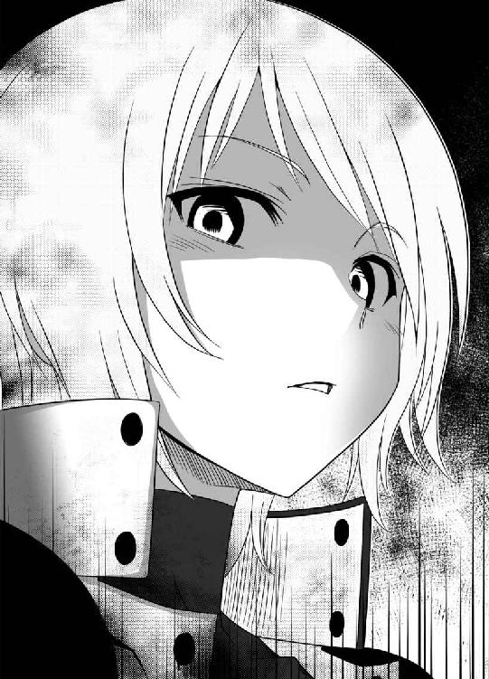
『ジン──最終通告だ。その刀を渡せ。刀さえ渡せば、君達に危害は加えん』
アイが言う。背後の二人も、ライフルをジンたちに固定したまま、動かない──相手は自動外装で完全武装した三人。対するジンは丸腰。戦うのは無論、逃げるのも難しい。
だが──ジンは、首を振った。
「断る」
『......君は、もう少し聞き分けがいいと思っていたのだがね、残念だよ』
どこまでも、冷徹なアイの言葉。だが、ジンは鼻で笑った。
「残念なのはこっちだよ、アイ──お前は、もう少しキレる女だと思っていたぞ」
『なんだと？』
「なんでこんなことをしたんだ？ 他に道は、あっただろう？」
『他の道か......そんなものが、あったのかな』
ヘルメットの奥、アイは、自嘲めいた声をこぼした。
『私は、私の目的のためならば手段を選ばない──それだけだ。そして、私はその刀が欲しい、どんな手段を使ってでもな。だから、私は力ずくででもその刀を奪うことにした――まとめてしまえば単純な話だよ』
アイ──ジンの同僚。『養成所』時代からの悪友。命を預けられるほどの仲間──ジンは、少なくとも今までそう思っていた。だが、アイは──そのジンさえも、裏切るのか。
『おしゃべりはここまでだ。こちらも時間がないのでね、これ以上抵抗するならば、強硬手段に訴えさせてもらう』
「ジン、さん......」
ジンの背後、ヨミが刀を抱えて、身を縮ませる──ジンは、前を見据えたまま、わずかに頷いて見せた。
「大丈夫──お前は心配するな。なんとかしてみせる」
『できると思うのかね？ 我々三人を相手に、たった一人、君だけで』
アイは、『葬儀屋』トップの実力を持つ剣士。仲間の二人も、かなりの力量を持っていることは先ほどわかった。しかも三人とも自動外装装備──状況は絶望的だ。が──
「できるね」
ジンは答えた──不敵にも。
『ほぅ......たいした自信だ』
「お前らしくないミスだよ、アイ──本気で刀を奪うつもりなら、こんな問答なんかしてないで、さっさと俺やヨミをブチ殺して奪うべきだった」
物騒なことをサラリと言うジン。アイは、そうだな、と認めた。
『できればそうしていたが──できない事情が、私にもあった』
「どっちにしろ──お前は時間をかけすぎた。すなわち、ゲームオーバーさ」
『ほぅ、どういう意味だ？』
アイの問いかけに答えたわけではないが──その場に、新たな乱入者の声が響いた。
『全員その場を動くなっ！ 武器を捨て、両手を挙げて地面に伏せろぉぉっ!!』
大音声──語尾がハウリングするほどの大声だった。
『貴様等は完全に包囲されている！ 抵抗は諦めろ！ 少しでも動けば命はないぞっ！』
口調は偉そうだが、声はかわいい──そんな声の持ち主を、ジンは一人しか知らない。
木の間から、小柄な人影が現れた。山中には不釣り合いなスーツ姿。片手に拡声器を持って、精一杯声を張り上げるのは──セメタリー日本支部長、鞠小路凜々華である。
『もう一度だけ繰りかえす！ 全員武器を捨てて投降しろっ！』
ブワァンッ
ブワァンッ
ブワァンッ
周囲から、機械音が響く。周囲の木の陰、岩陰、木の枝の上......あらゆる場所に、忽然と、自動外装に身を包んだ『葬儀屋』のメンバーが姿を現した。その数、数十名以上。
ステルス偽装である。いつのまにか、ジンやアイたちは、『葬儀屋』によって完全に包囲されていた。全員がライフルを構え、その銃口をアイたちに向けている。
「もう逃げられんぞ、諦めるんだな！」
今度は拡声器を使わずに、腰に手を当ててふんぞり返りながら言うリリカ。そんなリリカを見て、ジンは気軽に手を挙げた。
「よぉ、誰かと思ったらリカちゃんじゃないか」
『リカちゃん呼ぶなぁぁぁぁぁぁぁぁぁぁぁ!!』
絶叫するリリカ。声が大きすぎて、スピーカーの声が割れて耳障りな音が周囲に響いた。
「まったく、ゴクツブシ！ 貴様はいつもいつも厄介ごとばかり持ち込んでくれるな！」
「それが俺の取り柄なものでね」
「そんな取り柄があってたまるか！ この能なしのゴクツブシめ！ 貴様、今度こそ本部に掛け合って絶対クビにしてやるから覚悟しろよ！ そもそも、貴様みたいなゴクツブシがあたしの部下になったせいであたしの出世街道は完全に閉ざされて......」
『部長──その話は、次の機会でよろしいかと』
「そ、そうだな......」
傍らに立つ男にたしなめられ、リリカはゴホンと咳払いをした。リリカはあいかわらずだな、と、ジンは逆に安心した気分になった。
「まぁいい......紗村！ あたしがなぜここに来たか、わかるな？」
『............』
大勢の銃口に囲まれ、アイは、微動だにしない。ヘルメットで覆われたその表情を、外からうかがうことはできない。
「紗村。あたしはお前に、自動外装の使用許可を出した覚えはないぞ？」
『............』
「それに、お前は、鍛冶山鉄舟の遺作を発見して、それを報告もしていないな」
『............』
「──もう、あらかたの調べはついている。下手な言い訳はするなよ、紗村。投降しろ」
『............』
アイは、やはり何もしゃべらない。アイの仲間たち二人は、動揺しているようで、アイの方を見て、アイの反応を待っている。場の流れは、アイが次にどんな行動に出るか──それによって、決まるだろう。
アイの、肩がわずかに震えた。アイが動く──そう思った瞬間、ジンは呟いた。
「よせよ、アイ」
『............』
静かなジンの声。だが、アイの耳には、確かに届いていた。
「もう止めろ──俺は、お前とは戦いたくない」
『......ふっ......はははははは、そうだな、確かに、ここらが潮時か』
なぜか笑い声を漏らし、アイは武器を投げ捨て、ゆっくりと両手を肩の上に持ち上げた。
『抵抗はしない、降伏しよう』
それで──その場での戦闘は、開かれることなく幕を閉じた。
アイが投降したため、事態はあっけないほどあっさり収まった。
アイの仲間の二人も、アイと同様、一切の抵抗をしなかった。三人は、リリカの指示のもと、武装解除後に護送車に乗せられ、どこかへ搬送されていった。
そしてジンは、ヨミと共に山を下りた──大勢の『葬儀屋』に包囲されたままだが。
山の麓には、物々しい外見の装甲車や運搬車が多数止められていた。車の側面には、墓石を意匠としたセメタリーのマークが描かれている。周囲に民間人の気配がないので、すでに周辺は封鎖されているのだろう。
『葬儀屋』のメンバーが忙しそうに動き回るその場所に、見知った顔があった。キョウスケである。
「あ、ジン！ 無事だったか！」
ジンを見て、ホッとした表情を浮かべるキョウスケ──キョウスケは拘束こそされていないものの、周囲を武装した『葬儀屋』に囲まれていた。そこに、ジンたちも合流する。
「いったい、なにがあったんだ？」
キョウスケの問いかけに、ジンは面白くなさそうな顔で答えた。
「なんでもない──ただ、アイが裏切った。それだけのことだ」
「アイさんが!?」
キョウスケは今まで知らなかったのか、かなりショックを受けた様子だった。
「そんな......どうして？」
「さぁ......あいつの本心は、俺にはわからん。だけどあいつは、セメタリーを出し抜いて、ヨミの持つ刀を独占しようと画策した──それが事実だ」
「そんな......アイさんに限ってそんなことがあるはずがない！ ウソだろ、ジン！」
信じられないのか、キョウスケがジンにすがりつく......ジンは、肩をすくめた。
「キョウスケ──現実を受け入れろ。部隊がこれだけの規模で動いたんだ。冗談じゃないってことくらいわかるだろう？」
「......あぁ」
絶望的な表情で頷き、キョウスケはその場にがっくりと座り込んだ──ムリもない。キョウスケは、アイを異様なまでに崇拝していた。内心のショックは計り知れない。
「......あぁ、そろそろあたしが話してもいいか？」
タイミングを計っていたらしく、リリカが背後から出てきた。ジンは、肩をすくめる。
「好きにしろよ。誰もあんたを止めたりしない」
リリカは、ジンのことをジロリと睨んだ。
「貴様は本当に変わらんな。こういうときは、もう少し殊勝な態度を見せたらどうだ？」
「お望みなら、あんたの前で泣きながら土下座して許しを請うてやろうか？」
「口の減らない奴だ......」
リリカが、どうしようもないな、と息を吐く。
「ジンさん......」
ジンの背後で、ヨミは先ほどから落ち着かない様子だ──ムリもないだろう。周囲にはものものしく自動外装で完全武装した『葬儀屋』が、ジンたちを逃がさないように包囲している。慣れていない人間ならば気圧されてもしかたがない。
「さて......言うまでもないことだが、紗村亜衣には、現在セメタリーに対する重大な背任行為を働いた容疑がかけられている──それは、紗村亜衣と同じチームを組んでいたお前たち二人も同様だ。疑いが晴れるまでは、身柄を拘束させてもらうぞ」
そうなるであろうことは、ジンも半ば予測できていた。だから、今更抵抗はしない。
「......拘束っていう割には、手錠も何もないじゃないか」
「そんなにして欲しいなら拘束衣を着せた上に鎖で縛ってやってもいいんだぞ？」
リリカが、剣呑な眼差しでジンとキョウスケ、二人を見た。
「まったく......あたしに黙ってコソコソやって、どういうつもりだったんだ？」
腰に手を当て、ジンを見上げながら言う。リリカ本人は精一杯怖い顔を作っているつもりらしいが、どう見ても背伸びした子供が粋がっているようにしか見えなかった。
「お前は、もう少し自分の立場を自覚しろ。こんなこと、本部に知られたら、あたしもお前もまとめて潰されるぞ？」
「なんだ、あんたは俺をクビにしたがってるものだと思ったよ」
ヌケヌケと言うジンに、リリカは声を荒らげた。
「あぁ、あたしは貴様のことが大嫌いだよ！ だけど、こんな形で終わらせてたまるか！ 貴様をクビにするのは、貴様が今までしでかしてきたことの責任をとらせてからだ！ それまでは簡単にクビになれると思うなよ！」
ヘイヘイ、と適当に返事をするジン。リリカは、またも重いため息をついた。
「本当に、まったく......まぁ、だいたいの経緯はわかっている。隠し立てをしていたのは問題だが、裏切ったのは紗村たちで、お前等二人が荷担してないのも、わかっている」
「なにもかもお見通しってわけか」
「あぁ。わかったらあたしに隠し事をしようと思うなよ──まったく、最初からあたしに報告していれば、上手いように処理してやったのにな」
リリカはそこで、ジンの後ろにいるヨミへ視線を向けた。
「さて......君が、鍛冶山黄泉さんか？」
「はぁ、そうですが......」
「すまないが、我々と一緒に来てもらおう。さすがに君を見過ごすことはできないからな」
「えぇ......」
頷きながら、ヨミはリリカに尋ねた。
「それであの......お嬢さんは、どちらさまでしょう？」
「お嬢さん......プッ！」
「笑うなゴクツブシィィィィ!!」
思わず噴き出すジンに、赤い顔で怒鳴るリリカ。確かに初対面なら、リリカを子供だと思ってもしかたない。そもそもリリカとヨミを比べたら、ヨミの方が年上にしか見えない。
「と、ともかく！ あたしはな、こう見えても今年で三十三歳になるんだ」
「え!?」
ヨミが、信じられないという顔でジンを見上げる。ジンは、重々しく頷いた。
「残念だが、リカちゃんはウソをついていない」
「リカちゃん呼ぶなぁぁぁぁぁぁぁぁぁ!!」
もう一度絶叫した後、リリカは息切れしながら、ヨミに話しかけた。
「と、ともかく......お嬢さんの正体に関しては、あたしたちもまだくわしくはわかっていない。お嬢さんが協力してくれるならば、決して悪いようにはしないと約束しよう」
ヨミは、まだ若干警戒している様子だった。リリカは、安心させるように微笑む。
「警戒されるのはしかたないか。でも、あたしたちはこう見えても悪党ではない。あたしたちは、人類の平和と安寧のために日々戦い続ける組織」
「リカちゃん親衛隊！」
「なのだから──ってオイ！ 誰だ、今変な組織名叫んだバカは！ 貴様か、また貴様なのか、ゴクツブシ！ 貴様、何回あたしのジャマをすれば気が済むんだぁぁぁぁぁぁ！」
リリカが、ジンの襟首を摑んで揺さぶる──が、体格の差があるので、リリカがジンにしがみついてダダをこねているようにしか見えなかった。
「えっと......わかりました。あなたに従おうと思います」
このままでは話が進まないと思ったか──空気を読んだヨミが、了承の意を示す。
「おぉ、いいのか？」
「はい。少なくともあなたの言葉は信用できると思います」
と、ヨミが頷いたことで話は進んだ。
「よし、いったん支部まで来てもらおうか。部屋と食事は用意する。落ち着いたら、少し話を聞かせてもらいたいが、いいかな？」
「はい、お任せします」
うなずくヨミ。話はまとまったようだ──リリカは、頭が固くて融通が利かないところはあるが、意外に面倒見がいいところもある。こうなってしまった以上、もはやジンにできることは少ない。リリカを信じて、彼女に任せるしかないのだろう。
ジンが、そう納得しかけたその時──鋭い声が響いた。
「キャプチャーッ！！！」
突風が巻き起こった──突然の風に、全員が、反応しきれない。
その風は、ヨミの手の中にあった刀を、宙に舞い上がらせた。刀はまるで意志を持っているかのように宙を飛び、ある人物の手の中へと、吸い込まれていった。
「鍛冶山鉄舟の遺作──たしかにいただいたヨ」
山の斜面の上に、三人の人影があった──剣轟である。そのうちの一人、刀狩りがヨミから奪った刀を抱え、満足そうに頷いていた。
「〈斯界の剣轟〉だと？ バカな！ 封鎖班はなにをしていた！ なぜ連絡してこない！」
「連絡など、したくてもできようはずもない──全てこの俺が喰ってやった」
刀狩りの傍らで、金髪のレオンが、獣じみた笑みをこぼす──そうだ。剣轟達も、ヨミの刀を探していたのだ。ここに姿を現す可能性は、充分にあった。
「部長！ 封鎖班からの定時連絡が途絶えました！」
「遅い！ 言わんでもわかっている！」
リリカは、ヒステリックに叫んだ。
「敵襲だぞ！ ボサッとするな！ 総員戦闘配置！」
「それと、部長。どうやら、護送車も襲撃されたようで、中の......が」
「なんという失態だ!!」
頭を抱えて叫ぶリリカ。さすがに慌てているようである。
「か、返してください！」
「ふん？」
と──周囲の喧噪をかき分け、ヨミが剣轟の立つ崖下へ、駆け寄っていった。
「それはわたしの、父の形見なんです！」
「それがどうしたというのだ──名刀は、それにふさわしい実力を持つ剣士によって使われるべきものだ。この刀とて、俺に使われるのが本望だろう」
猛々しく吠えるレオン──と、薄暗くなりかけていた山の中、強烈な光が差す。投光器が用意され、周囲から剣轟達を照らし出したのだった。
『あー、あー、聞こえるか、そこのロクデナシども！』
拡声器を構え直したリリカが、剣轟に向かって叫ぶ。
『〈斯界の剣轟〉どもめ！ このあたしの目の前にノコノコ出てくるとはいい度胸だ！』
「ふん、小娘。俺に向かってそれだけ吠えるとは、貴様の方こそいい度胸だ」
『貴様、その顔には覚えがあるぞ──剣轟、リチャード・レオンハート。通称『獅子心剣』だな！』
「俺の名を知るか、小娘」
『獅子心剣』の異名を持つ男──レオンは、そうつぶやく。
『貴様には『禁機指定』レベル四が認証されている！ 大人しく逃げられると思うなよ！』
「俺と戦う気か？ 愚かな」
レオンが嘲笑う──レベル四。それはすなわち、『葬儀屋』部隊五十名以上を推奨とするレベルである。今ここにいる人員だけで対処をするのは難しい相手だ。
『他の二人も知っているぞ！ 剣轟、リン・カオシェン、通称『刀狩り』。それに剣轟、レイカー・ランドルフ、通称『金剛』。二人とも『禁機指定』レベル三だ！』
「うるさい小娘だネ」
「............」
剣轟たちは、すでに自分たちが『葬儀屋』の部隊に包囲されているというのにまったく動じていない。むしろ、余裕さえ感じられるそぶりだった。
『チッ、奴らを拘束しろ！ ムリなら殺害してもかまわん！ セメタリーの威信にかけて、奴らを絶対に逃がすな！ 各隊、一斉射撃！』
問答無用、リリカの号令で、周囲の『葬儀屋』部隊が一斉にライフルを発砲した。
ガガガガガガガガ
日本では聞き慣れない激しい銃撃音が、山間に響く。
『民間人は近くにいない！ 撃て！ 撃って撃って撃ちまくれぇぇぇぇ！』
リリカ自ら陣頭指揮をとって、声を張り上げる──が、剣轟達は無傷だった。無数の弾丸が雨あられと降り注ぐ中、刀狩りと金剛、二人の剣轟が目にもとまらぬ速さで動き回り、手の刀で、弾丸を全て弾いているのだ。
「眠いな......」
一人、たたずんだまま動かないレオンが、そう呟く。
「さっさと終わらせてしまえ、刀狩り！」
「はいはいネ──キャプチャー!!」
刀狩りが、両手を広げた。袖口からまたも突風が巻き起こり、『葬儀屋』の面々からライフルを奪い取っていく。
『な、なんだと！』
しかも、刀狩りの力はそれだけでは終わらなかった。すさまじい突風は、あたかも竜巻のよう──重量十トンを超す装甲車すらも、その突風で巻き上げられた。
ジンたちがあっけに取られる中、巨大な装甲車やトラックといったものが木の葉のように宙を舞い、巨大な車体は刀狩りの小さな服の袖の中へと吸い込まれ、消えてしまった。
「刀狩りの異能は、あらゆる武器を簒奪する──『魂』のない武器など鉄クズも同然よ」
レオンが傲然と聳えながら、嘲笑う。
一方のリリカ──小柄なために、突風で自分の体も吹き飛ばされそうになった彼女は、近くの樹に両手両足でしがみつき、必死にこらえていた──その姿はコアラのようでもある。
突風が収まると、ストン、とリリカは木から落下。おしりを打って、イタタタ、とおしりを押さえながら立ち上がると、恥ずかしさと怒りで顔を朱に染め、必死に叫んだ。
『えぇい、貴様ら何をやっているんだ！ しっかり働け！ 奴らを足止めしろ！ 対異能戦用特殊装備はどうした！』
『部長。到着が遅れています。到着まであと三百秒はかかるかと』
『なんとしてでもそれまで奴らの足止めをしろ！ どんな犠牲を払ってもかまわん！ セメタリー日本支部の底力、見せてやれ！』
指揮官の鼓舞で、浮き足立っていた『葬儀屋』の動きに生彩が戻る。リリカも肩書きだけで支部長という職に就いているわけではない。それなりに統率力を持っているのだ。
一方のジンは、スキを突いて離れたヨミのもとへと駆け寄った──さすがにこの状況では、ジンを包囲する『葬儀屋』はいない。戦えるものは全員剣轟の対応に追われているのだ。
ジンもできるならば加勢したかったが、今は、ヨミを確保するだけで手一杯だ。
「おい、ヨミ、しっかりしろ！」
「だ、大丈夫です......ケガはないです」
ケガはないと言っているが、彼女の額には小さな擦り傷があった。服も、土で汚れてしまっている。刀狩りの突風は、小柄な彼女を激しく吹き飛ばしてしまったのである。
ヨミは立ち上がるや勢いよく、剣轟達のもとへと駆けだした。
「おい、待て！ どこへ行くんだ！」
「刀を──父の、形見を！」
必死の形相でヨミは駆ける──ジンはなんとかヨミに追いつき、肩を摑んで押し止めた。
「バカ！ 死ぬ気か！」
「でも、形見を......」
「だからって、死んだらどうする！ 少し落ち着け！」
ジンに怒鳴られて、ヨミは、少しだけ大人しくなった──ヨミは、普段落ち着いた物腰の割に、一度頭に血が上ると周囲が見えなくなってしまうらしい。
一方の剣轟達は──軽やかに戦場を駆け抜けていた。
崖から飛び降りた剣轟達は、それぞれの武器を構え、『葬儀屋』とぶつかり、倒し、離れ、またぶつかり──縦横無尽に動き回りながら、確実に『葬儀屋』の数を減らしていた。
ドサッ、バッ、ブンッ
一人、また一人と、『葬儀屋』は血の海に沈んでいく──対照的に、剣轟三人に傷らしい傷はない。飛び交う銃弾すらも剣轟は見切り、かわし、弾いてしまうのだ。
「キャプチャーッ!!」
再び、刀狩りがその異能を使う──『葬儀屋』の使うライフルが、さらに根こそぎ奪われていく──銃撃の音が、完全に止んだ。『葬儀屋』の銃器が全て奪われたのだ。
「返して──返してください。わたしの、わたしの父の刀を、返して！」
戦場が静かになった瞬間、ヨミが、もう一度声を張り上げた。
「ふん、小娘か......なぜ、返さねばならん？」
返り血で真っ赤に染まったレオンが、腕を組み、ヨミを見る。その目は、虫けらを見るかのように尊大だった。
「鍛冶山鉄舟は、多くの実用刀を世に送り出した──この刀は、その最高傑作だ。ならば、それにふさわしい実力を持つ剣士が所有するのが妥当だろう。そして、この俺以上の剣士など存在しない──俺はその事実を、この刀を使って証明する。俺こそが〈斯界の剣轟〉、その頂点に立つ存在だと、覇を唱えるのだ！」
ヨミは、そんなレオンに向かって必死に叫んだ。
「違います──確かに父は実用刀、実戦に耐える人斬り刀を多く作り、それを誇りとしました──ですが、晩年の父は、そのことを後悔したのです！」
つかのま喧噪が収まった空間にヨミの声が響く。
「父の名が知れ渡るにつれ、父の刀を求める剣士が多く訪れるようになりました。そして、父の刀を求めるあまり、それが原因で多くの人が死ぬようになりました──刀なんて、所詮は道具。人間に使われる存在。なのに、その刀を手に入れるために人が死んでいく、人間が刀に使われてしまっている──と、父は生前悲しそうに言っていました」
だから、とヨミは続ける。
「父は、最後にその刀を生み出したのです──父は、言いました。その刀を使う者こそ、次代を担う存在。刀に新たな意味を見いだすことのできる、本当の剣士なのだと」
「......眠いことを言う」
レオンは、ヨミの言葉を一笑にふした。
「刀匠がどれだけの理想を刀に込めようと、それを実際に使うのは剣士──鍛冶山鉄舟の遺志は、なるほど、確かに聞き入れた。だが、俺は俺の覇道をこの刀で切り開く！」
レオンが叫び、手を伸ばした。
「刀狩り。刀をよこせ──ちょうどいい。その刀の力を奴らに見せつけてやろうぞ。俺が斬り開く新たな未来、血と闘争に溢れる修羅の世界を、見せつけてくれるわ！」
「止めてください！」
ヨミの叫びを無視し、レオンは刀狩りを振り返った。
「どうした？ 早く刀をよこせ」
「レオン......ここで私が素直に渡すと、本気で思っているのかネ」
鬼面をつけた刀狩りが、低く言う。
「あんたとは、最初から約束していたはずだネ。この刀を手に入れるまでは手を組む──だけど手に入れた後もあんたの味方でいる約束をした覚えはないネ」
「バカめ──貴様如きが、俺に刃向かい、生きていられると思ったか？ 他人の武器を奪うしか脳のないウジ虫如きが！」
突如、レオンと刀狩りの言い争いが起こる。仲間割れだ。
「私だって、お前に負けない野望があるネ──そのためなら、手段は選ばないネ。当代最高の刀匠、鍛冶山鉄舟の最高傑作、その試し斬りの相手は、お前だネ、レオン！」
刀狩りが、刀の柄に手をかける。
「止めてください！ 父の刀を巡って争うのは、止めてください！」
涙をこぼして叫ぶヨミ──彼女が今語った父親の遺志を思えば、剣轟達の争いは、あまりにもその遺志に反していることだろう。
「いいだろう、相手になってやる、刀狩り──金剛、お前は手を出すなよ」
三人目の剣轟、金剛は無言で頷いた──二人の争いに介入する気はないらしい。
さらに金剛は二人の前で仁王立ちとなり、チャンスをうかがう『葬儀屋』を牽制していた。『葬儀屋』もまともな武器がなく、手を出しかねている状況だ。
「行くぞ、刀狩り。ここで俺に喰われ、俺の血肉となれ」
そのまま二人の剣轟が、ぶつかり合う──かに思えた。
だが、なぜか刀狩りが動かない。レオンは自分の刀を構え、刀狩りをいつでも斬れる位置にまで接近している。だというのに、刀狩りは刀を鞘に収めたままだ。
「なにをしている、刀狩り。抜かんのか？」
「う......な、なんなんだネ、この刀？」
刀狩りが、うわずった声を漏らす──刀が抜けないのだ。ジンが試したときと同じだ。刀狩りも刀が抜けず、焦っているようだった。
「どうなっているネ、この、この！」
「刀狩り──刀に、選ばれなかったようだな」
レオンがつぶやく。その声には、嘲りと哀れみがあった。
「名刀は自らその主を選ぶ──貴様は、その器ではなかった、そういうことだ」
「う、うるさいネ！ えぇい、鞘なんていらんネ！ こんなもの、ぶっ壊してやるネ！」
焦った刀狩りの袖口から、刀が飛び出した。その刀で、ヨミの刀の鞘を破壊するつもりらしい。その意図を悟ったヨミが、思わず叫んだ。
「ダメです！ その刀を傷つけないでぇぇぇ!!」
ヨミの絶叫──その時、異変が起きた。
「え!? う、うそ──そんな......い、いや、いやだネ......あ、あぁ......そんな......」
刀狩りが、突如よろめく。刀狩りは、何かに怯えるかのように、その場から後じさった。
「そ、そんな......こ、こいつ......この刀の力......私と同じ、異能を持って......」
ドサッ、足がもつれ、刀狩りがその場に倒れる──怯えたように体を震わせるその姿は、先ほどまで『葬儀屋』を圧倒していた剣轟の一員にはとても見えなかった。
「い、いやだ、いやだネ！ そんなのはいやだネ！」
うなされるように、刀狩りは頭を抱えて叫び、地面を転がりながら、救いを求めるかのように手を伸ばす──倒れた衝撃で鬼の面が外れた。意外にも整った刀狩りの素顔が露わになっていたが、今はその表情は、恐怖に歪んでいる。
『部長、対異能戦用特殊装備、準備完了しました！』
「よし、なんだかわからんが、とにかくチャンスだ！ 全員突撃！ 奴らを拘束しろ！」
と、『葬儀屋』側の準備も整ったらしい。リリカが手を振ると、物々しい装備を持つ『葬儀屋』たちが、一斉に動き出した。
「あぁ......イヤ、イヤだね！ 私は、私のままでいたい！ こんな、刀ごときが、私より強い『魂』を持っているなんて、そんなぁぁぁぁぁぁぁ!!」
刀狩りが、絶叫したその瞬間。
ザシュッ
刀狩りの小さな体が、八つ裂きとなった。
その異様な光景を目にしたものは、誰もが己の目を疑った──およそ常識では考えられないほどの数、数百、数千以上の刀剣によって刀狩りは体を貫かれ、その遺体はもはや肉片でしかなかった。しかも──その刀は、刀狩りの体内から飛び出してきたのだ。
そして次の瞬間──さらなる異変が、周囲を襲った。
刀狩りの絶命したその場所から、堰を切ったように、大量の武器が出現してきた──数える気にもならないほど大量の武器──刀剣や銃器は無論、大型の戦闘車両や航空機に至るまで──あらゆる兵器が一斉にあふれ出て、津波の如く、周囲を呑み込んでいった。
「チッ、刀狩りの死で、あいつが今まで奪った武器が全て現出したか」
押し寄せる鋼から逃げながら、レオンが呟く──そう、それは、刀狩りが己の異能によって今まで簒奪してきた武器兵器の類である。
大量の武器は、一瞬のうちに周囲を埋め尽くし、山肌にある木々をなぎ倒しながら、あふれかえっていった。
「ヨミ！」
「え!?」
ジンも、無論ボーッとしてはいられない。とっさに近くにいたヨミを抱えて、押し寄せる武器の波から必死に逃げる──ここが山だということが幸いした。斜面を上へ向かって逃げていけば、さすがの武器の波も、追っては来れない。
『部長、ここは危険です！ お下がりください！』
「こら、あたしを子供扱いするな！ あたしを抱えて運ぶな！」
『しゃべると舌を嚙みますよ』
ジンの視界の端では、セメタリーの人間も、大あわてで逃げているところだった──自動外装さえ装備していれば、逃げるのはそう難しくはないだろう。
しかし、ジンは違う──ジンは生身のままだ。背後からは、波のように武器の大群が押し寄せてくる。ジンはヨミを抱えたまま、逃げるのに精一杯だ。しゃべる余裕すらない。ヨミの方も他にどうしようもないのか、ジンにしっかりとしがみついていた。
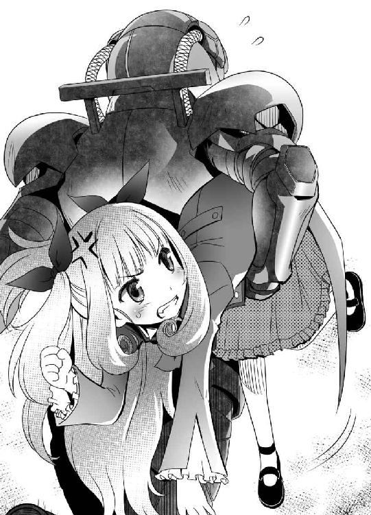
そして──ジン達はしぶとく生き残った。体力を振り絞って武器の波を越え、山を駆け上ることで、なんとか危険を脱することができたのだった。
「ふぅ......なんとか逃げられたな」
「そのようですね」
ジンは周囲を確認したが──完全に、他の『葬儀屋』メンバーとはぐれてしまったようだった。ジンは自動外装も装備していないので、味方が近くにいるのかもわからない。
「え？」
ヨミが、驚きの声を漏らした。どうした、とジンが振り返ると、ヨミは傍らにあった一振りの刀を持ち上げていた。
「どうして......父の刀が？」
そう、それは鍛冶山鉄舟の遺作である。刀狩りによって奪われたはずの刀が、なぜかヨミの傍らに落ちていたのだ。
「なんで......」
「名刀は、自らの主を選ぶ──それは事実だ。その刀は、お前を自分の持ち主だと認めているのさ。だから、主の行き先に、その刀は現れる」
「そんな......」
「さっきの剣轟──刀狩りは、力ずくで刀を抜こうとして──その刀の怒りに触れた。だから、こんな結果になったんだ」
「............」
ヨミは、ジッと、手の中の刀を見つめている。
「ヨミ。その刀は本物だ──本物の、名刀だ。その力は、今見たとおりのものさ──素晴らしい刀だが、同時に危険すぎる刀でもある」
ジンは、静かに語った。それは事実であり、そのことはヨミ自身痛感していることだ。
「どうする、ヨミ？ お前は、これからどうするんだ？」
「どうする、とは？」
ジンは静かに肩をすくめた。
「俺は別に、その刀をよこせなんて言うつもりはない。かといって、ここでお前と別れるには深入りしすぎた──お前の好きにしろ。俺は、お前に力を貸す、それだけだ」
「どうして、ですか？」
ヨミは、ジンに問いかけた。
「ジンさんは、どうしてわたしを助けてくれるのですか？ そんなことしても、ジンさんにはなんの得もないのに？」
「理由がなきゃ、人を助けちゃいけないのか？ そいつはずいぶんと世知辛い世の中だな」
つまらなそうに呟き、ジンは頭を振った。
「まぁ、知っての通り俺は怠け者で、セメタリーでも有名なロクデナシさ──けどなぁ、俺だって、たまには人のために動いてみるかって気分にもなるんだ」
ジンは、少し遠くを見る目で、空を見上げた──すでに、空はだいぶ暗い。ヨミを見つけたのも、夜だったなぁと、昨日のことなのに、もうだいぶ昔のことのように思い出す。
「なんていうか......お前を見ていると、あいつのことを思い出すんだ」
「どなたですか？」
「俺にとって──大切な人間だった」
ジンは、語る。
「本当は自分にやりたいことがあるくせに、いつもガマンして黙ったまま、周りの人間の望み通りに動く──そういう奴だった。だから、俺が護ってやらなきゃいけないって、そう思える奴だった」
「わたしは、別にガマンなんてしていません......」
「本当にそうなら、なんで今のお前はそんな顔をしている？ もう少し笑ってみろよ」
ジンは言う──ヨミは、まだ若い。成人にも至っていない年のはずだ。なのに、彼女は日頃から冷めた表情のまま、あまり笑ったりしない。それがジンには不服だった。
「わたしは......ただ、父の遺志を果たすために......」
ジンは、面倒そうに頭をかいた。
「いいか、ヨミ、これだけは、覚えておけ......お前のオヤジの遺言を守るのは、そりゃぁ、大事なことかもしれない。けどな、その為にお前一人が色んな苦労を背負い込んだ上に、危険な目に遭わなきゃいけないなら、その遺言の方が間違ってるんだ」
「でも......」
「でもじゃないだろ」
冷たく、ジンは言う。その声には、怒りさえ交じっていた。
「それがどんなに大切な刀なのか、俺にはわからない。だけど、刀は所詮刀だ。たかが刀一本如きに人生振り回されて、それでいいのか？ そんな人生が、お前のオヤジが娘に望んだ生き方だと、本気で思っているのか！」
半ば怒鳴るように言われ──ヨミは、動揺したようだった。
「わ、わたし......わたしには......」
口ごもりながら、それでも言葉を必死に紡いでいく。
「わたしにとって、父が全てなんです。物心ついたときから父と二人だけで暮らしていました......わたしにとっての世界は、父と、その周辺だけの世界だったんです──だから、父が死んだあと、わたしはなにをすればいいのかわからなくて──それでも、父の遺志だけは果たさないといけない、それが使命だと思って、それで今まで旅をしてきたんです」
「その、アテのない旅を、お前はまだ続ける気か？」
「父の死後、ずっと旅を続けてきました。色んな苦労もしましたし、つらい経験もありました──そして、今日、久々に父のことを思い出しました」
ヨミは、さらに語る。
「ジンさんの家に行って──すごく汚くて、正直だらしないと思いました。それで掃除とか、炊事をしたんですけど──父が死んでから、家事をやったのは初めてで、すごく久しぶりで、それで、父のことを思い出したんです」
自然に、ヨミの目から、涙がこぼれていた。
「父も──作刀の腕はもちろん素晴らしかったのですが、他の生活能力が皆無な人で、家事は全部わたしがやっていました──父が生きていた頃を、今日、久々に思い出して......」
ヨミは、ついにその場にしゃがみ込んだ。両手で抱えた刀に顔を押し当てる。
「父上ぇ......父上、どうして、わたしを置いて死んでしまったのですか......」
そのまま、ヨミは嗚咽を漏らした──やはりそうか、とジンは思った。それは、ヨミと最初に出会ったときから感じていた違和感だった。
ヨミは、若い割にはしっかりした少女だ。面倒見がよくて落ち着いた物腰を持っている。だが、その姿が、どこか不安定なようにジンには思えていた。
その脆さが、今はっきりわかった──彼女は、自分の父親が死んだショックから立ち直れていないのだ。彼女は未だに父親のことを引きずって生きている。
普段しっかりしているように見えるのは、それを取り繕っているだけだ。今回のような緊急事態になれば、その脆さが表に出てしまう。
「なぁ、ヨミ......」
ジンは、少しだけ迷った後、うずくまるヨミと、視線の高さを合わせた。
「お前は、少しマジメすぎるんだ。物事、そんなに難しく考えなくていいんだ。俺を見ろよ。俺くらい適当に生きていたって、世の中なんとかなるもんだ」
「......ジンさんはもっとマジメに生きるべきだと思います」
手痛い言葉が返ってきた──でも、そうやって言い返すことができるくらいには、ヨミの元気も残っているようだ。
「まぁ、そんなことはどうだっていい......ヨミ。お前も、色々あっただろう。なにも今すぐ結論を出せとは言わないさ。これからどうするのか、どうしたいのか──少しくらい、悩む時間だって欲しいだろう。お前さえよければ、しばらくうちに住むか？」
「え？」
予想外の言葉に、ヨミが面食らった様子だった。
「知っての通り、俺はモノグサにかけては定評のある男だ──誰か、俺の世話を焼いたり、家事をやってくれる人間がいなきゃ、俺はどこまでも自堕落になってしまうのさ」
「......それって、ジンさんの家のおさんどんになれってことですか？」
「そんなもんじゃない......ただ、行くあてがないなら、しばらくいろって言ってるだけだ──お前がイヤじゃないなら、いつまでもいたっていいんだぜ」
「いつまでも、ですか？」
ヨミは、少し顔を赤くした。
「あの、それって......これから先も、ずっとということですか？」
「お前がイヤじゃなければな」
ヨミは、急に歯切れが悪くなった。
「イ、イヤというわけではないですけど......でもそういうことを、すぐに決めろというのも急すぎる話と言いますか......」
「だから、考える時間が欲しいなら、俺の家にいろって言ってるだけさ」
「......その......わかりました。わたしとしてもやぶさかではないと言いますか......その、しばらくご厄介になります」
ペコリ──思ったよりも簡単に、ヨミが了承してくれた──これで、なんとかなったか、とジンは安堵した。
後は、リリカ辺りにどう説明するかだが──なんとかなるだろう、ジンは持ち前の気楽さでそう考えていた。いざとなったら、セメタリーを敵に回したっていい。もう、あの組織に未練は......
「ジャマだ、どけ」
ザシュビチャッ
ヨミの顔が、血に染まった──ヨミの目が見開かれ、その顔が、驚愕に歪む。
「オヒッ、ヨミ、無事きゃッフ」
ジンが、思わずヨミに声をかけるが、声が上手くでない。それどころか、喉の奥から血がこみ上げてきた。
「失せろ、ウジ虫」
ジンの背後から──どこまでも冷たく、凶悪な声が響いた。レオンの声だ。
ジンは、ようやく気づいた。自分の胸から、刀の先が飛び出ている。ヨミの顔を汚したのは、その傷口から噴き出た血だった。
「ジンさんっ！」
ヨミの、悲鳴──ジンは、口から血を吐きながら、レオンの怪力で体が持ち上げられ、そのまま弾き飛ばされた。ジンの体がピンポン球のように地面をバウンドし、樹に叩きつけられる。
「いやぁぁぁぁぁぁ、ジンさんっ！」
ジンに駆け寄ろうと、ヨミが走った。だが、近づくことはできなかった。なぜならば、ヨミの襟首をレオンが摑み、そのまま、猫の子でも持ち上げるようにヨミの体を持ち上げたからだ。凶悪なレオンの形相が、ヨミの顔をのぞき込む。
「手間取らせてくれたな、小娘。貴様の持つその刀を、俺によこせ」
「イ、イヤです！ 誰があなたなんかに！」
「命がいらんようだな、小娘......」
乱暴に、レオンはヨミを地面に放り投げた。キャッと、短く悲鳴を漏らすヨミ。
「刀狩りは、力ずくでその刀を抜こうとして失敗した──おそらく、その刀は、現在の所有者である貴様に認められねば使えない仕組みなのだろう──厄介な仕掛けだ」
レオンは、ヨミの目の前に聳え立ち、傲然と言い放った。
「さっさと、刀を俺によこせ──どのみち、俺のものになる宿命なのだからな」
「そんなことより、わたしは、ジンさんを助けないと！」
ジンの出血は、目に見えてひどい。すぐに手当をしなければ、命に関わるだろう。
「小娘......お前も、あの男のようにはなりたくはあるまい？」
レオンは、虫けらを見るような目でヨミを見下ろした。だがヨミは、毅然と言い放つ。
「ジンさんにこんなことをする人に、わたしは殺されたって、刀を渡したりしません！」
「自分の立場が、わからないと見える」
「あ、かはっ......」
ガシッ──レオンのたくましい腕が、ヨミの喉を摑んだ。そのままヨミの体を片手で持ち上げ、ギリギリと、首筋に指を食い込ませる──ヨミの顔がたちまち真っ赤になり、目からは涙があふれ、空気を求め、口が金魚のようにパクパク動く。
「苦しかろう？ まだ若い身空で、窒息死はしたくあるまい。さぁ、俺に刀をよこせ。俺に従えば、小娘一匹の命くらい見逃してやる」
レオンが、ヨミを解放する──ヨミは地面の上に座り込み、ゴホゴホと何度も咳き込んだ──が、その目に宿る強い意志には、微塵も揺らぎがなかった。
「ゲホッ......絶対に、渡しません！」
「フンッ、どうやら本当に死にたいらしいな......」
「バカッ！ なにをやっているんだ!!」
ジンの叫び。同時に、レオンの体が吹っ飛ばされた──横手から全力で飛び出したジンが、足を高々と上げて、レオンを思いっきり蹴り飛ばしたのである。
ジンは、胸の傷を片手で押さえ、顔をしかめながらヨミに言った。
「早く逃げろ......あいつは、俺が相手をしておく。お前は、セメタリーの人間を探せ──リカの名前を出せば、乱暴なことはされないはずだ」
「でも、ジンさん、その傷は！」
手で押さえた程度で、胸からの出血は止まらない。ジンの顔色は、すでに蒼白だった。
「俺のことなんか気にするな──なに、俺は、殺されたって死なないよ」
「たいした自信だな」
ユラリ──幽鬼のように、レオンが立ち上がる。
「そうか──貴様、昨日の道化か。面白いな。貴様はどこまでも、俺を楽しませてくれる」
ククッ、レオンが、喉の奥で笑い声を響かせた。
「確かに今の俺は油断していた──だが、それでも、この俺にまともに攻撃を入れることができる者など、何人もいないぞ──貴様、ただ者ではないな」
「ただ者だよ、俺は」
傷口を押さえながら──武器も何もないが、それでも、ジンは構えた。
「俺はただの、ロクデナシなゴクツブシと呼ばれる怠け者さ」
「そうか──だが、今は貴様と遊ぶつもりは、ない」
レオンが、片手に持った刀を振り上げ──無造作に、振り下ろした。瞬間、数十メートルは離れていたジンの胸が袈裟懸けに斬り裂かれ、ジンは地面に膝をついた。
「ジンさんっ！」
慌てて、ヨミが駆け寄ってくる──だが、ジンは血で汚れた手で、ヨミを押しのけた。
「逃げろって言っただろう！ さっさと行け！」
「でも......」
「......なるほど、そういうことか」
レオンが、ゆっくりと、地面に膝をつくジンに、近づいてきた。
「小娘──どうやら貴様は、自分が傷つくより、その男が傷つくほうがこたえるようだな」
レオンはそのまま無造作に足を振り上げ、ジンの体を強烈に蹴り飛ばした──ジンはなすすべなく、地面を転がる。
「なんてことを！」
「小娘──」
チャキッ──レオンが、足下に転がるジンの首筋に刀を押し当てた。刃は、ジンの首筋を皮一枚斬り裂いたところで、止まっている。
「俺の手元が少し狂えば──この男は死ぬ。この男を解放して欲しくば、刀をよこせ」
「ひ、卑怯です！」
「俺もこういう手はあまり好かんのでな──あまりこれ以上手間取らせるな、小娘」
レオンが、吐き捨てるように言う。
「さぁ、刀をよこせ......」
「渡すな！」
ジンが、叫んだ。同時に、のど元にある刀を、片手で鷲づかみにする。
「ほぅ？」
レオンが、刀を抜こうとする。だが、ジンが刀を摑んでいるため、思うように動かせない──たちまち、ジンの手が斬り裂かれ、真っ赤な血が、刀身を滴っていく。
「渡すんじゃない、ヨミ......お前は逃げろ」
「で、でも、ジンさんが！」
「言っただろう──俺は、ロクデナシな男さ。俺がここでくたばったところで、悲しむ人間なんてどこにもいない──お前は、気にせず逃げろ！」
「離せ、道化。貴様の指が切断されるぞ」
興味深そうに、レオンが呟く。実際、刀を摑んでいるせいで、ジンの手の平はボロボロだった。手からは、まるで焼きごてを押しつけられたかのような、鋭い痛みが絶えず襲ってくる。指の肉がガタガタで、刃が、骨にまでたっしているようだった。
それでも、ジンは手を離さない。それどころか、反対の手でレオンにしがみついた。
「逃げろ！ ヨミ！」
「ジンさんっ！」
「チッ」
ザシュッ
レオンの、刀が、ジンのモモに突き刺さった。
「グッ！」
その傷口から、水道のように、血が流出する──ジンが、ばたりと、地面に倒れた。
「ジ、ジンさぁぁぁんっ！」
「チッ、道化が手間取らせてくれる」
レオンが、やや不服そうに呟く。ヨミは、ジンの言いつけに背き、再度ジンに駆け寄ろうとした──が、足を滑らせて転倒。地面にできた血だまりの上に転がり、ヨミの全身が、どす黒く汚れる──ヨミは、血まみれになった自分の手を見て、思わず悲鳴を上げた。
「イヤァァァァァァァァ!!」
「小娘──その男の大腿動脈を切断した。一分以内に止血せねば、その男は死ぬ」
レオンが、淡々と事実を告げる。ヨミは、狂ったようにジンにすがりついた。
「アァァァァァァァァァァァ、そんな、ジンさん、しっかりしてください、なんで、どうして、こんなことに、わたしのせい、わたしのせいで、ジンさんまで、こんなことに、わたしなんかが、わたしなんかのせいで、どうして......」
半狂乱となるヨミ。完全に錯乱していた。そんなヨミに、レオンが告げる。
「小娘。そいつを助けたければ、刀をよこせ。今すぐ渡すならば、この俺手ずから、そいつの応急手当をしてやろう──今すぐ手を施さねば、そいつは確実に死ぬぞ」
「............い」
──急に、ヨミが、静かになった。倒れたジンの傍らに座り込み、うつむいたまま、肩を震わせている。
「どうした、小娘。渡す気になったのか？」
「......さ......い」
ヨミが、小さな声で、何かを呟いている。レオンは、ヨミの肩を摑んだ。
「聞こえんぞ、はっきり言え！」
「赦さないっ!!」
バシッ
ヨミは、レオンの手を払いのけ、血走った眼差しで、レオンをにらみつけた。
「む」
レオンが思わず声を漏らすほど──ヨミの形相には、鬼気迫る何かがあった。
「あなただけは、絶対に赦さないっ！」
ヨミが、手を横に振る──瞬間、近くの地面に転がっていた刀──鉄舟の遺作がフワリと浮き上がり、ヨミの手の中へ、吸い込まれるように移動した。
「なん、だと？」
さすがのレオンも、驚愕した。
ヨミは目から涙をこぼしつつ、恐ろしいほどの敵意を込めて、レオンを見据えていた。その全身から、陽炎のようなものが立ち上り、風となって、周囲を揺さぶる。
「あなたたち、わたしの大切な人を傷つけるあなたたち全員を、ユルサナイ！」
ヨミが、刀の柄と、鞘を両手で摑んだ。その刀を、左右へゆっくりと動かす──今まで、誰も抜くことのできなかった刀を、ヨミは、引き抜こうとしていた。
徐々に、露わになっていく刀身──その刀身からあふれ出る輝きが、周囲を照らす。
『黄泉ヨ、私ハオ前ヲ護る。ソノ為ニ存在スル』
刀から、声が響いた。それは硬質で、無機質な声だった。
今まで誰も抜くことのできなかった刀が鞘走り、ついに、その全貌を明らかにする──ヨミが持つにはやや長大な刀身は虹色に輝き、この世ならざる雰囲気を醸し出していた。なにより、その圧倒的なまでの威圧感は、見るものを畏怖させる力があった。
『黄泉ヨ。オ前ヲ護ル為、我ガ力ヲ解放シヨウ』
ヨミが、刀を構える──対峙するレオンは、明らかに狼狽していた。
「バカな......こんな小娘如きが、これほどの『魂』を操るなど、ありえんっ！」
慌てて、レオンは、己の刀を構え直した。
「ありえん、この俺が、こんな小娘如きに畏怖するなど──もう、細かいことはどうでもいい！ 貴様を俺の手で殺して、俺こそが主だと、その刀に教えてやる！」
レオンは刀を構え、遺作を構えるヨミめがけ、傲然と駆け寄った。
「食らえ、我が奥義、獅子心剣参の太刀、千尋おろし・極!!」
レオンの刀が、素早く動く──速すぎて、その切っ先が分身するかのように、かすむ。剣先から、無数の衝撃波が生みだされ、地面を砕きながらヨミに襲いかかった。
ヨミは、逃げようともしない──ただ、手の刀を、前に突き出した──それだけで、レオンの放った斬撃全てが、搔き消されるように消えた。
「なん──」
レオンさえも思わず息を呑むほど、ヨミの力は異常だった。
「......サナイ」
ヨミは、そのまま手の刀を頭上に掲げた──瞬間、ブワァァァァァァァァァ、凄まじい金属音が、周囲を震わせる。
ジャジャジャジャジャジャジャジャ
大地を震わせるほどの激しい金属音──周囲が、真っ暗となった。夜空を覆い隠すほど、巨大な何かが、宙に浮いていたためだ。
それは──無数の武器だった。先ほど刀狩りの体からあふれ出てきた、無尽蔵の武器と兵器。刀剣、銃器、大型兵器に至るまで、あらゆるものが宙に浮いていたのだ。
そしてその武器の切っ先は、銃口は、砲口は、全て、レオンに向けられていた。
「ゼッタイニ──ユ・ル・サ・ナ・イ・ッ!!」
ヨミの絶叫──大爆発。爆音と爆炎が、周囲のなにもかもを、呑み込んでいく──
すでにその段階で、ジンに体を動かす力はなく、有り体に言えば、瀕死の状態だった。
それでも、わずかに意識だけはあった。最後、失神する寸前、かすかに感じたのは──自分を揺さぶる、誰かの感触、それと──夜空を隠すほどの巨大な物体が目前にそびえ立つ、現実離れした光景だった。
『第十五班、再配置完了。周辺封鎖は完了です』
「よぉし、手早く片付けるぞ！」
一方のリリカは──現場周辺の処理のために奔走していた。部下から送られる全ての報告を聞き、的確に指示を飛ばしていく。
『現場処理班、まもなく到着します』
「そっちはまかせた。剣轟はどうなった！」
『現在、剣轟、金剛と我が部隊が交戦中。対異能戦用特殊装備の力で、ほぼ互角です』
「増員して一気に片付けろ！ もう一匹の剣轟は!?」
『剣轟、獅子心剣は行方をくらまして捜索中です』
「ちっ、急げ！」
刀狩りの死で現場は一時大混乱だったが、リリカの力ですでに『葬儀屋』は落ち着きを取り戻していた。残る剣轟は二人、装備も人員も充分──勝てる、リリカは半ば確信していた。
「さて、後は......」
ジャジャジャジャジャジャジャ......
突然、山を震わせるほどの金属音が響き渡った。
「な、な、なんだ！ なにごとだ！」
『部長──あれを』
周囲の誰もが驚愕し、動きを止めていた──山の麓を埋め尽くしていた大量の武器──それらが、いっせいに、空へ浮かび上がったのだ。
「なにごとだ！」
リリカ達の目の前で、浮かび上がった武器が、一つにまとまっていく──それは、大きかった。常識外れの大きさだ。それは全長五十メートルを超す、巨大な、鋼の塊だった。
ギャァァァァァァァァァァァァァ
その怪物が、咆哮を上げた──無数の武器が集合してできたその姿は、大型の肉食恐竜のようにも見えた。二本足で立ち、長大なシッポと巨大な顎を持つ巨体──リリカは、その姿を見た瞬間、あることに気づいた。
「そうか、そういうことか......」
先日、ジンたちが封印した九十九神──錆びた刀が集まってできた怪物と、目の前の存在は似ている──大きさは違うが、どちらも武器が集まって生き物のように動いている。
あの九十九神がなぜ生まれたのか──その原因が、やっとわかった。
「鍛冶山鉄舟の、遺作の力なのか、あれは......」
ギャァァァァァァァァァァァ
怪物は咆哮とともに、その太いシッポを振り回した──山に叩きつけられ、木々が吹っ飛び、土がえぐれ、小規模の土砂崩れが発生した。
『ぶ、部長、どうしますか！』
慌てた部下たちが指示を求めてくる──リリカの決断は速かった。
「ボサッとするな！ 撤収だ！ 総員撤収！ 今の装備であんなカイブツを倒せるか！」
『了解、総員撤収！』
たちまちのうちに、『葬儀屋』は撤収の準備を整える。
「日本政府に連絡！ この現場を完全封鎖！ 情報統制に入れ！ 近くの支部に連絡しろ！ 回せる人員を全部回せと！ あのカイブツとの直接戦闘は禁止。『葬儀屋』メンバーは、現場の封鎖を最優先にしろ！」
大慌てで逃げながら、リリカは首を振った──この戦い、長くなるかもしれないなと。
第四章 霊皇
かつて──少年は戦った。己の大切なものを守るため、強大な敵を打ち倒すため、少年は、必死になって戦った。
だがその結果は惨めだった。
少年は敗北し、大切なものを殺してしまい、少年は、己の全てを失うという最悪の結果のみを手に入れた。
『お前には、資格がない』
誰かが言った──それは、少年の目の前にたたずむ男だった。
少年の目の前には、十五人の人間がいた──それは、老若男女、さまざまな人種の十五人だった。ただ一つ共通していること──それは、全員が、刀剣を手にしているということだった。
十五人の中の、誰かが言う。
『お前には、資格がない』
『お前には、我々と戦う資格がない』
『お前には、我々に勝利する資格がない』
『お前には、そもそも我々と出会う資格すらない』
『故に未熟』
十五人は少年から遠ざかっていく──少年を見捨て、消えていく......
『待て、俺は、お前たちを倒す、そのためにここまで......』
少年は、叫んだ。だが、その声が、相手には、届かない......
『お前には、夢を見る資格がない』
『お前には、誰かを護る資格がない』
『お前には、誰かを愛する資格がない』
『お前には、生きる資格がない』
『お前には、死ぬ資格がない』
『お前には、名を名乗る資格がない』
『お前には、人間である資格がない』
『お前には、そもそもこの世に存在する資格すらない』
『故に不要』
消えていく──十五人は、少年の目の前から、消えていく。
『故に、お前は、お前の全てを失うことになる』
──十五人は、消えた。代わりに、別の人間が少年の前に現れた。
それは──少年の、大切な者だった。その人物を護るために、少年は必死に戦った。数多の強敵を打ち倒し、あらゆる困難を乗り越え、ここまで来たのは、全てそのためだった。
だというのに──その人物は、少年を拒絶した。
『......あなたには、わかりません』
その人物は、少年の力を、少年の生き方を、少年の全てを、否定した。
『......あなたには、護られるものの気持ちなど、永遠に理解できません』
それは──少年が全てを失う瞬間だった。
『あなたには──わたしの気持ちなど、絶対理解できないでしょう』
そして──ジンには、なにも残らなかった──
ジンは、まぶしい光を感じて目を覚ました。
目を開けて見えたのは、見知らぬ天井だ──ここはどこだ、と思いながら体を起こすが、妙に体が重い。と、傍らで誰かの気配を感じた。
「ウソ、本当に目を覚ました！ 信じられない......」
ジンは首を動かして、周囲を確認した──ジンがいるのはベッドの上だ。部屋は見覚えのない場所だった。壁は真っ白で病室のようにも見えるが、窓が一つもない上に狭い。
そしてジンのベッドの傍らには、白衣を着た女性の看護師がいた。彼女は、驚愕の表情を浮かべてジンを見つめていた。
「誰か、来てください。さっき死んだ人、本当に生き返りましたよ！」
と、看護師が人を呼ぶ──ジンは、とりあえずその看護師を無視して立ち上がってみた。
──足を床におろしただけで痛みが走る......ジンの全身をミイラみたいに包帯が包んでいるのだが、包帯が血まみれだ。オマケに体中になにかのチューブが刺さっている。そのチューブは傍らの機械に繫がって、ジンの体内になにかを流し込んでいるようだった。
「......なんだかよくわからないけど、面倒くせぇな」
ジンは痛みをこらえ、自分の足で立ってみる──それだけで、脳裏が真っ白になるほどの激痛が走った──ジンは、その激痛を無視して、体を動かす。
包帯がジャマに思えた。よくわからないチューブも気持ち悪い。ジンは、包帯を引きはがし、チューブを全部引き抜いた──包帯は血が乾いてパリパリになっており、強引にはがしたら傷口が開いて全身の傷から血が出てきた。が、全部ガマンできるレベルだ。
「......よし、問題ないな」
「んなわけあるか、このバカッ！」
スパッと、ジンの後頭部がはたかれた──振り返ると、キョウスケがいた。キョウスケは、怒っているのか、呆れているのか、泣いているのか、よくわからない表情をしていた。
「本当に、貴様はバカか！ 生死の間をさんざんさまよってたくせに、目を覚ました瞬間勝手に起き上がって自分で自分の傷口開くバカがどこにいる！」
「ここにいる」
「あぁ、そうか、貴様自分がバカだと自覚していたのか、それは僕も知らなかったよ、これからは貴様のことをバカと呼ぶからな、わかったか、バカ！」
真っ赤な顔で怒鳴りながら、キョウスケはジンの肩を揺さぶった──揺さぶられて、ジンは軽いめまいを覚えた。さすがにまだ本調子ではないようだ。
「先生ほら、あの患者さんが！」
「ウ、ウソだ──あの状態で生き返るなんて──いや、生き返れたとしても、立ち上がれるはずがないんだ......」
と、最初の看護師が、医者らしき男を引っ張ってきた。その医者は、まるで幽霊でも見るような顔でジンを見つめている。ジンは注目を浴びつつ、肩をすくめた。
「まぁ、細かいことはどうでもいい──それより、腹が減った。なにか食い物ないか？」
「バカか君は！」
医者が真っ赤な顔で叫んだ。
「君は、命を取り留めただけでも奇跡なんだぞ！ 食べ物が食べられる状態なものか！ 当分は点滴、許可を出せても流動食だ！」
「点滴ならいいのか？」
先ほどジンの体に繫がっていたチューブの中に、点滴らしきものがあった。
ジンはつり下げられた点滴の袋をわしづかみにして引き寄せ、そのビニールを歯で引きちぎり、中身の液体をむさぼるようにして飲んだ。
ジンのめちゃくちゃな行動を見て、医者は絶句していた。
「し、信じられん、なんなんだ、この患者は......もはや、生命の冒瀆だ......」
「先生、しっかりしてください！」
医者がフラフラと倒れ、それを看護師が支えていた。
「貴様......本当に呆れたぞ、今回ばかりは......」
キョウスケも、重いため息をついた。
「僕が駆けつけたとき、本当に、もう、貴様は死んだものだと思った......」
「なんだ、キョウスケが助けてくれたのか？」
「そうだ。はっきり言って、僕がいなかったら本当に死んでいたぞ」
キョウスケがうなずく──確かに、今は動けるが、ジンはあのとき致命傷を負っていた。
「とにかく、僕が発見したとき、貴様は血まみれだった──どう見ても、失血死しているようにしか見えなかったけど、微かに呼吸をしていたから、僕は慌てて救急パックの中にあった応急用の瞬間凝固剤をありったけ貴様にかけて、強引に止血したんだ」
キョウスケもジンと同様拘束されていたと思ったが、やはり、剣轟の襲撃のどさくさで自由になっていたようだ。
「その後なんとか医療班のとこまで運んだけど、ここにいた医療班は全員匙を投げたぞ。手遅れだって」
「でも、俺は生きている」
「あぁ、貴様、部長に感謝しろよ。部長が強権を使って、支部からヘリで救命チームを連れてきてくれたんだぞ」
「ん？ なら、ここはどこだ？」
「緊急用の医療車両だ」
ジンはあらためて服を着替えた後、キョウスケと一緒に外へ出た──部屋だと思っていた場所は、大型トレーラーの荷台部分だった。どうりで、窓がないはずである。
「貴様が重傷で、とても移動できなかったから手術も全部ここでやったんだぞ」
「ふむ......覚えてないな」
「当たり前だ、バカ。貴様はずっと意識不明で、手術はぶっ通しで六時間も続いたし、その間貴様は少なくとも五回は心肺停止の危篤状態になったんだぞ！」
「......まぁ、過ぎたことだ。俺は、過去にとらわれない男だ」
「少しは気にしろ！」
キョウスケが口うるさくわめくが、口うるさいのは、本気でジンを心配していたせいだろう──本人は、そのことを絶対に認めようとはしないが。
「まったく......もう、君のことは知らん。バカにつける薬はない。動けるなら勝手にどこへでも行ってのたれ死ね」
医者にあるまじきセリフとともに、トレーラーの入り口に立つ医者がシッシッとジンを厄介払いするように手を振る。
「それから、七蓋鏡介君」
と、思い出したように付け加える医者。
「君がわたしにしたことは、絶対に忘れないからな──君がわたしのもとへ運ばれてきたとき、命の保障はできないぞ」
キョウスケは、イヤそうに顔をしかめた。ジンは隣の同僚に聞いてみる。
「なにがあった？」
「貴様には関係ない」
素っ気ない返事だった。だが、最初の看護師がジンに近寄って、小声で囁いてくれた。
「あなた、いいお友達持ってますね」
「え？」
「そこの彼、あなたが運び込まれたとき、先生の襟首摑んで、『僕の友人を殺してみろ、その時は貴様も殺すからな、ヤブ医者』って、もう大騒ぎだったんですよ」
振り返ると、キョウスケは真っ赤な顔でそっぽを向いていた。看護師は、おかしそうに笑って去っていった。
「じゃぁ、お大事に。本当は全治半年だったのに、治っちゃったって先生泣いてましたよ」
「キョウスケ......」
ジンが肩を叩くと、キョウスケは真っ赤な顔のまま叫んだ。
「なんだ、言いたいことがあるならはっきり言え！」
「お前......もしかして、俺以外に友達いないのか？」
「うるさい！ 貴様を友人にしたことは僕の人生最大の汚点だ！」
ジンは、キョウスケに感謝した──無論、恥ずかしいので口に出したりはしなかったが。
ジンはかっぱらってきた点滴の中身を全部飲み干した後、パックを投げ捨てた。
「それで......結局、あの後どうなった？」
「......貴様はあのあと、十八時間ほど昏睡状態で、それでついさっきいきなり起きたんだ」
十八時間──長い間寝ていたような気がしたが、まだ一日もたっていないらしい。
キョウスケは、手に持った通信機を黙ってジンに見せた。通信機の液晶ディスプレイで、なにかの映像が流れている。
「ん？ なんだ、こいつ、怪獣映画？」
「残念だけど、現実なんだ」
映像では──体が金属でできた怪獣みたいなものが、大暴れしていた。
「......こいつ、九十九神か？」
大きさこそ違うが、その姿は、先日戦った九十九神を彷彿とさせるものだった。
「あぁ──どうやら、そいつを生み出した原因が、あの鍛冶山鉄舟の遺作らしい」
そうか──ジンはうなずいた。半ば、予想できていたことだ。なにしろ、あの九十九神の体内から、最初ヨミは現れた。二つが無関係であるはずはないのだ。
「今まで『葬儀屋』と、日本の自衛隊が合計三回あのカイブツとぶつかったが、結果は惨敗だ──あいつは、こっちの使う武器を全て吸収して巨大化していく。今はもう、あのカイブツが山から動かないように、封鎖するだけで手一杯だ」
キョウスケが、ふぅ、と息を吐いた。
「あのカイブツが現れた混乱のスキをついて──アイさんが逃走した」
「アイが？」
「あぁ──情報部が逃げたアイさんを追っているけど、現場はそれどころじゃないからな、僕もそれ以上は知らん。人手不足で、僕の拘束をといて狩り出したくらいだからな」
なるほど、ジンはうなずく。だいたいの状況はわかった。
「......アイさんは、どうしてあんなことを......」
苦渋に満ちた顔で、うつむくキョウスケ。さぁな、とジンはつぶやいた。
「さぁて──俺は超能力者じゃない。あいつの本心なんて、わからんよ」
ジンは、思い出す──あなたには、わたしの気持ちなど、絶対理解できないでしょう――どんなに近しく、どんなに愛した相手であっても、その本心を知ることはできない。
「でも、アイなら──たぶん近くにいる」
ジンは、ポツリとつぶやいた。
「どうしてわかる？」
「アイは、一度決めたことはやり遂げる女だ。あいつがセメタリーを裏切ってでもヨミの刀を奪おうと決心したなら、まだ諦めていない。近くで、機会をうかがっているはずだ」
どっちみち──ジンはつぶやく。
「アイは裏切った──その事実に変更はない。今さら俺たちが何をしたって、なにも変わらないし、セメタリーはアイを赦さないだろう」
「わかっているさ。でも、僕は......アイさんの、苦しみを、わかってあげたかった」
「苦しんで、いたのかな？」
「当たり前だ！ 僕らは何年の付き合いだ！ その僕らになにも言わずに、こんなことになったんだぞ！ 苦しまなかったはずがないだろう！」
キョウスケが熱くなって叫ぶ──ジンは、それとは対照的に、頭の中がどんどん冷めていくのを感じた。
「キョウスケ──そんなどうでもいいことは、もう忘れろ」
「貴様、どうでもいいだと！」
キョウスケが、ジンの襟首を摑む。
「貴様、もう一度言ってみろ！ アイさんに、貴様は今までどれだけ世話になったと思っているんだ！ その恩を忘れて、き、さま......？」
キョウスケの声が、小さくなっていく。キョウスケは、まるで奇異なものでも見るように、ジンを見つめていた。
「ジン......お前、いったいどうしたんだ？」
「どうもしないさ、どうも......アイが裏切った、その事実は変わらない。俺たちでは、アイを救えない、その事実も、変わらない......」
ポタリ、ジンの顎から液体がしたたった──涙？ ジンは目元をぬぐった。
ジンの指先が、血に染まった──ジンの眼からは、涙のかわりに真っ赤な鮮血が流れ出ているのだった──キョウスケが、血相を変える。
「ジン、さっきの医者のところへ戻るぞ！ 貴様、やっぱりまだ治ってなかったんだ！」
「......医者？ いらねぇよ、そんなもの」
ジンは、吐き捨てる......不思議だった。頭の中が、どんどん冴えていく。世界が、変わる。ジンを取り巻く全ての世界が、よりクリアに、より単純明快なものに、変わる。
「でも、貴様......」
「いいんだよ、放っておけ」
ジンは、言う。ニヤリ、口元に不敵な笑みを浮かべ、血で汚れた指を舐めた。
「マズイ血だ──だが、それがいい。カカカカカ」
自然、笑い声がジンの口から漏れていた。ジンが、今度は両手で顔をぬぐう。両手が赤く染まったが、血の流出は収まっていた。ジンは、もう一度自分の手を舐めて呟いた。
「こいつは、俺の体内に溜まった腐った血だ──そいつが流出しているのさ。余計なもんが流れたお陰で、気分がすっきりしてきたぜ」
「ジン......貴様、なんだ、その眼？」
キョウスケが、マジマジとジンの顔を見ていた。
「貴様......鏡を見ろ。眼が、光っているぞ」
「ふん？」
ジンの両目が、なにもしていないのに煌々と光っていた。七色に輝くその眼は、虹のようであった。直視するとまぶしいと感じるほどに、その眼は虹色に輝いているのだ。
「確かに光ってるが、細けぇことは気にするな。それよりも、俺にはやるべき事がある」
「そんな状態で、貴様は何をする気だ！」
キョウスケの声は、半ば悲鳴のようだった。ジンは、気にせずに続ける。
「ヨミを──ちょっとばかり聞き分けのねぇあのガキを、連れ戻しに行かなきゃな」
「あの子か......」
キョウスケが、口ごもった。
「でも、あの子がどこにいるのかは......」
「居場所はわかっている。あのバケモノのとこだ──なんとなく、覚えている」
そうだ、気を失う直前──ヨミは、遺作の力によって、あの九十九神を生み出していた。
「昔、あいつが言っていたことが、少しだけわかったなぁ......」
ジンがつぶやくと、キョウスケは怪訝な顔をした。
「あいつ？」
「あぁ......『あなたには、護られるものの気持ちなど、永遠に理解できません』ってな。あぁ、そうだ......俺は今まで、誰かに護られた事なんてほとんどなかったけど......あまりいい気分じゃねぇな」
ギリッ、ジンが、歯ぎしりした。ジンをかばって、遺作の力を使ったヨミのことを思い出す......気に入らない。なにもかもが、気にくわない。
「それに──そろそろ、ヨミの願いを叶えてやるにも、いい頃合いだ......あいつ、セメタリーで最強の剣士に会いたいとか言ってたからなぁ──そんなに会いたけりゃ、望み通り会わせてやろうじゃねぇか、カカカカカカカカカ」
ジンが、のどの奥から笑い声を漏らす──ただならぬ同僚の姿に、動揺しながらキョウスケが言った。
「おい、ジン。やっぱり、貴様おかしいぞ。やっぱり医者に......」
「おかしいのは、おめぇだよ、キョウスケ」
ジンが、嗤う。その顔は、付き合いの長いキョウスケも初めて見る表情だった。
「忘れるな──俺たちゃ、『葬儀屋』だ。死者を黄泉へ、死体は墓場へ、あるべき者をあるべき姿に戻す──それが俺たちの使命だ」
ジンは、周囲を見回す──ジンたちがいるのは、どこかの空き地だった。周囲には所狭しと、セメタリーの関係車両とテントが詰め込まれている。おそらく、ここのどこかに指揮官が──リリカがいる。
「キョウスケ、リカはどこだ？」
「部長なら、本部と今後の対応を話している──正直、もう日本支部だけの力じゃどうしようもないかもしれん。『禁断指定』が出るってウワサだぞ」
『禁機指定』には、その脅威度や封印の難易度によって、レベルが設定されている、その最高はレベル五──『葬儀屋』百名以上を推奨とするものである。
だが、そのレベル五よりも上の事態も存在する。それらは『禁断指定』と呼称されるものだ。『禁断指定』レベルまで来ると、もはや支部の力だけでは対処が難しくなる。
本部の戦力も動かし、セメタリーの威信を懸け、全力で封印しなくてはいけない禁忌中の禁忌、それが『禁断指定』なのである。
だが──本部が動けば、もはやジンの活躍の場はない。そうなれば、ジンではヨミを救えない──そうなる前に動く必要があるな、とジンは判断した。
「キョウスケ、リカがいるのはあそこだな？」
キョウスケの指さす方向のテントを確認し、ジンはそのまま単身突っ込んでいった。
「──ですから、艦隊の派遣は受け入れられないと言っているでしょう！」
『だが、現状の戦力で奴を倒せないのも事実だ』
「だからと言って、最終兵器を使うのは極端すぎます！ まだ他に手の打ちようが......」
『これ以上、日本如きにセメタリーの戦力を割くわけにはいかない』
先ほどから会話が平行線のまま進まない。リリカは、痛む頭を押さえた。
ここは最前線の作戦司令部──今回の鍛冶山鉄舟の遺作は、すでに『禁機指定』レベル五に認定され、リリカ自ら陣頭指揮に当たり、対応している。
すでに手は出し尽くしたカンはある──ヘタに近づけば、こちらの武器を奪われるだけだ。現状、現場封鎖が限界だった。
だが、リリカはまだ諦めていない。周辺の支部からの増員と、本部の持つ非公開の最新型特殊自動外装──あれがあれば、なんとかなるはずだと考えていた。
にもかかわらず、リリカの話し相手──目の前のモニタに映し出された、制服姿の壮年の男──セメタリー統合本部の参謀長は、リリカの要請をあっさり却下してくれた。
『北部太平洋艦隊は、すでに動いている。まもなく日本領海に入るだろう。お前の仕事は、日本政府の承諾をとることだけだ──なに、事後承諾で構わん』
「納得いきません！ 重量子融合弾で現場を根こそぎ吹き飛ばすなど、乱暴すぎます！」
『決定事項だ』
参謀長は最初から話し合う気がないようで──それがリリカをさらに苛立たせた。
重量子融合弾──セメタリーの虎の子だ。核兵器でありながら、放射能汚染がない兵器である。ただし威力は、一番小型の弾頭でも半径十キロ圏内を焦土と化すレベルだ。
たしかに重量子融合弾ならばあの巨大九十九神も倒せるだろう。だが、それは、周辺の被害とその後の処理を完全に無視した手段だ。
「あたしは反対です。少なくとも、あたしの目が黒いうちは、あたしの管理地域であんな大量破壊兵器を使わせるわけにはいきません！」
『お前は相変わらずだな』
参謀長が、モニタの中で苦笑した。その眼は、リリカを値踏みするように光っていた。
『お前も、そのまま極東の島国で朽ちたくはあるまい......そろそろ、この本部のイスが恋しいのではないか？』
「なっ」
歯がみするリリカ──この男、リリカを懐柔する気か。
『お前も、いい加減処世術を覚えろ。いつまでも上に嚙みついてばかりでは、一生そのままだぞ？ 私の言うとおりにしろ。悪いようにはせん』
「グッ」
リリカの、怒りが湧く。ガマンできずに怒鳴ろうとしたその時──
「こら、貴様止まれ！」
「この先は、貴様が入っていい場所じゃない！」
騒がしい声が、背後から聞こえてきた。
なんだと振り返り──啞然とした。ジンが、こちらへやってきたからだ。
ジンは瀕死の重体で、一命は取り留めたが意識が戻るかどうかさえ怪しいと報告を受けていた──なのになんで、この男は今、目の前でピンピン動き、あろうことか屈強な男五人を体にしがみつかせたまま、楽々こちらへ近づいてくるのだろう？
リリカが驚きに身をすくめていると、ヨッ、とジンは気楽に片手を上げた。
「おいリカちゃん、話がある」
「誰がリカちゃんだぁぁぁぁぁぁぁぁぁぁ!!」
リリカは絶叫した──もう、条件反射のようなものだ。リリカは、参謀長が見ていることを思いだし、咳払いで場の空気を取り繕った。
「ゴホン──ゴクツブシ。貴様、死んだんじゃなかったのか？」
「地獄は居心地が悪いから、戻ってきた」
「そうか......」
リリカは、胸の中に湧き上がる奇妙な気持ちを自覚した。なんだ、この気持ちは？ 喜んでいる？ 自分が？ こんなゴクツブシが助かった程度で？ バカバカしい。
『鞠小路、その男は何だ？ いきなり無礼だろう、つまみ出せ』
「テレビの中で偉そうに喋って、おめぇ何様だよ」
いきなりジンが参謀長に向かって暴言を吐いた──参謀長の顔が怒りに染まる。
『な！ なんだ、貴様！ 私を誰だと思っている』
「知るか。どうせ、本部のお山の大将だろ？」
『ぶ、無礼な......鞠小路！ なんなんだ、この男は！』
ジンを指さし、リリカに尋ねる参謀長──リリカは半ば呆れながら、ジンにしがみついていた男たちと会話していた。
「お前たち、 誰もここに通すなと言っただろう。なぜあのゴクツブシを通した？」
「す、すいません。止めたのですが、あの男、信じられない力で......」
「なんだと？......ふん、まぁいい。お前たちは下がっていいぞ」
「で、ですが......」
「今からつまみ出しても手遅れだ......参謀長相手にあれだけ暴言を吐いてるんだからな」
リリカは肩をすくめる。その顔には、半ば諦めの色が出ていた。
一方の、参謀長はジンを指さして大声で怒鳴っていた。
『貴様、所属と名を名乗れ！ 一生日の当たらない地下で強制労働させてやるぞ！』
「俺の名前を知らねぇたぁ、おめぇ、もぐりだな」
『誰が貴様の名など知るか！ 大人しく名乗ってみろ！』
「人様に名乗る立派な名前なんてねぇよ。なにせ俺にゃぁ、名乗る資格がねぇもんでな」
ジロリ、画面の奥の参謀長を、ジンが睨んだ。虹色の眼が、参謀長をとらえる──ヒッ、参謀長は、おびえたように身を引いた。
『き、貴様、なんだ、その光る目は......貴様、異能者か!?』
「カカカカ、おびえるなよ。別におめぇをとって喰おうってわけじゃねぇんだからよぉ」
変だ──リリカは、感じ取っていた。ジンの態度が、おかしい。
確かにジンは傍若無人が服を着て歩いているような男だ。だが、今のジンは、普段と比べて明らかにおかしい。口調は乱暴だし、普段はやる気がない顔をしているのに、今は妙に態度が大きい。おまけに、その眼は──虹色に光っている。
その眼を、リリカは知っていた。かつて、一度だけ見たことがある。そう、その眼は――
「ゴクツブシ、もういい、お前は黙っていろ」
リリカが、ジンを押しのけて前に出た。
『鞠小路、なんなんだ、その無礼な男は！ 今すぐ......』
「参謀長──れいの男です」
リリカの言葉に、参謀長は眉をひそめた。
『れいの？』
リリカは、静かに告げる。
「この男の名は......いえ、名前を言うより、こっちの方が有名でしょう──この男は、かつて『霊皇』──霊皇と呼ばれた男です」
『霊皇だと......あの？』
驚いたように、参謀長はジンを見つめた。
『四年前の、あの『超・禁断指定』事件で、唯一生き残った......』
「その男です」
リリカは首肯した。
「もっとも──今は、見る影もありませんがね」
『そうか......日本支部に、配属されていたのか......』
そこで口ごもる参謀長。ジンは、そちらを無視してリリカに話しかけた。
「まぁ、俺のこたぁどうだっていいさ──リカ、話がある」
「見ての通り、あたしはいま凄まじく忙しいんだ。貴様の相手などしていられん」
と、言うリリカ。だが、言葉とは裏腹に、リリカはジンとの会話を打ち切る気はなかった。
「リカ──『禁断指定』、出すって本当か？」
チッ、リリカは舌打ちした後、うなずいた。
「......そうだ」
ジンは、リリカに詰め寄った。
「撤回しろ。そこまでする必要、ねぇだろ？」
『ふざけるな！ 貴様、霊皇だかなんだか知らんが、たかが一介の......』
「黙れ」
余計な口出しをする参謀長を、ジンが、睨む──それだけで、参謀長の口がこわばった──なにかをしゃべろうとしているのに、上手く声が出ない。
「おめぇは少ししゃべりすぎだ──しゃべりすぎる奴にゃ、ロクな奴がいねぇ──ちっとばかり黙ってろ......」
「ゴクツブシ！」
リリカが叫ぶ──ここにジンが来てから、初めて見せる明確な怒りだった。
「貴様、その力を味方に使うなと言っただろう！」
「ん？ あぁ......悪ぃな。俺はちょいとばかり『魂』が強すぎるもんでなぁ、無意識で使っちまうことがあるんだ」
ジンの視線が外れ、参謀長が解放される──もう、彼に怒りはなかった。完全におびえ、画面越しだというのに、少しでもジンから逃れるように、恐怖に引きつった顔で後じさる。
『な、なんなんだ、その男は！ 異能者？ いや、そんなレベルじゃない！ 私は、今本部にいるんだぞ！ 日本から何万キロも離れたこの私に、画面越しに能力を使っただと！』
「参謀長、言ったはずです──彼こそが、霊皇だと」
リリカが、説明する。
「かつて世界すらも震撼させた──生きとし生けるもの全ての頂点に君臨するとさえ言われた力、それこそが霊皇なのです」
「リカ。おめぇもしゃべりすぎだ」
面倒くさそうに、ジンは言う。
「そんな小っ恥ずかしいこと言うんじゃねぇよ。大げさすぎる」
頭をかき、ジンは続けた。
「まぁいい──用件を言うぞ。今から、この俺が今回の『禁機指定』を封印してやる──だから俺に任せろ」
『ふ、ふざけるなよ！』
参謀長が悲鳴じみた声を上げる。
『このケースは『禁断指定』だ！ 貴様が霊皇だったとしても、対処できるはず......』
「うるせぇぞ」
『ヒッ』
参謀長は、ジンの眼が向けられただけで怯えた──完全に、恐怖心が埋め込まれたのだ。そんな参謀長の無様な姿を見て、リリカはモニタに映らない陰で忍び笑いを漏らした。
「俺だって、なにも無茶を言ってるわけじゃねぇ。あと一時間ばかり、俺に時間をよこせ。味方も支援も援護もいらねぇ、俺一人で十分だ。一時間ほどで、あの『禁機指定』を封印してやる──悪い話じゃねぇはずだ。失敗したって、なにも失うものはねぇだろ？」
『そ、そんな勝手が......』
「いいだろう、やってみろ、ゴクツブシ」
リリカが、ＧＯサインを出す──ジンには、それだけで十分だった。
「おぅ、さすがリカちゃん、太っ腹だな」
「リカちゃん呼ぶなって言ってるだろうがっ！」
『鞠小路！ 貴様、どういうこと......』
「えぇい、ウッさいぞ、ヒゲオヤジ！」
リリカが叫び、モニタのケーブルを両手で引き抜いた──ブツン、画像と音声が唐突に途絶えてしまう──ジンは、呆れてリリカに尋ねた。
「いいのかよ？ あのオッサン、一応偉いんだろ？」
「もともといけ好かないオヤジだった。今さら嫌われたところでなにも変わらんさ」
リリカが答える──その顔は、不思議なくらい、晴れ晴れとしていた。
「ゴクツブシ、貴様、本気で行くのか？」
「俺は確かにロクデナシだが、ウソだけはつかねぇ......」
「その言葉がウソだからな！ 貴様、今まであたしに何回ウソをついたと思っている！」
リリカは怒鳴った後、ふぅ、と首を振った。
「......なんだって、急にやる気になった？ 言っちゃぁなんだが、貴様、あたしが日本支部長になってから、一回もマジメに働いたことないだろ？」
「強いて言うなら──やらなきゃいけねぇことがあるから、かな？」
リリカは、重いため息をはいた。
「なぁ......お前、本当に、あのゴクツブシだよな？」
「俺は俺だ。それ以外の何ものでもねぇよ」
「あぁ......もういい。今さらあたしから言うことはなにもない。お前の好きにしろ」
リリカが言う──もう、どうとでもなれ、とでも言うべき態度だった。
「いいのかよ？」
「あぁ......あのヨミとかいう少女を、助けたいんだろ？」
「まぁな」
「貴様があんな小娘にそこまで思い入れるとは思わなかった......惚れたか？」
「バカ言え、好みじゃねぇ。どっちかっつぅと、俺はリカちゃんみたいな方が好きだぜ」
「ななななななななななな、何を言うんだ貴様はぁぁぁぁぁぁぁぁぁぁ!!」
顔を真っ赤にして、面白いくらい狼狽するリリカ──この反応が面白くて、ジンはつい彼女をからかってしまうのだ。
「ま、そんなことどうでもいい」
「乙女の純情をそんなことで片付けるなぁぁぁぁぁぁぁぁぁ！」
「乙女って言える年かよ、おめぇ......それよりもだ。もし俺が、うまいことあのバケモノを封印できたら──あの刀、俺にくれよ」
「なん、だと？」
その要求に、リリカは眉をひそめた。
「......できると、思うのか？ あれは封印指定を受けた品だぞ」
「おめぇなら、できるだろう？」
ジンが、リリカを見つめる......リリカは、ふぅと息を吐いた。
「......貴様に命令されればあたしでも逆らえん──その異能をなぜあたしに使わない？」
「おめぇが、味方に使うなって言ったからだ──使っていいのか？」
「はぁ......まったく、どうしてお前はいつもそう......あぁ、もういい！」
頭をかきむしりながら、リリカはうなずいた。
「いいだろう。支部長権限で、それくらい認めてやる──成功できたら、の話だぞ」
「おぅ、任せておけ」
軽い調子で引き受けるジン。そのまま立ち去ろうとするのを見て、リリカが呼び止めた。
「おい、ゴクツブシ──貴様には前言ったよな。あたしが嫌いな人間のことを」
「そうだっけ？」
「言った──あたしはな、無能な奴、力はないクセに他人に媚びへつらう寄生虫みたいな奴らが嫌いだ」
「あぁ、俺だって嫌いさ」
ジンがうなずく──リリカは、顔を引きつらせながら続けた。
「でも、あたしには、それよりもっと嫌いな人間がいる......それがなにか、わかるか？」
「さぁ」
「お前みたいな人間だよ──あたしがなぜ、貴様のことを嫌うか、それはわかるか？」
ジンは肩をすくめる──リリカが、告げた。
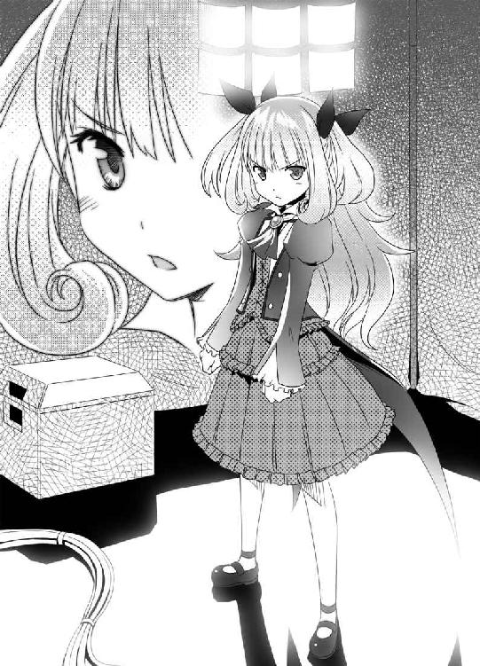
「あたしはな、貴様みたいな、力を持っているにもかかわらずそれを全く役立てず無為に時間を浪費する人間が大嫌いなんだ」
「............」
「わかったら、それを肝に銘じろよ」
と、リリカは思い出したように付け加えた。
「自動外装の使用許可も今出しておいた。勝手に持って行け」
「ありがとよ」
「礼を言うなら帰ってからにしろ。言っておくが、これで貴様が失敗したら、あたしのクビも飛ぶんだぞ！」
「そいつは悪いな。じゃぁ、その時は俺が介錯してやるよ」
「ふざけてないでさっさと行け！ 時間はあまりないぞ！」
シッシッと、猫を追い払うように手を振るリリカ。ジンは、マイペースにその場から去っていく──それと入れ替わるようにして、リリカの副官がやってきた。
「部長、本部からです。参謀長が、部長を出せと、えらい剣幕で......」
「あぁ、わかっているさ」
リリカは、これから参謀長と会話することを思うと憂鬱な気分になった──だが、それはやらねばならないことだ。
──せめて、あのゴクツブシが戦う間くらいは、参謀長を食い止めないとな──
リリカは、思う。ジンのために自分が苦労するというのははなはだ不愉快な話だが、あんな男でも一応は、自分の部下だ。上司の自分が踏ん張らねばなるまい。
「よし！」
決心すると、リリカは、テーブルの横にあるクーラーボックスからビンを取り出した。純白の液体がなみなみと入ったそれは、牛乳ビンである。
ビンのふたを開け、腰に手を当て、クピクピと一息に飲む。
「......ぷはぁっ！ これだなっ！」
牧場から直接取り寄せた牛乳だ。濃厚でとても美味しい。リリカも、元気が湧いてきた。
「さぁ、参謀長と回線をつなげ！」
気合いを入れ直し、リリカは、参謀長との戦いに身を投じた。
なお──この後、リリカは猛烈にトイレに行きたくなって、後悔することになる。
ジンが隣のテントへ行くと、すでに話が伝わっていたのか、整備班が自動外装を手渡してくれた──大型のトランクのような外見。取っ手部分のスイッチを押すと、トランクが自動で展開し、ジンの全身を包み込む──ヘルメットが頭部をおおうと、全自動で電源が入り、モニタが明るくなる。ジンの網膜パターンを読み取って本人認証を行い、ＯＳが起動した。
ジンは傍らの武器ラックから、黒刀を一本選んで引き抜いた──余計な武器はいらない。今のジンなら、使い慣れた黒刀一本で十分だ。
ジンはそのまま現場へと進もうとしたが、それを呼び止める声があった。
『待て、ジン。僕も行くぞ』
キョウスケである。ジンが振り返るまでもなく、横に、やはり自動外装に身を包んだキョウスケが並んだ。
『なんだ、キョウスケ。なにしに来た？』
『貴様が飛び出すと聞いたからな──貴様一人行かせるわけにもいくまい』
『いや......おめぇ、マジで状況わかっているのか？』
常識で考えるなら、ジンの行動は自殺も同然だ──だが、キョウスケは首を振った。
『僕だって多少は後悔しているけど──貴様が、なみなみならぬ覚悟で、あの場所に行くというのは、僕にもわかった。となると、僕ももう止めない──だから僕も行く！』
キョウスケが力強く宣言した──まぁ、いいけどな、とジンもうなずく。
『まぁ、おめぇがそう言うなら、俺も止めねぇけど......』
『あぁ......僕は、アイさんと、まともに会話さえしないまま別れるなんて納得できない！』
拳を握りしめて叫ぶキョウスケ。
『僕はアイさんに会って、その本心を確かめる！ そのために、あの戦場に赴くのだ！』
力説するキョウスケ──ジンは、この思いこみの激しい同僚になんと声をかけるべきか、迷ってしまった。
『あぁ......なんだ？ アイが近くにいるかもしれねぇって確かに俺は言ったけど、絶対いるかどうかはわからねぇぞ』
『それでもだ──なにもしないまま、僕は座して待つことなどできない！』
完全に自己陶酔にひたっている──こうなったキョウスケには何を言っても無駄だな、とジンも諦めた。好きにさせればいいだろう。手助けしてくれるなら、断る理由はない。
『じゃぁ、行くぞ』
『あぁ、わかった──って、なんで貴様が仕切ってるんだ！』
『細けぇこたぁ、どうでもいいんだよ』
こんな状況でも普段の調子を崩さず、二人は進んでいった。
自動外装の全身には、生体電位センサーがついている。それは人体の電気信号を的確に読み取り、着用者の次の動作を正確に把握する装置である。自動外装は予測される次の動作を最大限サポートすべく、各関節部の超電導モーターを動かし、人体を、加速させる。
そのシステムにより、着用者は短距離走者の世界記録を超える速度で長時間走り続けることさえ可能である──ジンとキョウスケ、二人は常識外の速度で山を駆け抜けていた。
『現場まで、約八キロメートルか』
ヘルメットのモニタに映し出されていく情報を確認するジン。
巨大九十九神は、『葬儀屋』の部隊と六時間前に交戦した後、この山中から動かなくなった。現在、この山周辺を『葬儀屋』は全力で封鎖している。
『......このまま順調にいけば、後十分足らずで警戒区域だな』
『ジン、油断するな。剣轟も、まだ近くにいるはずだ』
そう。剣轟たち──刀狩りは死亡したものの、残るレオンと、金剛。この二名は健在だ。巨大九十九神との交戦に追われた『葬儀屋』のスキをつき、剣轟二名は姿をくらませている。だが、現場の包囲網を突破した形跡がないので、周辺に潜伏している可能性が高い。
『ジン、貴様も何か策があるんだろう？ この後どうする気だ？』
『あぁ......このまま突っ込んで、敵がいたらブチ殺して進む』
『策なしか！』
『なんとかなるさ』
いつも以上の無責任さで軽くジンが言った瞬間──二人の視界の中、モニタに真っ赤な文字の警戒警報が表示された。
『敵接近だと!?』
『なん......ゲハッ!!』
キョウスケの体が森の奥へと飛ばされていく──ジンは足を止め、刀の柄に手をかけながら、周囲をうかがう──木の間から、二人の人影が現れた。
「ほぅ──強い『魂』を感じて見に来てみれば、セメタリーの犬だったか」
「............」
現れたのは、レオンと金剛──二人の剣轟である。
二人とも剣と斧、抜き身の武器を構えて臨戦態勢だ。すでに丸一日が経過しているが、この二人には疲労の色が感じられない。バケモノじみた体力だった。
「貴様は──そうか。あの時の道化だな？」
レオンは、自動外装姿のジンの正体に気づいた様子だった。
「驚きだな。貴様がこれほどの『魂』の持ち主だったとは──それに、あの傷でしぶとく生き延びるとは、どこまでも俺を楽しませてくれる男だ」
嬉しそうに──まるで、獲物を見つけた獣のように、レオンは笑った。
「歯ごたえのない連中ばかりで飽き飽きしていたところだ。今度こそ、俺の手で貴様を殺すとしよう──金剛！ お前は手を出すなよ」
「......承知......」
レオンが刀を片手にジンに近づいてくる──ジンは、問いかけた。
『こんなところで油を売ってていいのか？ お前は、あの刀が目的だったんだろう？』
「確かにそうだ。だが刀狩りが死んだせいで予定が狂った」
レオンが答える。
「あんなデカブツになるとは俺にも予想外だった。俺の力ならば腕ずくで破壊することは可能だが、それであの刀を砕いてしまっては元も子もない」
つまり、剣轟連中も手を出しかねていたということか──ジンは、深く考えずにここまで来たが、ヨミを助ける具体策がないことに今更気づいた──が悩んでいるヒマはない。
「行くぞ、道化。俺を楽しませてみせろ！」
ガギンッ
鋭いレオンの切り込みを、ジンは黒刀で受け止めた──とんでもない馬鹿力だ。ジンは受け止めただけなのに、全身を痺れるような衝撃が駆け抜けていく。
「面白い、面白いぞ道化！ 今の一撃は、並の使い手なら一刀両断にできる技だ！」
『うるせぇ、ごたくはいらねぇ──キョウスケの仇、さっさと討たせてもらうぞ！』
『僕を勝手に殺すなぁぁぁぁぁ!!』
叫び、キョウスケが木々の間から飛び出してきた。
『生きていたのか！』
『当たり前だ！ そもそも自動外装の生体反応を見れば、僕が無事だとわかっただろう！』
『なぁに、ちょいとばかり場の雰囲気を盛り上げただけだ』
『いらんわ、そんな雰囲気！』
「金剛！」
レオンの声に反応し、静観していた金剛が、キョウスケに襲いかかった。
『話しているヒマはないか』
ギャリンッ
金剛の持つ巨大な斧と、キョウスケの黒刀がぶつかり合った。
『キョウスケッ！』
『ジン──こいつは、僕に任せてもらおう！』
キョウスケが、金剛と相対しながら叫ぶ。
『この程度のザコ、僕ならすぐ倒せる──すぐ片付けて、返す刀で貴様と戦うそっちの剣轟も僕が倒す！ だから貴様は、僕が戻るまで死ぬんじゃないぞ！』
『安心しろ。俺はそう簡単にゃ、死なねぇよ──おめぇこそ、勝手に死ぬんじゃねぇぞ』
『当たり前だ！ 僕は、アイさんにもう一度会うまでは、絶対に死なない！』
叫ぶキョウスケ──こいつ、微妙に死亡フラグが立ってるなぁ、とジンは内心思った。
『よし、キョウスケ。おめぇの冥福を祈る！』
『勝手に殺すな！』
『違った、おめぇの健闘を祈る！』
『最悪の言い間違いだな！』
ジンはレオンへ、キョウスケは金剛へ──それぞれの相手に、二人はぶつかっていった。
ジンは、レオンと激しく斬り結び、ほぼ互角に戦っていた。
「道化、やはり貴様は面白い！ 俺とここまで互角に戦えるとはな！」
『互角じゃねぇよ』
最高機動速度でジンは動いているのに、レオンはそのジンと生身で互角なのだ。これだから、剣轟という連中は戦いにくい、ジンは舌打ちした。
ギャンッ、ギンッ！
木を蹴り、宙を跳び、二人は、激しく何度もぶつかり合う。速すぎて、常人ならば目で追うのも難しいだろう。
ギシッ。
ジンの黒刀から不吉な音が響いた......レオンとの激しいぶつかり合いで、ジンの刀は刃がボロボロになっていた。対して、レオンの獲物には刃こぼれ一つない。腕の差、刀の質の差──全てが、致命的だった。このままだと、まもなくジンの黒刀は砕ける。
「隙があるぞ！」
ジンの動きがわずかに鈍った瞬間、レオンがジンの胴体を、足で思いっきり蹴り飛ばした──ジンの体が、サッカーボールのように吹っ飛ばされる。
地面を何度も転がって、ジンの勢いはようやく止まった──ただの蹴りだというのに、信じられない威力だ。超衝撃吸収剤で覆われたプロテクターが、砕けてしまった。
「さぁ、道化よ。俺をここまで楽しませた褒美だ。貴様を我が奥義で葬り去ってくれる！」
レオンが、刀を頭上に掲げた──その全身からオーラが立ち上り、刀へと集中していく。
「我が奥義──獅子心剣終の太刀──獣王咬牙撲滅波ぁぁっ!!」
レオンが、刀を振り下ろす──その先から、すさまじいエネルギーの固まりが迸った。
輝く巨大な光の固まり──それは、巨大な顎を開く獅子の顔にも見えた──エネルギーの奔流が、周辺一帯ごとジンの体をも呑み込み、大爆発を起こす......
「くくくくく、貴様如き道化にはもったいなさすぎる技だ。感謝するのだな」
レオンは、満足げに頷き、腰の鞘へ刀を戻した。レオンの目の前の地面には巨大なクレーターが穿たれている。
直径数百メートル以上のクレーター──地面がひっくり返り、木も岩も、なにもかもが、消滅していた。桁外れの威力である。
「ふん......跡形もなく消し飛ばすつもりだったが、まだ残っていたか」
クレーターの中に、ジンは倒れていた──もはやボロボロである。黒刀は折れ、体を覆う自動外装はかろうじて残っているというレベルで、所々が砕けて素肌が見えていた。全身傷だらけで、自動外装の隙間からダクダク鮮血が流出し、地面に血溜まりを作っていた。
「俺としたことが、少し熱くなりすぎたか......ん？」
レオンは、異変に気づいた。妙だ。おかしい。ジンは明らかに致命傷だ。どう考えても、あの傷で生きているはずがない──なのになぜか、ジンの『魂』が減っていない。
「......今のが、おめぇの必殺技か？」
低い声が問いかけてきた──レオンは、背筋に冷たいものを感じた。それほど、目の前の光景が信じられなかったからだ──レオンの必殺技の直撃を喰らい、どう考えても瀕死のはずのジンが、ゆっくりと、立ち上がったのである。
「だとしたら──おめぇの技じゃ、俺を殺すことはできねぇよ」
ジンはフェイスガードを押し上げ、ペッと口に溜まった血を地面に吐き捨てた。
「バカな......貴様、なぜ生きている！ その傷で、動けるはずがない！」
「あぁ、確かに普通なら死んでいる──だけど、俺には死ぬ資格がねぇからなぁ、この程度じゃ死んでやることはできねぇんだよ」
ジンはボロボロになって使い物にならなくなったヘルメットを脱ぎ、投げ捨てた。
「まったく、自動外装をボロボロにしやがって──これ壊すとリカに怒られるんだぜ？」
軽い調子でぼやくジン──血まみれなのに、ジンにはダメージを受けた様子がない。
「そんな......貴様、その眼は！」
ヘルメットを外し、レオンは初めてジンの眼を見た。虹色に輝くその眼を──
「バカな！ 虹色の眼──霊皇煌眼だと!! 霊皇は、四年前に死んだはずだ！」
「死んでねぇよ──言ったはずだ。俺には死ぬ資格がねぇ。だから絶対に死なねぇ」
「黙れ黙れ黙れ、霊皇など、もはやこの世に存在しない！ 貴様はニセモノだ！」
刀を構え、血走った目でジンを睨むレオン。
「今度こそ、この手で貴様を葬る！」
刀を正面に突き出し、レオンは、弾丸の如く、ジンに正面からぶつかっていった。ジンは、かわそうとさえしない。
ザシュッ
レオンの、刀が、ジンの胸を、貫通した、串刺しとなる、ジン。
「は、はははははは、どうだ！ 今のは確実に貴様の心臓を潰したぞ！ 今度こそ......」
「......心臓を潰した──それがなんなんだ？」
ギロリ──ジンの、七色に輝く目が、至近距離からレオンの眼を捉えた。ヒッと、悲鳴を漏らすレオン。
レオンは、反射的に逃げようとした。なのに、動けない。手が、刀から離れない。足が、一歩も動かない。ただ、ジンに見つめられている、それだけでレオンは、動けなかった。
「言ったはずだ。俺は死なねぇ──人間では霊皇を殺すことはできねぇ」
「う、あぁぁぁぁぁぁぁぁぁ!!」
レオンは、絶叫した。恐怖と絶望が、レオンの心を埋め尽くす。もはやそこには、絶大な力を振るった剣轟の姿はなかった。そこにいるのは、恐怖におののく一人の男だった。
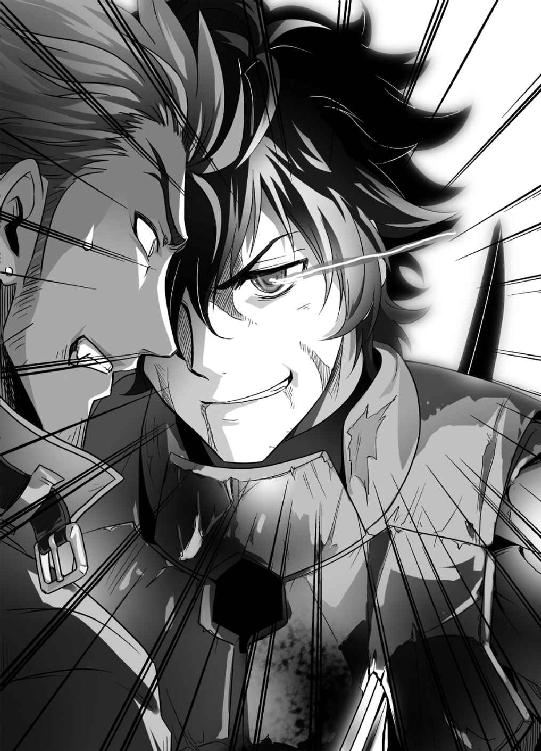
「......嗚呼霊皇よ、其は遍く天壌を知ろし食す神の御名也」
ジンが、低い声で呟いた。途端、ジンの、目の輝きが強まる。
「失せろ。そして二度と、永遠に俺の前に姿を見せるな！」
その言葉は絶大だった。人間では決して逆らえない強制の力が宿っている──レオンは、すぐさま、全力で駆けだした。ジンの言葉に、逆らう気も起きない。ただ、一刻も早く、その場から立ち去らねばならない──今の彼を支配しているのはその言葉だけだった。
「......ちっ、無駄に時間を取られた」
ジンは舌打ちする。もう、猶予はあまり残ってない。急いでヨミを捜さねば......
「グギャァァァァァァ!!」
断末魔の、悲鳴が響き渡った。
なにごとかと振り返ったジン──たった今逃げていったレオンが、殺されていた。
突如出現した漆黒の刃が、無防備なレオンの首筋を斬り裂いていた。首から血を盛大にまき散らしながら、レオンは、ドウ、と地面に倒れた。
それが──セメタリー日本支部を震え上がらせた剣轟の、あっけない最期だった。
ブワァンッ
機械音が響き、ステルス偽装が解除された。倒れたレオンの傍らに、自動外装が姿を見せる。黒刀を片手にした長身は、レオンの返り血で赤く汚れていた。
「おめぇ......」
ジンは、呟く──今この現場に残っている『葬儀屋』は、ほとんどいないはずだ。そして──レオンを躊躇なく殺したその剣閃、その動きは、ジンの知っているものだった。
「おめぇ......アイか？」
『............』
漆黒の自動外装は無言だった。ただ、ヘルメットの奥からジンを見つめるだけだ。
ふっと、相手の方から視線を外した。
なにも喋らないまま、漆黒の自動外装はジンに背を向けると、そのまま風のような速さで山の奥へと消えていった──その方向は、巨大九十九神のいる方角だった。
「待てよ──チッ、追うしか、ないか」
他に選択肢もなく、ジンもまた、山の奥へと走っていった。
『......もう、時間だな、鞠小路』
「そんな！ まだです！ もう少し時間は残っています！」
『これ以上待っても無駄だ──できるはずがない』
リリカと参謀長の会話は続けられていた。だが、状況はリリカに不利だった。
『鞠小路。お前がどうしてもと言うから、私は三十分だけ待ったが、なにも変化はなかった──霊皇だかなんだかしらんが、ムリだったのだよ』
リリカは歯がみした──突入していったジンは突っ込んだきりなしのつぶてだ。あいつは鉄砲玉か、と内心毒づきつつも、その焦りを今顔に出すわけにはいかない。
「あの、部長......」
「なんだ！」
部下が何か報告しに来た。朗報か？ リリカは勢い込んで聞き返す。
「ゴクツブシから連絡があったか!?」
「いえ、その......あの男の自動外装の反応が消えました。破損したようです」
「ふっざけるなぁぁぁぁぁ!!」
思わず取り乱し、イスを蹴り飛ばし、逆に自分の足に激痛が走って片足抱えて飛び跳ねるというコントのようなマネをリリカは披露した。
机の上で手を組んだ参謀長が静かに告げた。
『どうやら、あの男は失敗したようだな？──北部太平洋艦隊はすでに沿岸部で展開している。重量子融合弾の発射態勢もまもなく整う。あれさえ撃ち込めば──全ては終わる』
「参謀長──まだ、終わってはいません」
リリカは、足の痛みで少し涙目になりつつ、必死にマジメな表情を取り繕った。
「あたしの部下は──この程度で終わりはしませんよ。まだ、希望はあります」
『そういうのは希望的観測と呼ぶものだ。これ以上被害を拡大させるわけにはいかん』
「ですが、目標は休止状態です──現状、被害の拡大は最小限に抑えています」
『永遠に動かない保証などない』
「最終手段に出るのは動き出してからでも間に合うはずです！」
『話にならんな』
「話にならないのはそちらでしょう！」
ダンッ、リリカが机を叩いた。
「あたしには、本部の意向が理解できません──中間のあらゆる手順を飛ばして、いきなり艦隊を派遣して核兵器を撃ち込むなど、異常です！」
『決定事項だ』
「本部には鍛冶山鉄舟の遺作を、一刻も早く破壊したい理由がなにかあるのですか？」
『勘ぐりすぎだ。そもそも貴様が踏み込んでいい領域ではない』
「鍛冶山鉄舟には──なにか、セメタリーにとって不都合なことでもあるのですか？」
『......私はなにも知らんし、仮に知っていたとしても、お前に教える気はない』
参謀長が、強引に話を打ち切ろうとしてきた。
『間もなく発射態勢が整う。お前は、現場周辺から部隊を撤退させておけ。話は以上だ』
「参謀長！」
通信が切られた──真っ黒なモニタを前に、リリカはもう一度机を叩いた。
「クソッ、あたしの力じゃ、これくらいが精一杯か！」
「あの、部長......」
「今度はどうした！」
「観測班からの情報です。どうやら、あの男が剣轟と交戦し、それを倒したらしいと......」
「ゴクツブシが？」
やはり──やってくれたか、リリカは思った。ジンがあの状態に──霊皇に目覚めたなら、剣轟などもはや敵ではないだろう。当然の結果だ。
「よし、もう一度参謀長につなげ！ 今の話を使えば、後十五分は延ばせる！」
「了解です」
勢い込んでリリカは言う──が、立ち去ろうとした部下を呼び止めた。
「待て──あたしは行かなきゃいけないところがあるから、その間留守番していろ！」
「はぁ......かまいませんが、どちらへ？」
「うるさい！ いいからそこにいろ！」
強引に部下を残して、リリカは勢いよく飛び出した。
──良かった、トイレに間に合いそうだ──
──レオンにだいぶ時間を取られたものの、ジンは目標の場所にたどりついた。
山の中腹。木々のとぎれた広場のような場所に、それはいた──巨大な、金属の固まり。刀剣をはじめとする、古今のあらゆる兵器が集合してできた、巨大な九十九神──今、それは、広場の中央に、眠るようにうずくまったまま動かない。
ヨミの姿は、見えない。だが、ジンはほぼ確信していた。最初にヨミと出会ったときと同様、あの巨大九十九神の体内に、ヨミはいる──間違いないはずだった。
先にこっちへ来たはずのアイ──とおぼしき自動外装の姿はなかった。が、今はそちらに気を取られてもいられない。優先すべきは、目前の巨大九十九神だ。
ギギギギギギギ......
ジンが近づくと、うずくまったまま、九十九神は頭を持ち上げた──金属でできた頭部は、それだけで大型船舶並みの大きさがある。嚙みつかれれば、人間など一瞬でミンチだ。
ギギギギギギ
軋むような音を、九十九神が漏らす。ジンはさらに一歩前に出た。
「怯えるなよ......別に、おめぇを殺しに来たわけじゃねぇんだからよ」
『近ヅクナ』
無機質な声が響く──最初のときも、九十九神が喋っていたことをジンは思い出した。
『近ヅクナ......私ハ、黄泉ヲ護ル。ソノ為ニ作ラレタ存在』
「ヨミを護る？ おめぇ、そんなことをして、本当にヨミを護れると思ってんのかよ？」
『近ヅクナ！』
バンッ
九十九神の体を構成する銃器、その一本がジンの足もとを狙って発砲してきた。
警告の発砲だろう。だが、ジンはその程度の銃弾など気にせず、さらに前に出た。
『近ヅクナト、言ッタ！』
ババババンッ
無数の銃口がいっせいに火を噴いた──大部分は、ジンの周囲の地面に命中したが、いくつかはジンに命中した。
「痛ぇじゃねぇか──気をつけろよ。俺じゃなきゃ、死んでたぜ」
あくまで軽い調子のまま、ジンはさらに前に出た。
『私ハ黄泉ヲ護ル。ソノ為ニ存在スル』
『あぁ、わかったよ......なら、これでいいか？』
ジンは、自動外装の着脱スイッチを押した──残っていた自動外装全てが破棄され、ジンは薄いインナースーツ姿になった。武器もなく、まさに寸鉄も帯びぬ姿だ。
「見ろ。俺はこの通り丸腰だぜ。これでも、まだ俺を攻撃するか？」
『......オ前ハ、ナンダ』
九十九神が尋ねる。
『オ前ハ、黄泉ノナンダ』
攻撃の手は止まった。九十九神は、静かにジンに問いかけてくる。
『オ前ニトッテ、黄泉ハナンナノダ』
「さてねぇ、なんなんだかな」
とぼけた調子で、ジンはつぶやく。正直、自分が教えて欲しい解答だった。
「関係なんて、言葉で簡単に言えるものじゃねぇ──けど、今は、あいつのことを俺が護ってやりてぇ、助けてやりてぇ──そう思っているのは、事実だ」
『オ前ニソノ覚悟ガアルノカ』
「覚悟？」
『オ前ハ、黄泉ガ死ヌソノ時マデ、最期マデ黄泉ヲ護ルトイウ覚悟ガアルノカ』
「それで俺が、覚悟があるとかあっさり答えたら、おめぇはそれを信じるのか？」
『............』
「残念だが、俺なら逆に信じられねぇ。本当に覚悟があるなら、そんな言葉は軽々しく口にはできねぇな」
『ナラバ、オ前ハドウスル』
「決まってるだろ──余計な言葉なんざいらねぇ。口数の多いやつってのはロクなもんじゃねぇ──男なら、態度ってもんで見せてやりゃぁ、そいつで十分なんだよ」
『............』
ドスン
ジンの目の前の地面に、九十九神の巨大な頭が落ちてきた──その巨大な顎が、ジンの前で開かれる。
ジンに嚙みつこうとしているわけではなさそうだ。九十九神は口を開けた体勢のまま、動こうとしない──巨大な口は、ジンを誘い込む門のようにも見えた。
ジンは、迷わず前に一歩踏み出し、その顎の中に踏み込んだ──中は、薄暗いが、完全に真っ暗ではなく、ボンヤリとだが、微かな光があった。
洞窟のようになっている口の中から、さらにノドの奥へ踏み込む──
やがて、ヨミが見えた──ヨミは、ボロボロで血で汚れてはいるが、ケガはないようだ。だが、目を閉じて横たわったまま動かない──しかも、ヨミを護るように、透明な球体が彼女を包み込んでいた。
「こんなところにいたのか──ヨミ、迎えに来たぞ」
ジンはさらに迷いなくヨミに近づいた。だが──
『......来ないでください』
ヨミが体を起こした──そして、怯えるように、ジンから遠ざかっていく──もっとも、球体の中にいるので、すぐ逃げ場はなくなったが。
『わたしは......もう、ジンさんに、合わせる顔がありません』
顔をうつむけたまま、ヨミは語る。
『わたしは──わたしは、わたしのワガママにジンさんを捲き込んで、あんな、大ケガまでさせてしまいました──』
「あんなもん、ケガのうちに入らねぇよ。実際俺は、今ピンピンしている」
『それでも......わたしが、父の刀を持って山を出たから──それを巡って、たくさんの人が争って、死にました──わたしは、あの山から、出るべきじゃなかったんです......』
「......誰がそんなこと決めた？」
ジンは、ヨミのいるガラスみたいな膜に手をかけた──膜はとても硬く、どんなに力を込めても、ピクリとも動かなかった。
「前も言っただろう？ 他人の顔色なんかいちいち気にしなくていいんだよ。おめぇがやりてぇことがあるなら、好きにすりゃぁいいんだ。ワガママが言えるのは、ガキの間だけだし──逆を言えば、ワガママも言えねぇガキが大人になっても、ロクなもんじゃねぇ」
『それでも、わたしは......もう、イヤなんです......これ以上、誰かが傷つくのが......』
ヨミは、一人うずくまって、泣いた。ジンは、辛抱強く続ける。
「まぁ、聞けよ、ヨミ──別におめぇは、なにも間違ったことはしちゃいねぇ。おめぇがオヤジの形見の刀を持っているのも、それをほしがるバカどもが勝手に戦いあうのも──全部、周りの事情だ。おめぇはこれっぽちも責任を感じるこたぁ、ねぇんだよ」
『......そう、かもしれません』
ヨミは、頷く。
『でも、そうだとしても──この世界に、わたしの居場所がどこにもないのは事実です』
「そんなこと......」
『わたし......本当は、父と、血が繫がってないんです』
ジンを遮り、ヨミが告白する──それはジンも気づいていたことだ。キョウスケから、鉄舟に家族はいないと聞いていた──セメタリーの情報だ。信用度は高い。
『もともと、わたしと父は顔も全然似ていなくて──ある時父に尋ねたら、血は繫がってないと答えてくれました』
でも、とヨミは続ける。
『でも父は──それでもわたしは、自分の娘だと言ってくれたんです』
「なら、いいじゃねぇか」
ヨミが不安になるようなことはどこにもないように思える。
『わたしは......怖かったんです。父はそう言ってくれても、わたしは、そこにいていいのか──父の隣にいていいのか、わたしの居場所はそこにあるのか──せめて、父の役に立とうと、家事は全部引き受けましたし、父の鍛冶仕事も必死になって覚えました』
そう──ヨミの根幹は、そこにあるとジンは気づいた。
ヨミは、異常なほどに義理堅い──ジンがなにも言わなくても、半日ほどの時間で、ジンの家のあらゆる家事を一手に引き受け、こなしてしまうほどに。
ヨミは、常に不安なのだ。素性のわからない自分の居場所がそこにあるのかどうか、不安でたまらないのだ。だから、自分の居場所を作ろうと、他人に必死に尽くそうとする――しっかりしているように見えるのは全て、臆病な自分を隠すための仮面なのだ。
『でも、結局父は、わたしを置いて、死んでいって、それで......また......ジンさんも......』
口ごもる、ヨミ。
『......だから、もう、いいんです......もう、これ以上、ジンさんにも、誰にも迷惑はかけたくないんです......放っておいてください』
「......いいか、覚えておけよ」
ジンは言う。
「寂しくないって言うガキは本心じゃ寂しがってるものだし、自分を放っておけって言うガキは本心じゃ構って欲しいんだよ！」
ジンは、ヨミを指さした。
「もうご託はいらねぇ──おめぇ、そうやって、自分が全部の苦労と不幸をしょいこんで、自分さえガマンすりゃぁ万事丸く収まるなんて思ったら大間違いだぞ！」
ジンは、本気で怒っていた。予想外のジンの反応に、ヨミは、膜の中で目を瞠った。
『え？ ジンさん？』
「こいつはなぁ、くだらねぇ昔話だ。つまらねぇ内容だけどちょっと聞け」
『？』
ジンは語った。
「昔──あるところにな、とんでもなく強い男がいた。そいつは、霊皇だとかたいそうな名前で呼ばれて、どんな強い奴もひねり倒して、どんなことでもできるっていう神様みてぇな奴だった──そんでそいつには、大切な奴がいた。その男は思ったんだ──自分の力さえあれば、どんな危険からも、そいつを必ず護ることができるってな」
『............』
「そんである時、絶対に負けられない戦いで──そいつは負けた。それまで全ての戦いで勝ってきたのに、たった一回負けただけで全部がダメになった──そいつは力を失い、仲間を失い、親友を失い、家族を失い、そして、護ると誓ったその相手さえも失った」
『............』
「だから、その時そいつは悟ったんだ──力があるかどうかなんて関係ねぇってな。できることは力がなくたってできるし、できねぇことは、どんなに力があったってできっこねぇ──それが、そいつが、自分の全てを代償に学んだ、たった一つの教訓だったのさ」
『そんなこと......ありません』
「いや、実際問題、世の中の大半はそういうもんだ」
だから、ジンは続けた。
「だからなぁ、俺ぁもう、アクセク働くのはやめにしたんだよ。どんなに力があっても、どんなに努力したって無茶なことはある。だったら、別にがんばらなくたっていいじゃねぇか」
『そんなことないです。努力するからこそ、できることだって、世の中にはあります』
「ところがだ──現実問題、なにもしないでダラダラしてたって特別困りゃぁしねぇ──世の中そういうもんだ。人間、自分一人生きていくくらいどうとでもなるのさ」
『そんなの、間違っています。たしかに無茶なことはあるかもしれませんけど、だからなにもしなくてもいいなんていうのはおかしすぎます！』
「でも、今のおめぇがやってることだって似たようなもんだろう？」
ジンが、告げる。
「他人に迷惑かけたくねぇなんて理由にすがって、自分がガマンすりゃぁいいって自己陶酔に浸って──なにもかもからケツに帆かけて逃げ出して──それで本当にいいのかよ！」
『それは......』
「ヨミ──俺はな、これでも後悔したんだ──俺が死にかけた程度でおめぇをそこまで追い詰めるとは思わなかった──こんなことになるくれぇなら、俺ももうちっと、マジメに戦ってれば良かったって、思ったんだ」
『ジンさん......あの時、ジンさんは、自分が死んでも誰も悲しまないって言いました──それは間違っています。少なくとも、わたしは、ジンさんが死んだらとても悲しいです』
「そう、か──なら、もう答えは決まってるな」
ジンは、頭をかき、結論づけた。
「ヨミ──そこから出てこい。そんで、帰るぞ、俺の家に」
『いいん、ですか？ わたしが、また、あそこに戻っても』
「居場所がねぇだとか、そんなくだらねぇこと言うな。誰だって、どんなロクデナシにだって、自分だけの居場所ってのは必ずあるんだよ──それでもまだ気になるって言うなら、俺の家がおめぇの居場所だ。俺がそう決めた！」
『で、でも......』
「でももかかしもねぇよ。ならこう言やぁいいのか？ 知っての通り、俺はどうしようもねぇロクデナシの怠け者だ。俺にゃ、近くでケツ叩いて背中を押してくれる奴がいねぇとダメなんだよ──おめぇ、その役目、引き受けちゃくれねぇか？」
『..................え？』
「おめぇは、俺と違ってしっかりしてるからなぁ──おめぇになら、頼めると思うんだ。俺と一緒に、暮らさねぇか？」
『え..................ジ、ジンさん......それって、まさか......』
ヨミが真っ赤な顔でうつむき、モゴモゴ口の中で何かつぶやいている。
『そんなの......嬉しいけど......でも、急には......その......まだ......』
「で、どうなんだ？ おめぇが、イヤだってなら、そりゃ......」
『イヤなんかじゃありません！ でも......本当に、わたしでいいんでしょうか？』
「ならはっきり言ってやる。おめぇじゃなきゃダメだ──おめぇがこのままいなくなったら、俺ぁ今度こそ、どうしようもねぇロクデナシになっちまう」
『わ、わかりました......ふ、ふつつか者ですが、よろしくお願いします』
その場で正座し、両手をついて、深々と礼をするヨミ──なんでこいつ、結婚のアイサツみたいな言い方なんだ──ジンは内心そう思ったが、深くは突っ込まないことにした。
「話は決まったな──帰ぇるぞ」
『で、でも、わたし、ここから出られなくて......』
ヨミの体を包む透明な膜。それをどうにかしなくては、どうしようもない。
「あぁ、まかせろ。そんなもん、ぶった斬ってやるよ」
『で、できるんですか？』
「心配すんな。おめぇには傷一つ付けたりしねぇよ」
ジンは周囲を見回す──黒刀はすでにないが、幸いここは巨大九十九神の体内。周囲に刀はいくらでもある。適当な得物を求めて視線を動かしたその時──
『許サン』
声が、響く。
『オ前ハ、黄泉ヲ不幸ニスル。オ前ニ、黄泉ハ渡サン』
その声、金属をすりあわせるようにして響くその声は、九十九神のものだった。
ギャギャギャギャギャギャギャ
『ジンさんっ!!』
ヨミの悲鳴──周囲の刀が一斉に逆立ち、四方から、ジンを串刺しにしてきた......ジンの立つ空間そのものが凶器に変わったようなものだ。ジンの全身に刀が突き刺さった。
『いやぁぁぁぁぁぁ!! 止めて！ ジンさんは違うの！ だから、止めてください！』
『黄泉ヨ。私ハオ前ヲ護ル。ソノ為ニ生ミ出サレタ存在。アラユル外敵カラオ前ヲ護ル』
声が辺りに響く──ジンは、少し体をひねった──それだけで、全身の傷口が広がり、血の流出が激しくなる──マズイ、すでに失血量が、致命的だ。さすがのジンも、血が足りなくなれば、意識がなくなる......そうなっては、全て手遅れになってしまうだろう。
「おい......ふざけんじゃねぇぞ、この鉄クズ野郎」
ジンは、気力を振り絞って前に出た。傷口が押し広がり、血が流れ出る。全身を、この世のものとも思えない激痛が支配する──が、そんなものはどうだってよかった。
「適当なこと言いやがって......おめぇ、本気で、ヨミを護る気あるのかよ！」
『私ハ、黄泉ヲ護ル』
「確かにおめぇは、強ぇかもしれねぇ......けど、それでヨミが幸せになれるのか！」
『私ハ、黄泉ヲ護ル』
「たった一人残されたヨミを世界のど真ん中に放っぽりだして、なにしたらいいかもわからねぇアテもねぇ根無し草暮らしさせて、その挙げ句バカな連中に命を狙われて、危なくなったら近づく者全員まとめて皆殺しでめでたしめでたし──んなわけねぇだろっ!!」
『私ハ、黄泉ヲ護ル──ソノ為ダケニ作ラレタ存在』
「おめぇが、元凶じゃねぇか！ おめぇなんかを持っていたせいで、ヨミは、ここまで苦労をしょいこむことになったんじゃねぇか！」
『私ハ、黄泉ヲ護ル』
「いい加減にしろよ、クソッたれ......おめぇなんかにヨミは任せておけねぇ！ ヨミは、俺が預かる！」
ジンは、強引に前に進んだ──床に当たる部分の刃が逆立っており、剣山のようになった地面を、ジンは進む──一歩ごとに、足が穴だらけになっていく。ヨミのいる場所まで、わずかな距離のはずなのに、とてつもなく遠く感じた。
『ジンさん！ 無茶です！ もうやめてください！』
「うるせぇ、だまってろ」
血まみれで、体は穴だらけ。常人ならとっくに動けないはずだ。なのにジンは、傷を気にせずヨミに近づいていく。
「無茶かどうかは俺が決める──おめぇは、気にしねぇで、そこでどかっと座って待ってろよ──俺が、なんとかしてやるって、言ってるだろ」
『でも、ジンさん、大丈夫なんですか？』
「あたりめぇだろうが......俺ぁ、この程度で死にゃぁしねぇよ。ちょうど、ダイエットしたかったところだ。血が抜けて体が軽くなって、ちょうどいいくれぇだ」
『そんな......』
「ほら、後一歩──だ」
ついに、ジンはヨミのいる膜にたどり着く。フラッと体がゆれ、膜に手をつくと、膜の表面に真っ赤な手形がついた──ヨミが、悲鳴を上げる。
『いやっ！ やめて！ もうやめて！ この人は、ジンさんはいいの！ わたしの、大切な人なの！ だからお願い、もうやめてぇぇぇぇ!!』
『黄泉ヨ。私ハ黄泉ヲ護ル──ソノ男ハ必ズ黄泉ヲ不幸ニスル。決シテ認メラレナイ』
「うるせぇ!!」
ジンは、怒鳴った。
「ならてめぇにヨミを幸せにできるってのか！ その結果がこれか！ ふざけるな！」
『私デハ黄泉ヲ幸セニデキナイ』
九十九神は、認めた。
『故ニ、私ハ黄泉ヲ幸セニデキル人間ヲ探サネバナラナイ。ダガ、ソレハオ前デハナイ』
「あぁ、確かに俺ぁ──人様に自慢できることなんて何もねぇ、つまらねぇ人間だ......」
ジンは、息を切らせた──息が苦しい。内臓も傷ついた。それでも──ジンは続けた。
「それでもなぁ──ヨミには、居場所が必要なんだよ......それがなきゃ、この子は勝手に潰れちまうんだよ──俺がその居場所になってやれるなら、俺ぁ、なんだってしてやる。俺しか居場所になれねぇなら、俺ぁ、こんなことでくたばるわけにゃいかねぇ！ それをジャマするなら、おめぇがヨミのオヤジの形見だろうがなんだろうが、ブッ潰す！」
『オ前ニ、黄泉ヲ護ルコトガデキルカ？ ソノ資格ガアルカ？』
「四角も三角も関係ねぇ！ 俺がやらなきゃ誰がやるんだ！」
『私ハ黄泉ヲ護ル。ソノ為ニ存在スル』
「話にならねぇな──ヨミ、そこをどけ！」
『え!? どうする気ですか？』
ヨミが、身を縮める。
「動くな、危ねぇぞ」
ジンは、足もとから一本の刀を強引に引き抜き、その刀を構えた。
「......嗚呼霊皇よ、其は遍く天壌を知ろし食す神の御名也」
ジンの言葉と共に、その体から虹色の輝きが発せられた。その輝きは、ジンの手の刀に収束し、周囲を七色に染め上げていく。
『な、なんなんですか!?』
「動くなよっ！」
チィンッ
涼しい音色が、響き渡った──瞬間、ヨミを包んでいた透明な膜が、砕け散る。
「ジンさんっ！」
解放されたヨミが猛然と、ジンに飛びつく──危ないな、と思いつつ、ジンは刀を投げ捨て、ヨミを受け止めた。その瞬間、今まで逆立っていた周囲の刀が元に戻っていく。
「ヒドイ、わたしのために、こんなケガ......」
飛びついたジンの胸を、なでるヨミ。ジンは、痛いやらくすぐったいやら、よくわからない感触を覚えた。
「でも、ジンさん、ありがとうございます！ わたしのために、ここに来てくれて、私を助けてくれて、本当にありがとうございます！」
「......別に、てぇしたことじゃねぇよ、気にするな」
照れ交じりに、ジンはつぶやいた──次の瞬間。
ギギギギギギギ
金属の、軋む音とともに、九十九神の声が響いた。
『黄泉ヨ......オ前ハ、ソノ男ヲ選ブノカ』
「......はい」
ヨミは、はっきり頷いた。
「わたしには、ジンさんが必要なんです──ジンさんじゃなきゃ、ダメなんです！ わたしは、これから先、ジンさんと一緒に生きていくんです!!」
『............』
ヨミの決意の叫びの前に、しばし沈黙が下りた。
『......イイダロウ......オ前ニ......託ス......』
それは、絞り出すような声だった。消えゆくように、九十九神がつぶやく。
『......ダカラ......黄泉ヲ......必ズ......護レ............』
「あぁ、言われるまでもない」
次の瞬間、ガラン──音を立てて、壁が崩れた。いや、壁のようになっていた武器の固まりが、突然まとまりを失って、崩れだしたのだ。
それだけではない。天井も、床も、ものすごい勢いで崩れていく。
「やべぇな......とにかく、逃げるぞ！ 摑まってろよ」
「は、はい！」
ジンはヨミを抱え、巨大九十九神の体内から脱出を図った......
「......いててて、大丈夫か、ヨミ？」
「はい......なんとか」
そしてジンたちは、ギリギリで九十九神の体内から脱出に成功していた。
ジンたちの背後には、無数の武器兵器がうずたかく積まれ、山となっている──それはもう、九十九神ではない。それらはもはや、ただの鉄クズの山だ。
その鉄クズの山の頂点に、光り輝く刀が突き刺さっていた。刀身は七色の輝きに染まり、周囲にオーラを立ち上らせるその刀......
「あれは......」
鍛冶山鉄舟の遺作である──遺作は、武器の山の頂点に、あたかも、武器の王であるかのような佇まいで厳然と存在していた。
「ジンさん......どうぞ」
ヨミが、うなずく。ジンは、自分を指さした。
「あの刀......俺が、もらっていいのか？」
「はい......あなたになら、いいえ、あなたにしか、あの刀を渡すかたはいません」
「......そうだな」
ヨミが今まで必死に護ってきた父親の形見──それを受け継ぎ、くだらない奪い合いに終止符を打つには、誰かがそれを、所有するしかない。そしてそれができるのは──現在、ジンしかいないのも事実だった。
「まぁ、別にいらねぇけど、俺が持つしかないよな」
『いらないなら、君が所有する必要はあるまい』
ブワァンッ
機械音が響いた。ステルス偽装が解除され、山の頂上に、漆黒の自動外装が姿を現す。
『ご苦労だった、ジン──おかげでようやく、これを、手に入れることができた』
その人物は足もとの遺作を引き抜き、満足そうにうなずく──その声は、ジンのよく知っているものだった。
「おめぇ......アイか」
『無論だ。本当にご苦労様、ジン。まさかここまで都合良く事が運ぶとは、想像以上だよ』
「え？ あの人は？」
ヨミが、事態について来れず、首をひねっている──ヨミを背後にかばいつつ、ジンは、ふもとから、頭上のアイに言った。
「......それで満足かよ、アイ──まんまと漁夫の利を得て、満足か？」
『あぁ──おおむね、満足だ。なにしろ、私はこの時を、何年も待ったのだからな』
「おめぇ、何年もって、長すぎるだろ？」
『いいや、事実だ──君には、説明しておこうか』
アイが、静かに語った。
『セメタリーは、最高ではないにせよ、私の性にあった職場だった──命の危険はあるが、報酬は高い。私の剣技をいかせる仕事だし、君やキョウスケという気の置けない同僚もいた──そうだ、セメタリーでの私の生活は円満だった。だが、円満すぎた』
アイの告白は続く。
『自慢ではないが、私は『養成所』時代からトップの成績を収めていた。それは現在でも変わらない』
「十分自慢じゃねぇか」
『いいや──はっきり言って、私はそれが不満だった。あまりにも簡単すぎる──私は、このセメタリーという組織を退屈だと感じることが多々あった』
皮肉げに、アイは言う。
『セメタリーは、確かに世界を牛耳る一大組織ではある。だが──先日の九十九神との戦い──あの事件では、たった三人の剣轟が乱入した程度で、最精鋭の『葬儀屋』が壊滅寸前まで追い込まれた──あまりに不甲斐ないとは思わないかね？ こんな組織に所属し続けることが私にとってプラスとなるか──私は、何年も前から考えていたのだ』
アイの本心──それは、付き合いの長いジンでさえ初めて聞くものだった。逆に言うなら、アイは最も身近な仲間にすら悟られることなく、何年も悩んでいたということになる。
『そして、私とて剣士の端くれ──機会があれば、自分のこの腕で世界を相手に戦いたいという願望があった。だが、現状、今のセメタリーにいたところで、私の力を十二分に発揮することはできない──だから私は『葬儀屋』の任務を忠実にこなしつつ、世界へ羽ばたくチャンスを待ち、そしてその機会は訪れた』
アイが、片手に遺作を掲げ持った。
『そうだ。私はこの刀を一目見たとき、これが鍛冶山鉄舟の遺作だと悟った』
「見ただけでわかるのかよ？」
『言っただろう？ 私は機会を待っていたのだ──待つ間、私はセメタリーのデータベースのほぼ全てに目を通し、有益な情報は全て暗記した。その記憶のおかげで、この刀の正体に私はいち早く気づいたのさ──鍛冶山鉄舟、伝説の刀匠の最高傑作、剣を志す者ならば喉から手が出るほど欲しい品だ──私は今まで築き上げてきた自分の地位、立場、全てを捨ててでも、この刀を手に入れると決心したのだ』
「だけど、その割にはけっこうオソマツだったじゃねぇか？」
『そう思うかね？』
確かに、アイはヨミの正体に早くから気づいていたのかもしれない。だが、回りくどい事をやっているうちにリリカに気づかれ、一度は捕まってしまった。
『確かにキョウスケのヘマのせいで部長に──リカに気づかれたのは少し痛かった──私はな、確かにセメタリーは裏切ると決心した。だが、君たちにはできるだけ迷惑はかけたくなかった──そのために穏便な手を用意したのだが、結局予定が狂って強行策になった』
「それで捕まったと」
『そのことも計算のうちだ──私は、そこまでマヌケではない』
アイが、微かに笑みをこぼした。
『リカが私を追って迫っているのは気づいていた。私が首尾良く遺作を手に入れるにせよ、失敗するにせよ、どっちにしろ交戦は避けられない状況だった。だから私は保険をかけたのだ──剣轟連中に情報をリークしたのだ』
あの時──剣轟たちが都合良く襲撃してきたと思ったが、そういうカラクリだったか。
『一度はリカたちに捕まったものの、現場から遠ざかる護送車を発見した剣轟どもは真っ先に私達を襲撃したよ──私はそのドサクサで脱出し、再び機会をうかがい続け──今、こうして目的を果たしたというわけだよ』
アイは、長い独白をいったん区切った。
『少し冗長だったが、私がどれだけの覚悟でこの刀を狙ったのかは、理解できたかな？』
「やはりそうでしたか......」
ヨミは、アイを見上げてつぶやく。
「初めてお会いしたときから──あなたは、何気ない風を装ってはいましたが、わたしと、わたしの刀へ時折不審な視線を向けていましたね」
『うまく隠したつもりだったが、感づかれていたか──そういうことだ、君のお察しの通りだよ。君に警戒されたせいで、私も穏便に事を運ぶのが難しくなってしまった』
アイは肩をすくめて見せた。
『さて──そろそろ、本題に入るとしよう』
「この期に及んで、まだしゃべり足りねぇのかよ？」
『まぁそう言うな──あぁそうそう。君たちが知っているかどうかは知らないが、ここに長居するのは危険だぞ』
唐突に、アイが語る。
『沿岸部ではすでにセメタリーの北部太平洋艦隊が展開を完了している──重量子融合弾の発射態勢が整い次第、連中はここに撃ち込むつもりだ』
「そういえば......そうだったな」
リリカがそんな話をしていたのを思い出すジン──巨大九十九神を倒したのだからもう撃つ必要はないはずだが、残念ながら今のジンに通信機はなく、リリカに伝えるすべもない。
「どういうことですか？」
事情を知らないヨミだけよくわかっていないようだが、今は説明している時間がない。
『一応逃走手段は用意してあるが、ここに残っていられる時間もあまりない。用件に入ろう──ジン、私とともにこないかね？ 君ならば、私のパートナーにふさわしい』
アイは、左手をまっすぐジンに向かって伸ばした。
『ジン。君に、私達に隠している実力があるだろう事は、うすうす悟っていた──まさかあれほどとは思わなかったがね──私はこれから先、世界を相手に、戦っていこうと思う。君も一緒に来ないか？ そして、共に世界を取ろう──君にはその資格がある』
「世界ねぇ......」
ジンは、軽く首を振った。
「興味がねぇな──アイ。言いたいことは、それだけか？」
『なぜだね？ セメタリーに忠誠を誓って、なんになるというのだね？」
「セメタリーに忠誠を誓った覚えはねぇ。だけどな、悪いがもう約束しちまったんだ」
ジンは、ヨミを見た。
「この子に約束したんだ──俺が、ヨミの居場所になってやるってな──だから、おめぇの話にゃ乗れねぇな。俺ぁ不器用な人間でよ、なんでもかんでもたくさんのことを背負い込むほど、俺の背中はでっかくねぇ──今は、ヨミのことだけで手一杯だ」
「ジンさん......」
見つめ合う二人を見て、アイは、つまらなそうに鼻を鳴らした。
『ふん、そうか......少し、嫉妬してしまうよ。君の怠け癖を直そうと四年間努力したわけだが、私にできなかったことを彼女はたった一日で成し遂げてしまったということか』
「俺が怠け者のロクデナシってことは変わっちゃいねぇ......だけど、そんな俺でも、ヨミには必要らしいんだ。なら、俺が頑張ってやるしかねぇだろ」
『そうか......残念だよ、ジン......では、ここでお別れかな』
「いいや、そうはいかねぇだろ」
ジンは、面倒そうに頭をかいた。
「アイ──その刀は、渡せねぇな。置いていけ」
『......そうか、君は、私のジャマをするか』
遺作を構え、アイは跳躍した──音もなく、武器の山から飛び降りて、地面に着地する。
『言っただろう？ 私は、この刀を手に入れるため、覚悟をした──渡すと思うか？』
「んなこたぁ、関係ねぇよ──正直、そんな刀俺は欲しくねぇ──けど、その刀を巡って人が死んだりしたら、悲しむ奴がいるんだよ。だから、おめぇに渡すわけにゃいかねぇな」
『そうか──では、やるしかないな』
アイは、正眼に遺作を構え直した。
『人は二人いれば戦争できる。三人いれば代理戦争ができる──人間は争う生物だ。どんなに親しく、どんなに近しい相手でも、人はいつか争うことになる──私たちも、そういう運命のようだな』
「そういうことだ」
『欲しいのならば、力ずくで──剣士ならば、直接勝負するのが手っ取り早いだろう』
「あぁ、確かにな......」
このまま話し合っても平行線のまま、話は進まないだろうし、長居する時間も残されていない──早く、決着をつけるしかないだろう。
「ヨミ──離れていろ、すぐ終わる」
「ジンさん、でも、ケガが......」
「たいしたことねぇよ──安心しろ、俺は、絶対に負けねぇからな──そこで、見てな」
ジンの言葉に、ヨミはうなずいた──ヨミが背後にいるならば、ジンは負けられない。
『君とは、一度戦ってみたかったんだよ、昔から』
「バカ言え。訓練じゃ、おめぇに勝てたことがねぇだろ」
『あの時の君は本気ではなかった──君だけだよ。セメタリーの中で、私でもその実力を把握しきれなかったのはな』
刀を構え、じりじりと動いて間合いを詰めながら、アイは言う。
『君が──霊皇と呼ばれる能力者だということはわかった。だが、セメタリーのデータベースにも、その詳細は書かれていなかったな。霊皇の項目は、私が見たときにはすでに検閲が入って削除されていた』
「......俺の力を、認めると困る連中がセメタリーの中にいるのさ」
アイが、静かに告げる。
『君の異能力──先ほど見させてもらったが、あれは強いな。反則なほど強い......あの剣轟をものともしないとは、正直、そんな強力な異能は私も初めて見たよ』
「それだけわかってんなら──さっさと降参しろよ」
ジンは、余裕たっぷりに言う。
「俺は、できりゃぁおめぇを殺したくねぇ」
『何度も言ったはずだ。私はそれなりの覚悟を決めて今回の行動に出た。もはや後戻りはできん──それに、私はこれでも臆病でね、勝算のない戦いを挑んだりはしない』
アイは、ジンをヘルメット越しに睨む。
『今の君は──傷だらけだ。確かに君は不死身じみた力を持っているようだが──今の君は傷だらけでフラフラじゃないか。立っているだけで限界ではないのかね？』
「............」
事実だ。ジンはすでに血を失いすぎた──手足を持ち上げるのも億劫なほどだった。
『私はこの刀を奪うチャンスと同時に、君が消耗するチャンスも待っていたのだよ』
「なにもかも、計算ずくってわけか」
『繰り返すが──私は、勝算のない戦いを挑みはしない』
「そうか......だけど、残念だったな。それでも俺は負けねぇ。人間では、霊皇に勝てねぇ」
『確かに、君の不死身の異能は驚異的だが、どうやら無尽蔵に生き返れるわけでもなさそうだ......体の傷が、治っていないぞ？』
......図星だった。すでにジンは体力を消耗しすぎた。このままでは、身動きがとれなくなるだろう。
『おっと、そうそう、君にはもう一個異能があったな──その虹色の目で睨まれると、君の命令に逆らえなくなるのかな？』
アイは、すでにジンの能力を把握しているようだった。
『残念だがそちらも対策済だ──私がつけているこの自動外装は対異能戦用特殊装備だ。異能者との戦いを前提にした最新型──それも、耐精神防壁搭載だ。精神を操るタイプの異能力は、完全に無効化される』
アイの準備は万端、というわけだ。
『言っただろう？ 私は勝算のない戦いはしない──君の異能は、私には通じない』
「......しゃべりすぎだ、アイ」
だが、ジンは、臆さない。手には武器も持たず、傷だらけで、傍から見れば、立っているだけでやっとの状態だ──にもかかわらず、ジンは、不敵な笑みをこぼした。
「ご託はいらねぇ──おしゃべりな奴にゃ、ロクな奴がいねぇ。言いたいことがあるならよぉ──剣士なら、剣で語れよ」
『ふ、ははは、君の言うとおりだ──ジン、刀を構えろ。それくらいは待ってやるぞ』
丸腰のジンを斬るのはさすがに気が引けるか、アイが言う。だが、ジンは首を振った。
「おめぇ如きを相手に剣なんて抜くまでもねぇ......かかってこいよ。俺ぁ丸腰だぜ。なにを怖がっている？」
『そうか......では、遠慮はせん』
アイの、気配が変わる──明確な殺気が、ジンに向けられた。
アイは躊躇しなかった。無防備なジンに対し、迷いなく、一直線に、鉄舟の遺作、名刀の一撃を、叩き込んできた。
ガギンッ
『なん、だと!?』
硬い音が響いた──遺作は、ジンの脳天に振り下ろされていた。ジンは、避けようともしなかった。なぜなら、避ける必要がなかったからだ。
『そんな......そんな、ことがっ！』
刀は、間違いなくジンの脳天に当たっている──なのに、その刃は、ジンを薄皮一枚傷つけることなく、そこで止まっていた。
『バカなっ！』
ガリンッ
返す刀で、アイはもう一度刀を振るった──ジンの首筋に、刀は突き立てられた。だが、結果は同じだ。硬いものにぶつかったかのように、刃はそこで静止した。
「アイ──おめぇらしくねぇミスだ──おめぇは、二つばかり、致命的な間違いを犯した」
ジンが、その虹色に輝く目で、アイをとらえる──ウッとうめき、アイは、片手で顔を覆いながら、後退した。
『どうなっている......』
「知っているはずだ──名刀は、自らの主を選ぶ──おめぇは、その刀を拾っただけだ。おめぇは刀を持っているだけ──刀の持ち主に選ばれねぇかぎり、その刀は使えねぇ」
ジンは、手のひらを開き、前に伸ばした──瞬間。
ジャリンッ
アイの手から、遺作が飛び出した。一直線にジンのもとへ飛来し──ジンの手に収まる。
「......こいつは、知っているのさ──誰が自分の主なのかを、とっくに知っている──そして、名刀は、自らの主を傷つけることはねぇのさ」
『ありえん......こんな、こんな簡単なことで......』
「勝負ありだ。アイ」
ジンは、遺作を片手で構えた。
「おめぇの負けだ──おめぇは失敗したんだよ」
『......そうだな、確かに、認めざるを得ないようだ』
アイは、大きく後方へ跳ぶ。
『今回は、大人しく退くとしよう──だが、覚えていろよ。今回の屈辱、私は忘れんぞ』
「......待て」
ジンが、呼び止めた──瞬間、アイが、硬直した。
『え!? そんな......まさ、か......』
足が、動かない──必死に逃げようとしているのに、アイは身動き一つとれなかった。
「言ったはずだ──おめぇは、二つほどミスをした」
ジンの、虹色の眼が、アイを見据えていた──アイは、動けないまま、自動外装の中で、恐怖を覚えた。
「一つ目──おめぇは、刀を拾っただけで手に入れたものと勘違いした」
ジンが、ゆっくりと、アイに近づいてくる。
「二つ目──おめぇは、たかが耐精神防壁ごときオモチャで俺の力がふせげると思った」
『バカ、な......あらゆる異能をふせぐ......最新型だぞ......』
「言ったはずだ。セメタリーは、霊皇を認めることができず、データベースから抹消した」
アイの目の前に立ち、ジンは言う。
「セメタリーの技術をもってしても絶対に対抗できない異能──生きとし生けるもの全てに完全なる強制と絶対の服従を与える力──それが『霊皇』だ」
『あ、ありえない......そんな、反則じみた力──実在するのか！』
身動きのとれないアイの顔に、ジンは手を伸ばした。アイの、ヘルメットのフェイスガードが開き、アイの素顔が、あらわになる。
至近距離から、アイを、その七色の虹彩が照らし出す。
「あぁ......ジン......なぜ、教えてくれなかった」
ジンの目の前で、身動きのとれないまま、アイの目から涙がこぼれた。
「君にこれほどの力があったなら──そのことを知っていれば、私はセメタリーを裏切りはしなかった──君と共に、もっと戦ってみたかったのに......」
「知らねぇよ......俺のせいにするな。全部、おめぇが選んだ道だろうが」
「あぁ、そうだな、その通りだ──だけど悔しいよ、悲しいよ、私は」
「さぁ、アイ。終わりの時間だ」
ジンは、アイにさらに顔を近づけた。互いの鼻先がぶつかるほどの至近距離から、ジンは、アイを見つめる──身動きのとれないアイは、戦慄を覚えた。
「怯えるなよ──取って喰うわけじゃねぇ」
「私を、どうする気だ？」
「怯えるな──実際問題、別に俺ぁ、怒ってるわけじゃねぇ。おめぇが、セメタリーを裏切ったのも、少し悲しいたぁ思うが、それだけだ」
ジンは、語る。
「アイ──俺はな、おめぇにこれでも感謝してるんだ──今まで俺の面倒を見てくれたし、世話も焼いてくれた──おめぇのこと、一応尊敬してたんだぜ」
「......そうか」
「だけどなぁ──おめぇのせいで、何人も死んだし、ヨミも、危険な目にあった──そのオトシマエだけは、なんとかしねぇと、見逃すわけにゃいかねぇなぁ」
「............」
「安心しろ、殺しはしねぇ。この刀のせいで誰か死んだら、ヨミが悲しむ......けど、おめぇには、それなりのもん、背負ってもらうぜ」
ジンは、低い声でつぶやいた。
「嗚呼霊皇よ、其は遍く天壌を知ろし食す神の御名也」
その言葉と共に、ジンの目の輝きが強まり、アイは、眩しいとさえ感じた。
「......アイ。おめぇは、二度と裏切るな」
ジンが、アイに囁く。
「おめぇは自由だ。この先なにしたっていい、お前の好きにしろ──だが、もう二度と、誰も裏切るな」
霊皇の言葉──それは、相手に完全な強制と絶対の服従を与える。
「......わかったな？」
「............」
「なら、もういいぞ」
その瞬間──アイは、解放された。
冷や汗だらけで蒼白な顔のまま、アイは荒く、何度も息を吐いている。
「............クッ」
アイは、何かを言いかけたが、結局言葉にできず、ヘルメットのフェイスガードをおろし、そのまま風のような速さで去っていった。
「ジンさん......」
ヨミが、駆け寄ってくる。ジンは、肩をすくめて見せた。
「終わりだ......一応な」
ジンは周囲を見回し、地面の上に転がっていた鞘を拾い上げ、手の遺作を鞘に収めた。
「......先ほどの女性は、どうなるのですか？」
「アイか？ あいつは......ただ、この先裏切ることが絶対にできなくなる。そういう制約を、俺がかけた」
「それって、なんなんですか？ そもそも、霊皇ってなんなんですか？」
一から説明するのが面倒だったので、ジンは適当に答えた。
「俺の力さ......アイは、これから先の人生、誰も裏切ることができねぇ──あいつはな、たいした女だ。俺が認める数少ない女なんだけど──あいつは、道を踏み外しかけてた」
ジンがつぶやく。
「目先の欲に目が眩んじまった──強くなりてぇって気持ちが強すぎて、あいつぁ、力以外の全てを捨てようとしていた──危ねぇなぁ、そうやって失敗したバカを、俺はよく知っている──だから、見過ごせなくて、ちょいと治してやったんだ」
ジンは──同じミスをした男をよく知っている。
「やさしい、のですね」
ヨミの言葉に、ジンは鼻を鳴らした。
「おいおい、俺がそんな善人だと思ったか？ あれは呪いだ──人間は、ウソをつかなきゃ生きていけねぇ。生きていたら誰かを裏切らなきゃいけねぇ時が必ずある──あいつは、そういう時が来ても二度と裏切れねぇ。この先、一生そんな生き方をするしかねぇんだ。並の人間なら、どこかで精神がぶっ壊れるかもしれねぇ」
そう呟くジンは、少しだけ悲しそうだった。
「なんで......そんなことを、したんですか？」
「なんでかねぇ......言葉じゃ説明できねぇな」
ジンは、空を見上げた。空には、雲一つ見えなかった。
「ただ、あの制約が、今のアイには必要だった──俺の命令であいつは苦しむかもしれねぇが、あれがなかったらあいつはとことんダメになっちまう──それに、あいつなら、いつか俺の力を乗り越えてまた俺の前に戻ってくるような気がするんだ──その時のあいつが俺の敵か味方かは知らねぇけどよ」
ジンは、それだけ言って黙り込んだ──それ以上説明する気はないらしい。
ヨミは、もう一つ気になっていることを尋ねてみることにした。
「あの......もしかして、ジンさんって、実はすごく強いんですか？」
「あん？」
ジンは、首をひねった。
「だって、そんな、すごい力を持ってるなんて、強いんじゃないですか？」
「いや、俺弱ぇよ、すごく」
あっさり──ジンは、そう答えた。
「考えてもみろ。こんなゴクツブシが強かったりしたら、それこそ世の中不公平ってモンで、天罰が下るぜ」
「で、でも......そう、わたしを助けに来たとき、わたしが出られなかったあの膜を、あっさり壊したじゃないですか！」
「あぁ、偶然偶然。頭ん中空っぽになって剣振り回したらぶっ壊れたんだ」
片手をヒラヒラさせるジン──ヨミは、なんだか、腹が立ってきた。
「ウソです！ ジンさん、絶対ウソついてますね！」
「いやいや、マジだって、本気で本当。俺は、おめぇも知っての通りただのロクデナシのゴクツブシ......ん？」
と、ジンは頭上を見上げた──すっかり忘れていたのだが──今、空に、一本の光る筋が、かすかに見えた気がする。
「やべ......忘れてた」
「どうしたんです？」
「重量子融合弾があったんだ......」
色々あって後回しにしていたその存在を、ジンは今さら思い出していた。
「なんですか、それ？」
「わかりやすく言うとだな......セメタリーの連中が、なにもかもまとめてここら一帯吹っ飛ばそうと、爆弾をぶち込もうとしてたんだ」
「大変じゃないですか！」
ヨミが慌てる。実際、とてつもなく大変なことだ。
「もしかして、ここから早く逃げないと危ないんじゃないですか？」
「それがな──たった今、その重量子融合弾が、発射されたみたいだわ」
あっさり言うジン、ヨミは、え、と、あっけにとられた顔で硬直した。
ジンは、山の間から見える空を指さした。
「ほら、今、あそこにある──上に向かって飛んでる」
そちらを見る──が、ヨミは眉根を寄せた。
「......なにも見えません」
「あそこに見えねぇか？ 小さく光ってるゴミ粒みてぇのがあるだろ？」
「......どういう視力してるんですか？」
ヨミも目は悪い方ではないが、まったく見えない──ジンの視力が異常なのだ。
ジンは、顎に手を当てた。
「今あそこにあって......あの角度なら......そうだな、一、二分でここらに落ちてくるな」
至極あっさり計算するジン──ヨミは、血相を変えた。
「落ち着いてる場合じゃないでしょう、早く逃げましょう！」
ヨミがジンの手を引くが、ジンは、動かなかった。
「言っておくが、安全圏まで二十キロ以上ある。二分じゃ、とても逃げられねぇぞ」
「な、ならどうするんですか！」
「しかたねぇな」
ジンは、全く慌てた様子もない。むしろ、緩慢な動作で、ヤキモキするヨミの目の前で、ゆっくりと、遺作を鞘から抜いた。
七色に輝く刀身が再度あらわになり──ジンは、刀を片手で構え、頭上を見上げた。
「か、刀でどうするんですか！ 爆弾ですよ！ 爆発するんですよ！ 斬ってもダメですよ！ 斬っても爆発しちゃったら、わたしたち死んじゃいますよ！」
珍しく、ヨミがパニックになっていた──が、ジンは動じず、じっと、頭上のただ一点を見つめたまま、微動だにしなかった。
「ちょい右......いや、仰角修正か......よし、だいたいわかった」
「なにがですか！」
「......せぇのっ!!」
ジンの右手が、一瞬かすんだ──強い風が、巻き上がる。ヨミは、風で舞い上がる自分の髪をおさえながら、周囲を見回した。
「な、なにをしたんですか？」
ジンは、短く答える。
「刀を投げただけさ」
言われてみれば──ジンの手に、遺作の姿はない──ヨミは、慌てて頭上を見たが、刀はどこにも見えなかった。ジンの動きが速すぎて、投げる動作すら見えなかった。
ジンはもう一度頭上を見上げ──満足そうにうなずいた。
「いい感じだな」
「え？ どういうことですか？」
「そうだなぁ......後、十秒くらいか？」
「だから、なんなんですか!?」
「......八、七、六、五」
ジンはカウントしていく。
「......四、三、二、一」
そして、時間が来る。
「〇」
カッ
空が、一瞬、輝くばかりにまぶしくなる──まるで、頭上に太陽ができたかのようだった。強烈な光を放つ巨大な球体が、上空に出現していた。
「ななななな、なんなんですか、あれは！」
ヨミが頭上を指さして口をパクパクさせている。ジンは、なにげない仕草で答えた。
「よく見とけよ、ヨミ──一発百億円はする花火だ。滅多に見られるもんじゃねぇ」
「まさか......ジンさんが、壊したんですか？」
「バカいえ、人間に、そんな芸当ができると思うか？」
「で、ですよねぇ......」
「ま、俺ならできるけどな」
「え!?」
「冗談だよ」
「そ、そうですよね......」
「おっと」
ジンは、片手に持ったままだった鞘を頭上に掲げた──次の瞬間。
ジャギィィィィィンッ
真っ逆さまに落下してきた遺作──その刃が、ジンの掲げた鞘の中に収まった。
「てぇしたもんじゃねぇか。この刀、こんな使い方しても刀身に歪み一つねぇや」
ヨミは──そんなジンを見て、真っ赤な顔で、口をパクパクさせながら叫んだ。
「ジ、ジンさんっ！」
「ん？」
刀を片手に、ジンは振り返った。
「ジンさんって、やっぱり強いんじゃないですか！」
ヨミが、真っ赤な顔で叫ぶ。
「急にどうしたんだ？」
「そんなことができる人が弱いはずないです！ やっぱり強いんじゃないですか！」
「強ぇとか弱ぇとか──そんなこたぁ、俺にゃどうでもいいことなんだよ」
ジンは答える。苦笑じみた表情で、両手を軽く持ち上げた。
「たかが人間相手に真剣勝負して、勝った負けたの命の取り合い繰り返して──その先になにがある？ なにもなかったぜ。だから、俺ぁそんなことにゃ、もう興味がねぇんだよ」
「でも......ズルイです！ ジンさん、そんな強いなら、あんな大ケガ、しなくて済んだんじゃないんですか！」
「いやいや、俺弱ぇからさ、いっつも大ケガばっかしてんだ」
「ウソです、それ絶対ウソです！」
「いや、これでも俺、生まれてこのかたウソなんてついたことねぇんだぜ」
「その言葉がウソです！」
大騒ぎするヨミを適当にいなしながら、ジンは進む──とりあえず、全ては終わったのだ──少なくともその時、ジンはそう思っていた。
終 章 それから......
帰還したジン達を出迎えてくれたのは──真っ赤な顔をしたリリカであった。
リカちゃん出迎えご苦労、といつもの調子でジンが片手を上げると、リリカはジンの顔面に飛びつき、ヒザ蹴りをその鼻柱に思いっきり叩き込んでくれた──おかげで、剣轟さえも退けた男が鼻血をぶちまけながらその場にひっくり返ることになってしまった。
ジンのお陰で、リリカはかなり苦労をした──リリカは必死に重量子融合弾の発射を食い止めていたが、本部は融合弾の発射を強行したのである。
その後、重量子融合弾が上空で爆発したため艦隊はすぐ第二射の発射の準備に入って、リリカがそれを必死に食い止め、そこへジンがノコノコ戻り、ジンは鼻血を流しながらリリカに参謀長の前へ引きずりだされ、説明して、第二射発射だけは食い止めたのだった――ちなみに、ジンが顔を見せた瞬間の、恐怖におののいた参謀長の顔は見ものだった。
事件後、現場周辺を『葬儀屋』が徹底的に捜索したが、アイの姿はすでになかった。
現場は確かにセメタリーが包囲していたが、重量子融合弾発射の際、部隊が一時後退したため、アイは、その隙に逃げたようだった。セメタリーは引き続きアイの行方を追うことを決定したようであるが、今のジンにはどうでもよかった──機会があればまた会えるだろう、と気楽に考えている。
血まみれで戻ったジンとヨミはそのまま医療班で精密検査を受けさせられた。
ヨミの場合はジンの血で汚れていただけなので問題なかったが、ジンは大問題だった。
手足の骨が折れ、肋骨は粉砕され、内臓破裂、体中穴だらけ......列挙するのもバカバカしいほどの大ケガで、手術室に逆戻りとなり、そのまま緊急入院が決定した。
後から聞いたところによれば、このケガでなんで今まで生きていたんだ、と、手術担当の医者（先日ジンの手術を担当したのと同一人物）がひっくり返ったらしい。
その後ジンは驚異的な快復力を発揮し、手術後一日で、自力で動けるようになった。
そのためこっそり病室を抜け出そうと画策していたのだが──今のところ、その企みは阻止されていた。
「......はい、ジンさん。次はこっちを書いてください」
「おいおい、もう二時間は働いてるぞ。いい加減休ませろ」
「ダメです。今日は後百枚は書いてもらわないと、ノルマ達成できません」
包帯姿でベッドに座らされているのはジン。傍らのイスに座っているのはヨミである。
ヨミは、ジンの目の前に用意された机の前に、次々と書類を手際よく置いていく。
「ジンさんの上司の、リカさんにアイサツされました。ジンさんのところにいてもいいけど、その代わりジンさんを真人間にして欲しいと──その期待に応えないといけません」
そう──リリカは、約束を守った──遺作はジンが持っていていいし、ヨミもジンと暮らしていいと、許可を出してくれた──セメタリーの規則を考えると、それがどれだけ異例か、ジンには痛いほどよくわかった。どうやら、リリカが、本部への当てつけで無茶な許可を通したのが真相らしい。
「......ですから、わたしは、ジンさんのために尽力すると決めたのです」
と、ジンの傍らでヨミは宣言する──一緒に暮らすことが正式に認められたヨミだが、ヨミはなぜか、謎の使命感に燃えていた。
「ジンさんが、こんなに始末書を溜めていただなんて、聞いていてわたしの方が恥ずかしかったです」
「お前が恥ずかしがることないだろ」
「いいえ、わたし、決心しました！」
ヨミが、力強く言う。
「ジンさんは、ダメです。はっきり言って、ダメ人間です！」
二回もダメ押ししてくれた。
「でも──リカさんも言っていました。ジンさんは、やればできる人だと。わたしもそう思います。ジンさんは、やればすごく、すごく、すごぉぉく、できる人なんだと思います」
すごぉぉく、と強調するヨミ──聞かされているジンの方が恥ずかしくなってきた。
「なのに、いつもサボってばかりで──それでは、ジンさんは人生を無駄にしています！」
「オーバーすぎる......」
「いいえ、とにかく、わたし決めたんです！ ジンさんにはもっとマジメで、誰からも尊敬される、素晴らしい剣士になってもらうのがわたしの、今後の人生の目標です！」
ヨミが勝手な目標を宣言する──誰もそんなことは頼んでいないというのに。
「待てよ、ヨミ──あぁ、わかった、お前はいつまでも俺の家にいていいって確かに俺は言った。お前が変な使命感に燃えるのも、百歩譲っていい......けど、なんだってこんな狭っ苦しい病室でお前と二人っきりで、始末書三昧の生活をおくらなきゃいけないんだよ！」
「悪いことをしたら始末書と反省文は、基本です。大丈夫です。わたしも手伝いますから、あと一週間以内に終わる計算です」
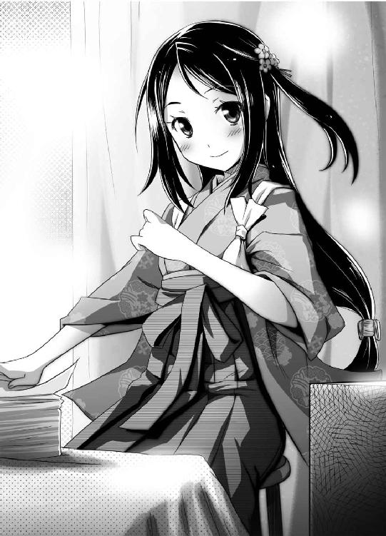
こんなことを、一週間も......ジンは、頭を抱えた。なんでこうなったのか──今はもう、後悔しかしない。ヨミがここまでジンの生活に干渉してくるとは、想定外だった。
「............」
「ジンさん、手が止まっています。早くやらないと、いつまでたっても終わりませんよ」
「......いや、どうにも喉が渇いて......」
「お茶ですね！ すぐ淹れます」
なぜかヨミは、嬉々としてお茶を淹れてくれた──はい、と、ジンの目の前には淹れたての熱いお茶が出された。
ジンは、なんだか面白くなくて、ついイジワルを言いたくなった。
「悪いな、俺、冷たいお茶の方が好きなんだわ」
「すいません、それは知りませんでした」
言うが早いか、ヨミは勢いよく病室から飛び出し......自販機で買ってきたとおぼしき、ペットボトルのお茶をジンに差し出した。
「今度から冷たいお茶を用意しておきます。今は、市販のお茶でガマンしてください」
「あ、あぁ......」
なぜだろう──ジンは、ちょっとしたいたずら心で、ワガママを言って、ヨミの困った顔を眺めてやろうと思っただけなのに──それなのになんで、ヨミは困るどころか、むしろ嬉しそうにしているのだろう？
「はい、どうぞ」
新しい湯飲みをわざわざ用意して、ヨミはペットボトルの冷たいお茶を入れてくれた。
「おかわりはいくらでも言ってください」
ジンは、わざと音を立ててお茶を飲んだ。
「音を立てるのは下品ですよ」
「音も立てずにお茶が飲めるかってんだ」
思い通りにならず、ジンはだんだん腹が立ってきた。
「ヨミ、なんかハラ減った」
「リンゴ剝きますね」
備え付けの冷蔵庫からリンゴをとりだし、小刀で切っていく......ヨミの手の動きが、すごく速かった。大振りなリンゴ一個の皮を剝くのに、五秒ていどしかかかっていない。その上、剝いた皮は、反対側が透けるくらいに薄かった。
「はい、どうぞ」
手際がよすぎる──リンゴは、普通に美味しかった。それが逆に腹立たしくて、ジンは意地でもヨミを困らせてやると決心した。
「......ヨミ、よく考えたら俺、果物あんま好きじゃなかった」
「ダメですよ、果物はビタミンたっぷりで体にいいんですから」
「そんなもんより俺ラーメン食いたい。こってり豚骨で背脂たっぷりのやつ」
「ダメです！ そういう体に悪そうなものは、絶対ダメです！」
「あぁ......腹が減って、やる気なくなってきたな......」
「まったくもぅ......」
「タダのラーメンじゃダメだぞ、三丁目の角の宝来軒のこってりラーメンがいい」
「わかりました」
ヨミが困った顔で、部屋から出て行った。
ジンはようやく上手くいったと、にんまりした──わざと出前のない店を指定したのだ。さすがにこればっかりはどうしようもないだろう──ジンがほくそ笑んだその時......
「お待たせしました、ジンさん」
あっというまにヨミが戻ってきた。
「は、早かったな」
「はい、喜んでください、ジンさん」
ヨミが、満面の笑みで言う。
「出前を頼みました。出前はやっていないそうなんですが、特別にやってくれるそうです」
「え？ 出前って？」
「ラーメンです。食べたいんですよね？」
信じられない──出前はやっていない店だったはずなのに。
「入院患者がどうしてもあなたのラーメンを食べたいと何度もつぶやくんです、と説得したら、店主の方が快諾なさってくださいました」
よく考えたら、ヨミは元々、父親の遺言一つで当てもない旅に出てしまうほど、行動力のある少女なのだ。ジンは、ヨミを甘く見すぎていたと後悔した。
「さぁ、ジンさん。ラーメンはすぐ来ますから、それまで始末書を書きましょう」
「あぁ......悪い、俺ちょっとトイレに......」
「はいはい」
ヨミががさごそ、ベッドの下に手を伸ばした──すごく、イヤな予感がした。
「はい、シビンです。どうぞ」
ヨミが、少しそっぽを向きながらシビンを差し出してくる。
「わたしは横を向いていますので──あぁ、でも、前を見ないとこぼしちゃいますね......しかたありません、恥ずかしいですが、わたしも覚悟を決めました」
決意を固めた表情で、ヨミはジンを見つめた。
「さぁ、ジンさん、どうぞ......恥ずかしがらずに」
「覚悟なんか決めんでいい!! トイレくらい行ける！」
「ダメです！ お医者様が、絶対安静と言っていました」
ジンはもう、本気で泣きたくなってきた──ジンの、平穏無事で怠惰な毎日は、どこへ消えてしまったのだろう......
ちなみに──その後ラーメンの出前が届き、匂いで当然看護師や医者にバレ、内臓破裂していた患者がそんなもの食べられるかと医者がつかみかかってきて──散々だった。
さすがのジンも疲れ果て──もう、抵抗する気力さえ失い、ヨミに言われるまま、全てを諦め、始末書を書く作業に没頭した。
カツカツ──文字を書く音が静かに響く中、ヨミが、ふと尋ねてきた。
「ジンさん......わたしは、役に立っているでしょうか？」
「役に立ちすぎて困ってるくらいだ」
「そうですか」
「............」
会話が、とぎれる......ジンは、ふぅ、と息を吐いた。
「役に立つとか立たないとか、気にするなって言っただろう」
「でも......」
「......お前は、俺からすれば、家族の一員だ。家族は、ソバにいて当然......役立つかどうかなんて関係ないんだよ」
「はい......で、でも、家族と言っても、わたしまだ若いですし、籍を入れるのはもうちょっと待っていただかないと......」
「え？」
「い、いえ、なんでもないです......」
赤い顔でうつむくヨミ──こいつは何を言いたいんだ？ ジンは少し首をひねったが、まぁいいか、と思い直す。
──あの時、虹色に光っていたジンの眼は、今は元に戻っている。戻ると同時にジンの性格も、普段通りの怠惰で自堕落なものになっていた。
霊皇──その力は強力だが、今のジンはそれを自由に使えるわけではない。ジン自身に制約が多いためだ。
もしこれから先ヨミと共に生きていくならば──ジンは、失った資格を取り戻す必要がある。一度は全てを投げ出したが、もう一度、様々なものを背負う必要があるようだった。
「七剣八刀、か......」
「え？」
「なんでもないさ......なんでもな」
ジンは、ベッドの傍らに立てかけられた、鉄舟の遺作を見つめた──全ての鍵は、この刀次第なのだと、ジンは考えている。
これから先どうなるかはわからないが──もう、投げ出したりはしない。今度こそ、ジンは全てを取り戻してみせる──そう決意した。
......しかし、なにか、大切なことを忘れているような......そんな気がした。
『ハァ、ハァ......さすがにやるな。剣轟の一人なだけはある』
「......お前も......できる......」
林の中──キョウスケと、金剛はにらみ合っていた。
あれからどれくらい戦い続けただろう──実力が伯仲する二人は互いに決定打に出られないまま、延々と、戦い続けていた。
『だけど、僕には──行かなきゃいけないところが、待っている人が、いるんだ！ あの人にもう一度会うため、あの人を救うため、あの人を手に入れるため──僕は、絶対に勝たなきゃいけないんだぁぁぁぁぁぁぁっ!!』
「......勝負......」
二人の間で、さらに緊張が高まっていく。
『うぉぉぉぉぉぉぉぉぉぉぉぉぉ!!』
雄叫びを上げて、キョウスケは、金剛へ猛然と立ち向かっていった。
──待っていてください、アイさん！ こいつを倒して、僕は必ず、あなたのもとへ駆けつけます！ そして、その時こそ、僕の、ウソ偽りない気持ちを、正直に、あなたに告白します！ だから──だから、もう少しだけ、待っていてください！
──精も根も尽き果て、ボロボロになったキョウスケが日本支部に帰還し、そのままジンの隣の部屋に緊急入院することが決定したのは、それから三日後のことだった。
（了）
あとがき
この本を手に取ってくれた皆様、ありがとうございます。お買い上げくださった読者の皆様、ありがとうございます。美麗なイラストを描いてくださったぺたんこさいど様、ありがとうございます。八街のイメージ通りにキャラクターの姿を描いていただいて、感謝の言葉もありません。もちろん、その他多くのこの本の出版に関わった皆様にも感謝いたしております。本当にありがとうございました。
初めまして、あるいはお久しぶりです、八街です。近況報告も兼ねて、知人との最近のエピソードを書こうと思います。
先日友人から、近くに来たので会わないか、と電話がありました。この友人、とある国家試験を受けにきて、その試験会場がたまたま八街の家の近くだったので電話したらしいのです。以下はその時の会話です。
八街「で、今日の試験はどうだったのだ？」
友人「ダメだった──オレにできるのは神頼みだけだったよ」
八街「まぁ、そういうこともあるさ」
友人「そういうわけで試験会場で祈りを捧げた、オレ様の女神をお目にかけよう」
なにをトチ狂ったか、友人はその場でポケットからフィギュアを出しました。それは、某南さんの家の三姉妹のデフォルメフィギュアでした。ちなみにそこは普通のレストランです。間違ってもアキバ帰りの戦利品を仲間内で披露するような場所ではありません。周囲には一般ピープルの普通の視線があったのです。
八街「これは......ダメでしょ」
友人「なんだと、オレはもう彼女にすがる以外の道はなかったのだよ」
友人は、三姉妹の次女のカナを掲げました。
八街「ちょ、おま......なんでカナ？」
友人「絶望的な状況でも決して諦めない不屈の闘志を彼女から得たかったのだ」
八街「三姉妹で一番のバカ野郎である次女に試験の願掛けとか、ダメだろ」
友人「うるせぇ、オレ様は次女が大好きだぁぁぁぁぁぁぁぁ!!」
八街「ダメだこいつ、早くなんとかしないと......」
その後、試験の結果が発表されました。
三科目を受験した友人は、見事三科目全て不合格でした。予想通りです。
カナに神頼みをしてしまったが故に不合格になってしまったのか、追い詰められすぎてカナに頼るしかない溺れる者はワラをも摑む状態だったのか、どっちが先なのかはわかりませんが、とにかく不合格でした。
不合格でした。
重要なことなので繰り返しました──と、いうわけで友人も、試験でカナに頼ってはダメだと気づいたことでしょう。素直におりこうさんの小学生三女チアキを崇拝すればよかったのに......そんなわけで八街はその友人に、三女チアキに改宗するように薦めました。
友人「オレはカナ一筋なんだＹＯ、ロリコンは失せろ！」
......中学生次女カナ相手だってロリコンじゃねーか、ばーかばーか！......まぁ、そんなわけで、今年もたぶん不合格だと思います。
ちなみにこのあとがきはフィクションです。決して、特定の作品のキャラクターや、実在の人物の品位を損ねる意図で書かれた文章ではありませんので悪しからず。
そんなこんなで紙幅もつきてきたので、次巻でお会いしましょう。
感想・ファンレターの宛先
〒一〇二―八一四四
東京都千代田区富士見一―十二―十四
富士見書房 ファンタジア文庫編集部気付
八街歩（様）
ぺたんこさいど（様）
キミが誘う境界線１
そのナマクラはよく斬れる
八街 歩
平成23年5月25日 発行
発行者 山下直久
発行所 株式会社富士見書房
〒102-8144 東京都千代田区富士見1-12-14
http://www.fujimishobo.co.jp/
(C)2011 Ayumu Yachimata, Petancoside/Fujimishobo